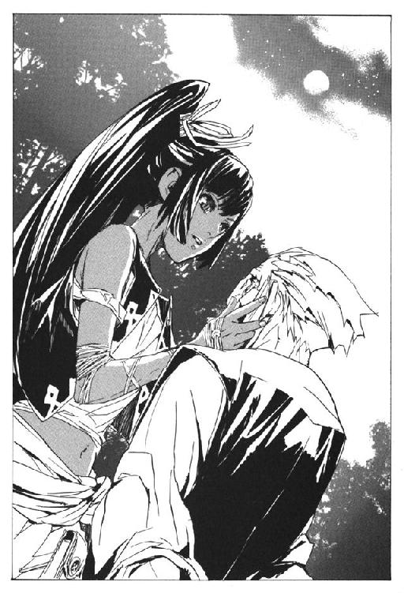

| 戦う司書シリーズ BOOK 06 戦う司書と荒縄の姫君 | |
| 山形石雄 | |
| 集英社 (2013) | |

戦う司書と荒縄の姫君
BOOK 6
山形石雄
この本は縦書きでレイアウトされています。
また、ご覧になる機種により、表示の差が認められることがあります。
登場人物紹介
楽園管理者
神溺教団の総帥。正体は謎に包まれている。
エンリケ
武装司書の協力者。かつては神溺教団に属していたが、ノロティの働きで離反した。
アーキット

ノロティが出会った謎の少年。武装司書を強く憎む。
〔武装司書〕
ノロティ
武装司書見習いの少女。格闘戦を得意とし、最近著しく成長している。
イレイア
武装司書。武闘派の実力者だが、普段は優しいおばさん。
ミンス

武装司書。粗野だが勇敢な性格の男。
ハミュッツ
バントーラ図書館館長代行。冷酷で極めて好戦的。投石器を操る。
イラスト／前嶋重機
戦う司書と荒縄の姫君
序 章 姫君の希望と情熱
相手の動きは速い。向かい合っている武装司書ミンス＝チェザインを上回っている。ミンスは拳銃で相手を牽制しながら、後退を続けていた。相手は接近戦に特化した戦士。近づかれれば不利になる。
「ざけんな！」
ミンスの銃弾を、相手は避ける。ゴム製の銃弾が、彼女の褐色の髪を掠める。彼女は、横や下ではなく前に向かって避けた。体を極端に前傾させ、前に向かって跳んだ。
「ちい！」
ミンスは退くが、三メートルまで間を詰められた。さらに後退するか、接近戦を挑むか、ミンスは判断を迫られる。
後者を選んだ。ミンスは、手にしていた拳銃を投げ捨てる。左手に持っていた木剣を振り上げて、相手に切りかかる。
「消極策だ」
傍らで二人の戦いを見ていたエンリケ＝ビスハイルは、そう呟いた。無理をしてでも距離を取るべきだ。接近戦ではミンスの勝ち目は薄い。
夕暮れのバントーラ図書館。本館の裏手にある訓練場の一角である。三百メートル四方ほどの野原を柵で囲っただけの簡単なリングのなかで、ミンスたちは実戦訓練を繰り広げていた。戦う二人を、エンリケが見守っている。
ミンスが、左手の木剣を豪快に振り下ろす。懐に入りかけていた相手は、寸前で止まって地に伏せる。
その後の動作は、ミンスの目に追えていたかどうか。両手を軸にして体を回転させる。足が地面の上、数センチのところをすべる。踵がミンスのくるぶしの辺りに、正確に命中する。両足を同時に刈り取られて、ミンスの体が宙に浮く。
さらに体をもう一回転。両足を広げて、ミンスの胴体を挟み込む。
二人の体が地面を転がる。次の瞬間、エンリケは言った。
「そこまで。ノロティの勝ちだ」
二人の体が、ぴたりと止まった。
仰向けになったミンスの腹に、ノロティ＝マルチェが馬乗りになっていた。左手でミンスの左手首を掴んでいる。右手の拳は今まさに打ち下ろされようとしているところで止まっていた。
これが実戦ならば、逃れる間もない拳の雨が降り注いでいただろう。かつて『怪物』ザトウを沈めた、ノロティ必勝の形である。今のノロティにこの形を取られたら、脱出は不可能だ。
「これで、九勝九敗ですね。五分です」
ノロティが、そう言ってにやりと笑った。腹の上のノロティに、ミンスが文句を言う。
「いいや九勝八敗一引き分けだ。わしが一つ先行しとる」
「まだ言ってるのか」
エンリケがノロティに手を貸し、ミンスの上からどかせる。ミンスも立ち上がる。
「あれはよ、エンリケが止めるのが早すぎたんじゃ。あれは引き分けだ」
エンリケはうんざりする。五回前の戦いのことを、ミンスはずっと引きずっている。負けず嫌いは悪いことではないが、しつこい。
「いいえ、あれはあたしの勝ちです」
ノロティが唇を尖らせる。
「違うわ。わしには逆転の秘策があったんだからな」
「どんなのですか。見せてください」
「見せろと言われてもすぐには見せられんの、戦いは流れだからな」
戦いが終わったばかりだというのに、二人は元気に口論を始める。
「そんなのないんじゃないですか」
「あるわい」
「うそつき」
「ほお、言うようになったの？」
うんざりしたエンリケが、二人の間に割り込む。
「どっちでもいい」
ミンスはなおも不満そうにしている。
「.........どっちでもよくはないわ」
「お前もしつこいな。まあいい。今日のところはこれで終わりにする」
そう言うと、ノロティは不満そうな顔をした。まだ続けられるのに、と言いたげだ。
「.........元気が余ってるなら走ってこい。島内を十周、全力疾走だ」
「はい！」
そう言うと、ノロティは柵を飛び越えて駆け出して行った。ノロティがバントーラ図書館の塀を飛び越えるのを見て、ミンスはどっかりと腰を下ろした。エンリケが訓練を止めたのは、ミンスのほうに疲労の限界が来ていたからだ。
エンリケとノロティの出会いから九カ月が過ぎている。その間にノロティは、見違えるほど強くなっていた。最初に出会ったときとは別人である。
もはや、監督官のミレポックでは練習相手にならない。エンリケや他の武装司書に頼んで、実戦訓練をつけてもらわなければならなくなっていた。現役の武装司書が、見習いに歯が立たないというのは、そうある事態ではないだろう。
「強くなったな、あいつ」
「努力しているからな、ノロティは」
と、エンリケは素直な感想を漏らした。現在エンリケは見習いたちの訓練を担当している。過酷な指導についてきているのは、見習いたちの中でノロティだけだ。
「しかし、くそ、腹立つな。あいつに負けると他の奴の十倍腹立つぜ。自信失うわ」
ミンスはまだ悔しがっている。彼は元来情報支援型の能力者で、戦いは本領ではない。気にしなければいいのにと、エンリケは思う。
「正直、なんであいつがまだ見習いをやっとるのかわからんわ」
とミンスが言った。
「人間性の問題だろう。ミレポックやお前は認めているようだが、他の者はまだ、頼りない娘としか思っていない」
「たしかにな」
エンリケは小さくため息をつく。実力では申し分がないノロティだが、武装司書への昇格は見送られている。イレイアが反対し、ハミュッツやマットアラストも積極的ではない。
その気持ちもわかる。人を疑うことを知らず、殺すことを強く嫌悪する。その辺りの甘さが抜けない限り、武装司書には不適格だろう。
「ま、昇格は近いわな。結局は強ければいいのが武装司書だからの。人間性なら代行やモッカニアのほうが大問題だしなあ」
そう言ってミンスは笑った。
「そうだな」
と、複雑な気持ちでエンリケは答える。昇格させてやりたいのは本心だが、武装司書になれば今以上に危険も増える。それが心配で、どうしても嬉しい気持ちにはなれなかった。
「さてと」
ミンスが立ち上がった。
「そろそろ行くわ」
「もう行くのか？」
「ああ時間が押しとるわ。次はロナ国にスパイ探しだからの」
ミンスの能力は人の魂や心理を見る、聖浄眼という力である。裏切り者やスパイを見つけ出すには最適の能力だ。神溺教団との戦いのため、彼は休む間もなく世界各国を飛び回っていた。
「すまんな。忙しいところを」
「なに、ええストレス解消になったわ。また用があったら呼んでもええぞ」
そう言って、ミンスは立ち去っていった。
エンリケは訓練場を離れ、自宅へと向かう。バントーラ過去神島の下町に粗末なアパートを借りていた。現在の彼は、バントーラ図書館の非正規職員という扱いになっている。給料は一般司書と同じぐらいだ。武装司書はもとより、見習いよりもずっと低い。
強さだけで評価されれば、一年で一生遊んで暮らせる金をもらっても不思議はない。だが、エンリケには不満はない。自分から言い出したことだからだ。
高い給料をもらってしまうと、面倒が増える。いずれバントーラ図書館を去ると決めているのだから、深くは関わりたくなかった。
「エンリケさん」
図書館の中庭で、ふいに話しかけられた。見ると武装司書のイレイアがベンチに座っていた。仕事を終えたあとなのか、優雅に編み物などをしている。
「お仕事、ご苦労さま。少しお話でもしない？」
イレイアが、太った体をベンチの端によける。エンリケは腰かける。
「見ていたわよ、ノロティさんのこと。信じられないわ。あそこまで強くなってたのね」
「毎日のように俺と戦って、強くならないほうがどうかしている」
イレイアが苦笑する。
「たまには素直に人を褒めたらどうかしら？」
エンリケは顔をそらし、ふん、と鼻を鳴らした。
「長く勤めてみるものね。たくさんの子を育ててきたけど、あれほど予想を裏切った子はいないわ。あなたのおかげよ、エンリケさん」
「違う。ノロティは自分で強くなった。それだけだ」
エンリケは本心でそう思っている。エンリケが教えた見習いの中で、ノロティだけが地獄の訓練についてきた。
「昔から、情熱だけは人一倍の子だったわね」
イレイアが編み物を続けながら言った。そういえば、イレイアは後進の指導も担当している。見習いになるまでのノロティを育ててきたのは彼女だ。
エンリケは、前から聞いてみたかった疑問を口にした。
「そういえば、なぜあいつは武装司書になりたがっているんだ？」
「あら、知らないの？ じゃあ、あの子の出身とかも知らないの？」
「あまり個人的な話はしない」
イレイアが苦笑する。
「もう少し、いろいろ話せばいいのに。どうして妙に距離をとるのかしら」
「放っておけ」
エンリケがむくれる。
「ノロティさんはね、南方辺境の山間部から来たのよ。ヤギを飼う以外、なんの産業もない、小さな村だと言っていたわ。エンリケさん、驚きなさい。凄いこと教えてあげるわ」
イレイアが少し沈黙をはさむ。
「あの子は、村ではお姫様だったのよ」
エンリケは驚いた。ノロティとお姫様。どう考えても想像できない。
「信じられないわよね。しばらく、嘘だと思ってたわ。ミンスさんが聖浄眼で見たから嘘じゃないってわかったのよ」
「それがなぜ武装司書に？」
「あの子、家出してきたの。どうしても村の外に行きたいって言ってね」
「村では、心配しているだろう」
「でしょうね。故郷のことを聞くと、すごく困った顔をするわ」
イレイアは笑った。
「それで、どうして武装司書に？」
「小さい頃に家出してきたから、行くあてもないし、困っていたの。武装司書の学校に入れば、ただでご飯も食べられるし、教育も受けられるって聞いて、飛び込んできたのよ」
「それだけか？」
「それだけじゃないわ」
そう言って、イレイアは笑い出した。
「思い出してもけっさくよ。どうして武装司書になれると思ったのか、聞いたときのこと。
村では一度もケンカに負けたことがないから、だって」
さすがに、エンリケも唖然とした。
「よく武装司書にしようと思ったな」
「とんでもないわ。絶対に無理だと思ったわ。悪いことは言わないから、やめなさいとも言ったのよ」
「.........でも、やめなかったのか」
イレイアは苦笑した。
「私の言うことをきかなかった子はここ十年であの子だけよ。本当に困らされたわ」
イレイアが困る理由も、理解できる。ノロティは素直に見えて、実は人の言うことをほとんどきかない。
「はっきり言うけど、あの子のどこを探しても才能なんて欠片もないわ。あの子の周りには、才能のある子が山ほどいた。
でもね、そんな才能のある子たちが、いつの間にかノロティさんに追い抜かれているのよ」
「.........」
「本当に不思議な子よ。絶対無理だと思うようなことが、いつの間にか無理じゃなくなっている。私は武装司書の中で一番長いけど、あの子みたいなのは見たことがないわ」
「ならいつか、俺やお前を超える日が来るかな」
エンリケは、半ば冗談のつもりで言った。しかし、イレイアは否定しなかった。
「まさか、と言いたいところだけどね。あの子に限ってはわからないからね」
ノロティはこれからどこまで強くなるのか。武装司書になり、無事に仕事をこなせるのか。
たしかに不安はあるが、同時に何か期待させるものもある。ノロティは、他の誰にもない何かを持っている。何かはわからないが、何かを持っている。
そう思ってしまうのは、育てたエンリケの欲目なのだろうか。
ともあれ、ノロティの武装司書への昇格は、日々近づいていた。
そんな折。一九二五年の、十二月十八日。
ノロティ＝マルチェが、死んだ。
第一章 空の鯨と鐘の音の怪物
鈍く、重苦しい鐘の音がバントーラ過去神島に響いている。
鐘の音を聞いた武装司書は、全ての任務を中断し、最優先で集合する。『怪物』襲来の時や、モッカニアの反乱の時も鳴らされた鐘だった。
一般司書が小走りに避難していく。見習いが利用客を安全な場所へ誘導していく。その間を縫って、武装司書たちが集合場所の円卓会議室へ走っていく。
エンリケだけが唯一人、ロビーの椅子に座り込んでいた。感情のこもらない目で、彼らを眺めていた。ノロティの死を知ってから十日。誰の言葉にも耳を貸さず、彼はただ座り続けていた。
自分は、なぜここにいるのだろう。エンリケは思った。もうこんな場所に用はない。ノロティが死んだのならば、バントーラ図書館と自分を繋ぐものは何もない。
しかし、エンリケはここに座っている。走り回る人々の中を、目がさまよっている。いるはずのないノロティの姿を、探していた。
何カ月前のことだったか。このロビーでチェスを差したことがある。利用客の暇つぶし用に、ロビーには遊具がいくつか置かれていた。暇をもてあましていたエンリケに、ノロティが教え込んだのだ。
「ええと、エンリケさんの持ち時間あと四分です」
喋っているのはノロティだけだった。エンリケは無言で、ひたすら盤を睨みつけている。睨めば駒を取れるというルールは、チェスにはない。
エンリケは、騎兵の駒を動かす。僧正と城兵を同時に狙える位置である。
「あ、いい手ですね、じゃあこっちに逃げます」
ノロティが城兵を後ろに下げる。エンリケは僧正を取る。その時、後ろで見ていたハミュッツが言った。
「どこがいい手なのよ。ノロティ、ｆ７に女王でチェックメイトじゃない」
ノロティが、どうして余計なこと言うのかなあという顔をした。エンリケの体から、無意識に青白い火花が散った。
「ハミュッツ、ノロティは強いのか？」
「全然」
ノロティの頬を冷や汗が流れた。エンリケは無言で立ち上がった。
「用事を思い出した。帰る」
ノロティが慌てて袖を掴んでくる。
「あの、チェスは飽きたから、次ダーツしませんか？ ダーツ知ってますか？」
「知らない」
「あたしも得意じゃないんですけど、遊びませんか。ほら、マットアラストさんがいるから、教えてもらって」
背後でハミュッツが呟くのが聞こえた。
「あの子のお守りも楽じゃないわねえ」
そう、そんなことがあった。このロビーで、ノロティは何かとエンリケを遊びに誘っていた。もう、遊びに誘う者は、いない。
一月ほど前のことだったか。
その日もエンリケは、見習いたちに訓練を行っていた。エンリケの訓練は、実戦のみだ。見習いたちは自由にエンリケを攻撃し、エンリケも自由に攻撃する。攻撃を食らっても怪我をしない、エンリケにしかできない訓練方法だ。
帰り際、イレイアが話しかけてきた。
「エンリケさん、最近甘くないかしら」
「そうだな」
最初は、最悪の場合死ぬぐらいの攻撃をしていた。今は、最悪の場合、大怪我をするぐらいの攻撃にとどめている。イレイアがたしなめる。
「遠慮なさらないでエンリケさん。殺す以外は、何をしても構わないんですよ」
「それはそうだが......すまん」
珍しく、エンリケは素直に謝った。
「あら、どうしました？」
「ノロティが困っている」
最近、訓練が過激すぎると、見習いたちがノロティに文句を言っているらしい。どうせなら自分に言えばいいのに、意気地のない連中だとエンリケは思っている。
だが、ノロティのためならば仕方がない。エンリケは手加減をするようになっていた。
「あら.........それではしょうがないわね」
とイレイアが笑った。エンリケはほっとした。ノロティが困ると、エンリケも困るのだ。
だが、エンリケを困らせる相手はもういない。
これは三カ月前のことだ。ヴォルケンという男が、オリビアを連れて逃げたときだ。
あの男が、神溺教団に寝返っていたとは思わなかった。卑劣な人間には見えなかったのだが。
オリビアなる人物のことはよくわからない。結局は、共に逃げたヴォルケンに殺されたと聞いている。何が目的だったのだろうか。
ともあれ、その二人が逃げたあと、エンリケに異変が起こった。
教団に奪われた記憶が、突然蘇ったのだ。
今は亡き両親のこと。戦火の中に消え失せた村のこと。取り戻したのは記憶の一部だけだが、それでもエンリケは、自分の生い立ちを知ることができた。
取り戻したのは、エンリケの記憶だけではない。エンリケとともに『怪物』に食われた仲間の記憶も共に蘇った。仲間たちは死んだ。だがその記憶は、まだエンリケの中に生きていたのだ。
「エンリケさん、メリオト公国の出身だったんですねえ」
と、ノロティが意外そうに感想を漏らした。
「正確には、メリオト公国西部だな。今は独立して、クラー自治共和国になっている」
とマットアラストが訂正してくる。
「今はどうなってるんだ？」
エンリケが聞いた。記憶の中の故郷は、いつ終わるともわからない戦乱の中にあった。エンリケはその中で両親を失った。その後、おそらくは神溺教団に囚われたのだろう。
「戦争は終わった。新政府もどうにかこうにか上手くやってるよ。今は平和になっている」
「そうか」
と言ってエンリケは笑った。記憶の欠片しかない故郷。しかし、それでも平和になったという話は嬉しかった。
「帰りたいですか？ エンリケさん」
ノロティが聞いてきた。しかし、エンリケは首を横に振る。
「今すぐじゃなくていい。帰るのは、教団との戦いが終わってからにする。それに......」
エンリケは目を閉じる。記憶が戻ったのは自分一人だけではない。怪物の島で、共に囚われていた仲間たちの記憶も戻っていた。
エンリケと同じ戦災孤児もいる。人買いに売られた子供もいる。落ち度があって擬人から肉に落とされた者もいた。彼らの意思はもうないが、記憶はエンリケの中に生きている。
「他の連中の故郷にも、行かなければいけない。世界中、廻ることになる」
「じゃ、世界一周旅行ですね」
ノロティが呑気に言った。
「そうだな。悪くない。世界一周旅行か」
ノロティは、どういうわけかわくわくした目で、エンリケを見ている。その意味に気がつかず、雑談を続けた。時間が過ぎ、仕事のためにノロティが席を立った。すると突然、マットアラストがエンリケを小突いた。
「何をする？」
「誘えよ」
「誰を？」
「ノロティを誘えよ。一緒に行かないかって。そういう流れだったろ？」
「流れってなんだ？」
「.........全く、君はどうにも」
マットアラストが悩んでいる。どういうことかはわからない。
とはいえ、ノロティを誘って世界を廻るというのは、悪くないと思った。それを切り出せないまま、時間だけが過ぎてった。
そして今、誘う相手はいなくなった。
恋をしていたわけではない。
結ばれたいとか、一生を共に歩みたいとか、そんな大それたことは考えていなかった。
ただ、ノロティが生きていればそれでよく、幸せならばなおよかった。
強くなって欲しかった。自分の身と自分の幸福を守れるほどに。ノロティが強くなるまでの間は、エンリケがノロティと図書館を守るつもりだった。
そして神溺教団を倒し、ノロティが一人前の戦士に成長したら、エンリケはバントーラ図書館を去るつもりだった。
いつの日か、エンリケが暮らすどこかの街に、年に何度か息災の便りが届くならば、それ以上は何も望まない。それでいいと思っていた。
望みすぎれば、裏切られる。多くを望んではいけないと、エンリケは思っていた。
だが、それすらも、贅沢すぎるなら、自分は一体何を望めばいい。
「.........エンリケさん」
目の前に、ミレポックが立っている。何かを言おうとしている。慰めに来たのか、励ましに来たのか。優しいことだとエンリケは思った。
「なぜだ？」
エンリケは言った。
「なぜ、俺が生きている。なぜ、俺ではなくてノロティが死ぬ。
あいつの順番はもっとずっとあとで、俺の順番はもっと先じゃないのか。なのに、あいつが死んでいて、俺が生きている。なぜだ？」
「.........」
ミレポックは何も言わなかった。言おうとしていた言葉の全てを、封じられたようだった。
エンリケは、レーリアのことを思い出した。エンリケに笑顔を見せた最初の人間。彼は死んだ。人間爆弾に変えられて、無為に死んでいった。
仲間たちのことを思い出した。愚かだった自分と、愚かなガンバンゼルの手で殺された。
クモラのことも思い出した。もしかしたら愛せたかもしれない少女は、エンリケの手にかかって死んだ。
そして、ノロティが死んだ。
皆、生きているべき人だった。生きるべき彼らが死に、なのにエンリケが生きている。
「なぜ、皆、俺を残して死んでいく。
順番から言えば、俺だろう。一番死んでも構わないのは俺で、一番死ぬべきなのも俺だろう。
なのに、なぜ俺が生きている。俺が生きているのに、皆が死ぬ。なぜだ？」
ミレポックは、何も言えない。ただ、言葉を探し続けている。
「もうわからない。俺は、頭が悪いからな。わからない。どうしても」
ミレポックが意を決し、言葉を発する。
「エンリケさん.........あなたは」
「喋らないでくれ。俺にはわからないんだ」
ミレポックは自分を戦わせようとしているのだろう。ノロティの敵を討つために、ノロティの遺志を継ぐために、戦えと言いに来たのだろう。
しかし、その言葉に応えるつもりは、もうない。
「わからない。だから、行く」
エンリケが立ち上がり、歩き出す。周囲の人々がエンリケを避け、彼の前に道をつくる。
「待ってください！ エンリケさん！」
ミレポックがエンリケの前に立ちふさがる。行かせないと、その目が言っている。それを無視して歩き続ける。
その瞬間、ホールに大声が響き渡った。
「やめろエンリケ！」
その大声に、ミレポックどころか、ロビーにいた全員の動きが止まった。声を発したのは、マットアラストだった。ロビーの入り口に、息を切らせて立っていた。
「ミレポ、どくんだ」
「でも！」
マットアラストが、首を横に振る。
「あと二秒で、君は死んでいたぞ」
ミレポックは、一歩後ずさった。マットアラストの予知は正しいだろう。今の自分が何をするか、エンリケ自身にもわからなかった。目の前の、知らぬ仲でもない女を、殺すことぐらいはやるかもしれない。
「.........エンリケ君」
エンリケとマットアラストが睨み合う。数瞬の後、マットアラストが道を開けた。
「行きなさい、エンリケ君」
「そうさせてもらう。世話になった」
エンリケが、横を通り過ぎて出口へと向かう。後ろで、ミレポックの声が聞こえた。
「怪物の、復活ですか？」
マットアラストの声が聞こえる。
「違う。誕生だ」
その声を聞きながら、エンリケは図書館を出る。
鐘の音はいまだにバントーラ図書館の中に響きつづけている。十カ月前と同じように。
十カ月前、この場所をガンバンゼルが生み出した『怪物』が襲撃した。今、その時と同じ場所で、同じ鐘の音が響く中、新しい怪物が誕生した。
生まれたのは、前以上の怪物。目の前に立ちふさがる者全てを砕く怪物だった。
バントーラ図書館は、戦いの始まりに揺れている。その中で、怪物だけが、静かだった。
「そう、行っちゃったのね」
ミレポックから報告を受けたハミュッツはそう呟いた。バントーラ図書館最上階の館長代行執務室である。
集合させた武装司書たちの指揮は、マットアラストに任せていた。階下の円卓会議室で、対策を話し合っているところだろう。
ハミュッツはそれに加わっていない。一人、考え事を続けていた。
「しょうがないわ、エンリケ君のことは。あとで考えましょう。それよりも、当面の敵よ」
ミレポックは頷いた。唇を引き結んだ強気な顔の裏には、隠しきれない恐怖の色があった。バントーラ図書館には、今、最大の脅威が迫りつつあった。その表情を、臆病と叱咤するつもりはない。
机の上にはラジオが置かれている。ラジオから聞こえてくる音声は、イスモ共和国国営放送のアナウンサーの声だった。
『現在、通常の放送を中止して、臨時ニュースを放送しております。しばらく放送から耳を離さないよう、お願いします。繰り返し放送します。現在通常の放送を中止して......』
アナウンサーは叫ぶように大声を張り上げている。今朝から、国営放送の内容は混乱の極みにあった。
『しかし、いや、その.........一体、何が起こっているのでしょうか。我がイスモ共和国はどうなってしまったのでしょうか！』
ミレポックの手が、ラジオのスイッチを止めた。
「代行、ずっと何を考えてるのですか？」
「今までの戦いをおさらいしているのよ。ミレポ、つき合って欲しいんだけど」
ミレポックが頷いた。ハミュッツは話し始める。
「最初は、アロウ沖の船舶強襲事件よ。武装司書にとっては始まりだったけど、神溺教団はおそらく二十年以上も前から、秘密裏に準備を進めてきたのね。
この時、わたしたちには教団について何一つ、情報がなかったわ。強大な戦力を持ってても、どこを攻撃すればいいのかがわからなかったわ。情報戦という見地でいえば、圧倒的大差で敗北していた。ここまでは、いいわよねえ」
ミレポックが頷いた。
「一つ目の分岐点は、トアット鉱山竜骸咳事件と『怪物』事件。しんどい戦いだったけど、これで武装司書は神溺教団の情報を掴んだわ。
得られた情報はたいしたもんじゃなかったけどね。シガルに従っていた部下の身元とか、怪物の島にあった物資の出所とか、組織の形態とか。
でも、これらをもとに、少しずつ情報を集めたわ。結果的に言えば、教団はこの攻撃を行うべきではなかった。奴らの最大の武器である、秘密を失っちゃったわけだからね」
ここまでも、間違いはない。ミレポックがまた頷く。
「二つ目の分岐点は、モッカニアとの戦いね。
あれでわたしを仕留められなかったのは、教団の最大の失策よねえ。モッカニアとフィーキーを失ったことは大きいけど、それでもこっちの損害は最小限に抑えられたわ。
これで、戦況は大きく武装司書有利に傾いたわ」
「その後は、反攻に転じています」
「その通り。今までは攻め込まれてたけど、今度はこっちから攻撃をする番よね。
今まで得られた情報をもとに、各地に攻撃を開始したわ。
まず、ルイークがメリオト公国の奴隷商人を暗殺したわ。肉になる子供を集めてたのね。
イレイアおばちゃんたちが、戦士を育ててた施設を襲撃したわ。
キャサリロとガモが、常泣きの魔剣アッハライを盗み出そうとしていた信徒を抹殺した。
そしてあんたが信徒の『本』を集めていたシャール＝ストライト、自称ラスコール＝オセロを打倒した。主なものだけでも、まだいくつもあるわ。
モッカニア以後、教団からの攻撃はなかった。こちらが一方的に攻め込んでいた。そうよね」
「間違いないと思われます」
「もう一人、活躍してたのがミンスね。
神溺教団は世界各地にスパイを潜り込ませていたわ。
グインベクス軍は、教団に物資を横流ししてた。イスモ共和国の経済界は、神溺教団の金づるになっていた。新聞社が大衆を扇動して、反武装司書の民意をつくろうとしていた。武装司書の中にまでスパイがいたわ。
ミンスがこいつらを片っ端から見つけ出して抹殺したわ。この功績は大きいわよ。この戦いで活躍した人を三人挙げるとなったら、わたしとミンスと、あと一人ってところよ。
ヴォルケンはどういうわけか見逃してたけど」
「.........ヴォルケン？」
「ああ、あんた記憶抹消してたんだっけ。まったく何考えてるのよ、お馬鹿。
で、四つ目の分岐点が、肉たちに起こった謎の現象。ある日突然、世界各地の肉たちが記憶を取り戻して、神溺教団に反乱しはじめたわ。
たくさんの肉たちが、武装司書に保護を求めてきた。暴徒と化した肉たちの手で破壊された施設もあった。これが神溺教団の崩壊をさらに加速させたわ。
現在教団にどれほど余力が残っているのかはわからない。でも、教団は壊滅に向かいつつある。そのはずだったわよね」
「そう考えるほか、ないと思います」
「教団にはもう余力がないはずだった。なら、これはどういうこと？」
ハミュッツは、もう一度ラジオのスイッチを入れた。アナウンサーは前と同じように、大声を張り上げている。
『もう一度お伝えいたします。
本日未明、イスモ共和国政府がバントーラ図書館に断交を宣言、同時に宣戦を布告しました！
すでに海軍が、バントーラ図書館に進攻を開始しています。繰り返します、これは誤報ではありません！ イスモ共和国が、バントーラ図書館に戦争を仕掛けました！』
ミレポックとハミュッツが顔を見合わせる。
イスモ共和国。バントーラ図書館東の大陸を、まるごと領土とした、世界最大の国である。
政治体制は先進的な民主国家。豊富な土地と資源を生かした強大な経済力を持ち、科学技術の発展に力を注いでいる。
あらゆる面で、世界で最も進んだ国である。そのイスモが、反旗を翻した。
四年前、武装司書はグインベクス帝国と戦い、勝利を収めている。しかしイスモの軍事力はグインベクス帝国の倍以上。負けはしないが、無傷で勝てる相手でもない。
「兆候なんて、なかったわよね。イスモはずっと、神溺教団との戦いに協力していたわ」
ミレポックが頷いた。
「潜り込んでいたスパイも、ミンスさんが刈り取ったはずです。もうイスモ共和国には、教団の手は伸びていないはず」
「なら、教団はどうやってイスモを動かしているの？」
二人は沈黙する。ハミュッツはラジオのスイッチをもう一度切った。
「考えても答えは出ないわね。事情はどうあれ敵が来るんだから、こっちの行動は決まってるわよね」
ミレポックは頷いた。イスモ軍を迎え撃つ武装司書は、すでに出撃していた。彼がいるから、ハミュッツたちは呑気にラジオを聞いていられるのだ。
ハミュッツに次ぐ実力を持つといわれる、四人の武装司書の一人。二級武装司書ボンボは、すでに東に向かって飛んでいる。
「まあ、考えてみればいつものことよね。神溺教団が理解できない真似をするなんてさ。
それでこそ、神溺教団ってところよ。ねえ、そうじゃない？ ミレポック」
バントーラ図書館から東に三百キロ。見渡す限り、島の影一つない海の上である。
よく晴れ、風はなく、波は低い。海戦にはうってつけの日和だった。ミレポックの報告によると、イスモ共和国海軍の第三艦隊はこの先五十キロほどの場所にいる。接触まではあと一時間に満たない。
武装司書ボンボ＝タータマルは、一人空を飛んでいた。
（ボンボさん。接触まで、推定で四十五分ほどです。異常ありませんか？）
ミレポックから思考が送られてきた。ボンボは、むふう、と太く熱い息を吐く。
彼の左手には、大きな紙袋がある。中にはコーン油でからっと揚げたポテトが詰まっている。
（あるのね。大変なことが起きてるね）
（どうしました！）
ボンボはざく切りのポテトを口いっぱいに頬張りながら、思考を送り返す。
（飲み物を忘れてきたのね。これ以上食べたら、のどに詰まって死んでしまうのね）
そう言いながら、さらに口にポテトを押し込んだ。
ボンボ＝タータマル。彼の外見を一言でいえば、太い。
運動能力が求められる武装司書にしては太いのではない。一般人としても十分以上に太い。腹はまるで妊娠十カ月の妊婦だ。腕も指も脚も、上等のハムのようにむっちりと柔らかい。
白いシャツは皺だらけだ。冬だというのに、肘まで腕まくりをしている。黒いズボンは、膝がこすれて光っている。
顔には丸いメガネ。その奥の細い目は、海の向こうを見つめながらにこにこと笑っている。
（飲み物が、重大な事件ですか）
ミレポックが、呆れているのがわかる。
（海水でも飲めばいかがでしょうか）
（今、仲間に死んだらどうかと言われたね）
（食べるのをやめればどうでしょう）
（お腹がすくのは死ぬよりも嫌だね）
思考共有の向こうで、ミレポックが顔をしかめている姿が目に浮かぶ。
（とにかく、敵兵力を確認します。砲艦三隻、巡洋艦七隻、駆逐艦十五隻、魚雷艇二十隻、それに空母二隻と航空機百五十機が随行しています）
（それだけ？）
（イスモが保持している、九つの艦隊のうちの一つです。現在向かっている兵力はそれだけのようですが......）
（わかった。なら、僕一人で十分だよね）
（現状、いまだ攻撃理由はわかっていません。そちらに何か発見があれば最優先で報告してください。倒すことより、原因を探るほうが優先です）
（そうだよね。僕と戦ったら、イスモの人たち死んじゃうからね）
その時、ボンボの横を鳥の編隊が飛んで行った。渡り鳥だろうか。ボンボは振り向いて彼らの姿をしばし目で追った。
（それでは思考共有を切ります。御武運を）
（待った。そんな言い方じゃやる気が出ないね）
（どういう意味でしょうか）
（可愛い声で「私のために、頑張ってくださいボンボさん」って言われないとやる気が出ないね）
しばらく、沈黙があった。
（代行から連絡です。「頑張ってボンボ。愛してる」だそうです）
（もう帰っていい？）
館長代行執務室では、代行が爆笑しているだろう。ミレポックもしてやったりと笑っているだろうか。
（それでは思考共有を切ります。御武運を。あと健康にも気をつけて）
今度こそ本当に、思考共有が切れた。
「ミレポックは面白いねえ。健康だって」
そう言って、ボンボは笑った。
彼が乗っているのは、飛行機ではない。水上飛空艇や気球でもない。
風の波に乗って飛ぶ、巨大なザトウクジラである。
全長は三十メートルほど。黒い体が太陽の光を跳ね返している。
その頭の上に、ボンボは立っていた。彼の後ろには、十五匹の鯨が方陣を組んで付き従っていた。
鯨使いボンボ。図書館の迷宮に潜れない、異色の武装司書である。あまりにも大掛かりすぎる能力のため、戦える場所が少なく、普段はグインベクス帝国とロナ公国の停戦監視を任務としていた。
青空を横切る鯨の群れ。雄大で幻想的なその光景は、見るものの目を奪う。野暮ったい外見とは裏腹に、ボンボはこの世で最も美しい武装司書であるといわれている。
「武装司書に健康がいるかね。命なんていらないから武装司書になるのにさ」
ボンボは、微笑んだ。おどけた普段の笑い方ではなく、どこか虚無的で、何かを諦め去ったような笑い方だった。
「お腹もいっぱいで、雲がきれいだね。今日死ぬなら、悪くない。そう思わないか、みんな」
方陣を組む鯨たちが、同時に背中から潮を噴き上げた。
海上に、四十隻を超える艦隊が見える。それにたった一人立ち向かうボンボの顔には、悲壮感どころか余裕すらうかがえた。
当然だろう。かつて、グインベクス帝国海軍の三分の一を沈めた男である。世界最強のイスモ艦隊だろうと、彼の前では小船に等しい。
戦いが始まった。先手を打ったのは、イスモ海軍のほうだ。空母から次々と戦闘機が出撃する。狙いは当然ボンボ本人だ。
ボンボは、身を翻す。鯨の口の中へと身を隠した。ボンボ本人の戦闘力は、そう高くない。機銃の雨を避けきる自信はなかった。
機銃は、今度は鯨を狙う。小回りではさすがに、戦闘機が勝っている。鯨にとっては針で刺されるような痛みだが、それでも食らい続けるのは気持ちがよくない。
さらに問題は、鯨たちには戦闘機を撃ち落とす方法がない。攻撃方法は体当たりのみ。踊りまわる飛行機を、一つ一つ潰していくのは、ナイフで蜂を退治するような馬鹿げた行為だ。
「ふん」
鯨の舌の上に寝そべりながら、ボンボが鼻を鳴らす。
方陣を組む鯨たちが、隊列を変えた。散開し、横一線に並ぶ。そして、海面に向けて落下するように進んでいく。海上でボンボを相手にして、飛行機では何の意味もない。飛行機は海の中では戦えないのだから。
海面に降りたのは回避ではない。突撃だ。十五頭の鯨が生み出す波は、それだけで攻撃である。小さな輸送船が、数隻転覆する。
波だけでは、さすがに主力の戦艦は倒せない。鯨たちが深く潜り、身を翻して浮上する。戦艦の腹に、鯨たちが体当たり攻撃を仕掛ける。
二隻沈めた。かろうじて転覆を免れたものも、戦闘能力を回復させるのには時間がかかるだろう。鯨たちもさすがに無傷ではない。全力でぶつかった衝撃で、血が流れている。頭の骨にひびが入ったものもいる。
ボンボも無事ではない。鯨の口の中で太った体が跳ね回る。危うく食道へ落ちてしまうところだった。
「自分の鯨に食われて死にたくないね」
ボンボがそう呟き、体勢を立て直す。
鯨はひるまない。二度目の突撃を仕掛ける。しかし、その前に敵の反撃を避けなければならなかった。海中に沈んだ鯨たちを、魚雷が襲う。威力も速さも精度も、グインベクス帝国のものを上回っている。さすがは世界一の科学先進国だ。かつてのように、簡単には倒せない。
ボンボの戦いはなおも続く。
勝てるだろうか、とハミュッツは自問する。
イスモ共和国は世界最大の国だ。かつて戦ったグインベクス帝国の二倍を超える軍隊を持っている。容易に倒せる相手ではないことは確かだ。それでも、敗北の文字はハミュッツの脳裏には浮かんでいない。
正規の人員は百名足らず。見習いを含めても三百人に満たない武装司書だが、その力は一国の戦力を上回っている。神溺教団がいかなる策略をめぐらそうと、武装司書を戦力で上回ることはありえない。敗北の文字が浮かぶわけもない。
「.........」
浮かんでいないのに、嫌な気配がする。まだ始まったばかりのような、いや、始まってもいないような予感がする。
「代行。攻撃兵力を準備した」
ノックの音もなしに、マットアラストが執務室に入ってきた。ハミュッツは部下の指揮をマットアラストに一任し、ずっと執務室で考え事を続けていた。
「報告して」
「おそらく、どこかでイスモ共和国を操ってる奴がいるんだろう。敵がそう来るなら、俺たちは、イスモ共和国そのものを潰す」
マットアラストは過激なことを言った。
「要は電撃作戦だ。俺たちの得意技だな。
派遣兵力は八人。二人ずつ散開させて、大統領府、議会、国防本部、海軍司令部を同時に攻撃する。制圧完了と同時に、国家統帥権を一時的に剥奪して、軍隊に帰還命令を出させる。
これなら一般市民にも被害は出ない。乱暴だけど一番手っ取り早いだろう」
「.........」
マットアラストは、すぐにでも了解を取れると思っていたのだろう。じっと考え込んだハミュッツを、不思議そうな顔で見る。
「どうした、代行」
しばし考えたあと、ハミュッツは、やや迷いの残る声で言った。
「わかったわ。とりあえずはそれで行動開始して」
ミレポックが思考を送る。階下で、命令を受けた武装司書たちが、動き出す音が聞こえる。
「代行。どうして迷ったんだ？」
マットアラストがたずねる。指揮を一任された以上、こういう態度を取られることは意に染まないだろう。
「なんかね、ずれてるような気がするのよね」
「何が？」
「イスモ共和国は民主国家よ。大統領が命令を出せば、すぐさま軍隊が動き出すって国じゃないと思うのよ。
敵は、別の手段で動かしているような気がするのよ。わたしらの想像してない手段でね」
「らしくないな。代行は即断即決が信条だろ？」
「そうね」
ハミュッツはしばし考える。
「ミレポ。ちょっと出て行ってくれる？ マットと二人で話したいの」
ミレポックは驚いている。表情には出していないが、マットアラストも驚いているだろう。
ハミュッツとマットアラストの間には秘密がある。だが、普段は秘密が存在することなど少しも匂わせないように、細心の注意を払っているのだが。
ミレポックが出て行く。ハミュッツは聞き耳を立てられていないことを触覚糸で確認する。
「どうした、代行」
「これは、誰かがイスモを操ってるというレベルじゃないわ。イスモの全員が教団に入信したみたいじゃない」
「まさか、秘密が漏れたとでも？」
ハミュッツは頷く。
「楽園管理者が、天国のことをばらしたと？」
「馬鹿が追いつめられたら、何するかわからないからねえ」
マットアラストが首を横に振る。
「ありえない。秘密を守らなきゃいけないのは、神溺教団も同じだ」
「武装司書は裏で神溺教団と組んでいる悪党だ。こういう風に情報が漏れたとしたら？」
「ありえない。それでも俺たちと戦うっていう判断は出てこないはずだ」
マットアラストがぽんとハミュッツの肩を叩く。
「心配しすぎさ、代行。神溺教団に気の利いた奴がいて、上手いことやった。それだけさ。今までと変わらない」
そう言って、マットアラストが執務室を出て行く。去り際、ミレポックに冗談を言っているのが聞こえた。
しかし、妙な気分をハミュッツは感じていた。女の勘、というやつだろうか。
自分は、負けるような気がする。いや、もっとはっきり言えば、自分は死ぬような気がする。
にも拘わらず、心に浮き立つものを感じない。ハミュッツは未知の、奇妙な気分を味わっていた。
それから、半日が過ぎた。マットアラストの考えは、悪い方向に裏切られた。
二人の武装司書が大統領府へ飛行機を飛ばしている。マットアラストが派遣した攻撃兵力だ。名前をルイークとガモと言う。
「これ、幻覚か？」
イスモ共和国西岸。飛行機の下に見える光景を見て、ルイークが呟いた。
「ヴォルケンが、生きてたってことか？ あいつが作った幻か？」
まさかそんなことはありえない。ヴォルケンの『本』は出土していないが、死体は確認した。しかし、その光景は、そんなことを考えさせるほどの衝撃だった。
「確かめるか？」
飛行機を操縦する武装司書のガモが答える。飛行機を降下させようとする。ルイークは慌ててそれを止める。
「止めておこうぜ。俺たちはボンボや代行じゃないんだ」
上空からは、蟻の群れのようにも見える車の群れ。湾岸に向けて西へ西へと突き進んでいる。戦車、輸送車、自走砲、おおよそ軍隊で使われる、あらゆる車種が走っている。完全武装の兵隊たちを乗せている。
世界にはこれほどたくさんの戦車があったのか。上空から地面が見えない。イスモ共和国の戦車をこの場所に全て集めたと見て、間違いはない。
「図書館に、行くのかな？」
「だろうな」
ルイークの背筋に、怖気が走る。
どんな馬鹿げた戦争でも、攻撃に使うのは戦力の半分までだ。全軍を攻撃に投入することは絶対にありえない。負けたら、国そのものが終わる。もし勝てても、他の国に攻め込まれて自滅する。
全軍投入。それは、イスモ共和国が自ら破滅を選んだということだ。
「ガモ、急いでくれ。俺、イスモの生まれなんだ」
「俺もだ」
「急いでくれ。俺たちの国が亡ぶ」
ルイークは思った。ガモも同じ気持ちだろう。
どこかに黒幕がいるとか、そういうレベルの話ではない。信じられないことが起きている。
「全軍、投入？」
知らせを受けたハミュッツは、立ち上がった。思考共有で伝えたミレポックが青ざめている。
「正気、でしょうか」
「正気のわけないでしょ。イスモは正気じゃなくなったのよ」
そうハミュッツが吐き捨てる。九つの艦隊全てに加えて、陸軍、空軍の全軍。ボンボ一人に抑えられる量ではない。
ハミュッツが、傍らのマットアラストに言う。
「出撃しなさい。十人連れて行って。人選は任せる！」
「了解！」
命令を聞くと同時にマットアラストは走り出す。
「ミレポ。バントーラ図書館外にいる、全員に通達して。即時、通常業務を放棄して帰還。いいわね、即時放棄、即時帰還よ！」
「全員、ですか？」
「当たり前のこと聞き返さないで。全員よ。わかったわね！」
神溺教団との戦いの間、武装司書は常に余力を残してきた。シガルとの戦いのときも、『怪物』を捜索しているときもだ。図書館が機能を停止したのは、『怪物』襲来と、モッカニアの反乱の僅かな時間のみ。そのときも、館外の武装司書にまでは戦闘の命令は下らなかった。
初めて武装司書は全戦力を投入する。それは、教団との最大の戦いが始まることを意味していた。
「.........騒がしいな」
同じ頃、エンリケ＝ビスハイルはそう呟いていた。イスモ共和国西岸にある、ブジュイという街の港である。
港は混乱する乗客に溢れている。飛空艇や船に、水夫たちが慌ただしく荷物を積んでいる。そこかしこに、軍服姿の男たちの姿が見える。国家総動員、戒厳令、そんな言葉を怒鳴っている。
一人の婦人がエンリケの肩にぶつかって倒れた。それに一瞥すらくれずに、エンリケは歩いていく。
「おい、あんた、入国許可証を」
「どけ」
押しとどめる職員を、蠅でも払うように押しのける。街の混乱にも、武装司書とイスモ共和国の戦争にも、何にも目をくれず、歩き続ける。
荷物はない。持っているのは懐にある、一冊の『本』だけである。
それは、ノロティ＝マルチェの『本』だった。
第二章 少年ととある諦めについて
ラスコール＝オセロ。神溺教団の『本』を管理する者。名前こそ知らなかったが、そんな奴がいるだろうというのは、エンリケには薄々予想がついていた。
ミレポックによって仕留められたと聞いていた。しかし、生きていたと目の前で言われれば、やはりそうかとも思う。教団の闇は、ミレポックたち下級の司書が思っているよりも遙かに深いのだろう。
バントーラ図書館に別れを告げる前に、彼はエンリケの前に現れた。喪服を来た少年の姿だった。細い端正な顔に笑顔が浮かんでいる。芸術性のない絵描きが書いたような、心のこもらない笑顔だった。
「この『本』を受け取るべき方は誰か、少し迷ったものでございました。なにしろノロティ様には心を繋いだ相手が多くございます。しかし、ただ一人選ぶとなれば、やはりエンリケ様がふさわしゅうございます」
ノロティの『本』を、ラスコール＝オセロはエンリケの前に置いた。エンリケは、それに手を伸ばさなかった。ノロティが死んだという、事実の証拠に、触れたくなかった。
「おや、触れないのでございますか？」
ラスコールが笑う。
「.........目的はなんだ？」
「私に目的はございません。私は、ただ『本』を運び、物語に続きを与えるだけでございます。ただ、ノロティ様の物語に続きを与えたいだけでございます。誰の敵でもなく、誰の味方でもございません」
その言葉をエンリケは信じた。もしも敵だとしても、エンリケの知ったことではない。
「俺に何をすることがある？」
「.........おや」
「どうでもいい。もう神溺教団すら憎くない。その俺に、何をすることがある？」
ラスコールは困った顔を見せた。
「なるほど、たしかにもはやエンリケ様は、全てを失ってございます。しかしながら、からっぽの存在であろうとも、物語を受け継ぐことは可能でございます。
ノロティ様が為そうとし、叶わなかった最後の願い。それを叶えることはあなた様にもできるのでございます」
「......ノロティの、最後の願い」
それならば、するしかないだろう。自分を動かすのはノロティしかいないのだから。エンリケはハンカチを取り出し、ノロティの『本』をくるんだ。そして、懐に入れる。できることなら、一生味わいたくなかった瞬間であった。
「何をすれば良い？」
「場所は、トアット鉱山の北。ノロティ様が命を落とされた場所よりさらに十キロほど行った場所でございます。そこに、叶わなかった物語の残骸がございます。
為すべきことは、行けば自ずと理解できるものでございます」
ラスコールは、そう言って背中を見せる。去り際に、ふと言葉を漏らす。
「それにしても、エンリケ様は私と関係が深うございます。一度はあなた様の『本』を運び、二度あなた様に『本』を運んだのでございますから」
「二度？」
「心当たりは、ございましょう」
そう言って、ラスコールは消えた。すぐに答えはわかった。『怪物』だった頃に受け取った、クモラの『本』だ。自嘲せずにはいられない。エンリケは二度、愛した少女の『本』を受け取ったことになる。
エンリケは、ブジュイを通り過ぎて、トアット鉱山へと歩いていく。ノロティの最後の戦いの場所に向かって。
懐の『本』を、エンリケは読んでいない。ノロティの死に、向かい合わなければならない。それが怖いからだ。
やがて、トアット鉱山が近づいてくる。エンリケは覚悟を決め、『本』に触れる。ノロティがここに来るまでのことを、エンリケは知る。
「トアット鉱山？」
館長代行執務室で、ノロティは声を上げた。ハミュッツに呼び出され、新しい指令を受け取ったときのことだった。
「そうよ。思い出深い場所よね」
忘れもしない、トアット鉱山竜骸咳事件。人間爆弾やシガル＝クルケッサと殺しあった場所だ。思い出深いのはむしろハミュッツにとってだろう。
「しかも、またしても細菌テロの計略よ。なんだか作為を感じるわねえ」
ノロティは渡された指令文書を見る。
発端は、一カ月前に教団の下っ端をミンスが仕留めたときだ。そいつが持っていた、暗号で書かれた命令文書。それの解読がつい昨日終わったのだという。
命令の内容は、トアット鉱山に赴任している武装司書の暗殺。攻撃方法は、細菌を使った無差別攻撃を予定しているという。市民を巻き添えにして、武装司書一人を殺す。神溺教団らしいやり方だ。楽園管理者という命令者の署名がある。
具体的な攻撃方法は不明。ただ、アーキット＝クロマという人物に従えとだけ書いてあった。
「敵も何考えてんのかしらねえ。いまさらあんなところ攻撃してどうしようってのかしら」
ハミュッツが首をかしげる。ノロティも疑問である。戦略的な価値はないし、赴任している武装司書も重要人物というわけではない。
「まさか神溺教団の連中、こんなことしかできなくなってんのかなあ。だとしたらつまらんわあ」
と言って、ハミュッツはどかりと腰を下ろした。
「というわけで、この事件はあんたに一任するわ。好きにやりなさい」
ハミュッツの指示の出し方は、たいていこうだ。命令し、あとは各自に判断させる。考えさせることで成長させようとしているのか、単に面倒くさいだけなのか。
「わかりました。がんばります！」
そう言って、ノロティは書類を受け取った。
「私からは何も命令しないわ。あなたの判断でやりなさい」
監督官のミレポックに報告すると、そういう答えが返ってきた。
「いいんですか？」
「あなたももうすぐ私と同格になるのよ。いつまでも私の命令を聞いてればいいわけじゃない」
ノロティは動揺しつつも頷いた。初めて、ミレポックがはっきりと昇格を口にした。ノロティの成長とともに、二人は打ち解けた口調で話すようになっていた。
「仲間が増えるのは嬉しいわ。ルイモンさんが死んで、同期は私一人になったし、近い年齢の人もいないしね」
「.........はい」
ノロティは返事に困った。ミレポックの同期は、ルイモンのほかに、もう一人いた。裏切り者のヴォルケンである。
他の誰が裏切ろうとも彼だけはありえない、皆がそう思っていた人物だった。そのヴォルケンが自転人形を盗み出し、足止めをしようとしていたビザクをわざわざ殺し、何の意味があったのかレナスまで連れ出して殺した。信じがたい事件だった。
ノロティも衝撃を受けたが、ミレポックはそれどころではなかった。裏切りを聞くと、壁を殴り、机を壊し、泣き、怒鳴り、また泣いて、あらん限りの言葉でヴォルケンを罵倒した。エリートのミレポックがどうしてこんな言葉を知っているのか、誰もが疑問に思った。
その後、ノロティの制止を振り切って迷宮に駆け込み、出てきたときには綺麗さっぱり忘れていた。アーガックスの水を飲んだらしい。ノロティから事情を聞くと、
「私、何考えてたのかしら」
と首をかしげた。それを聞きたいのはノロティのほうである。
ミレポックのヴォルケンへの思いは、鈍感なノロティにも薄々気づいていた。淡い片思いでこの有様である。もし深い仲になっていたら、どんな恐ろしいことが起こったか。ノロティは想像して身を震わせた。
ミレポックと別れた。ノロティには、もう一人挨拶をする人がいる。
「一人で行くのか」
やっぱりな、とノロティは思った。この人は、こういう反応をするだろう。エンリケは、あからさま過ぎるほどに心配する表情を見せた。
神溺教団とも、武装司書ともエンリケは縁を切りたがっている。彼は、ノロティのためだけにここにいるのだ。武装司書が危機に陥れば、彼は命を捨てて戦う。そうでないときは、ノロティを鍛える。彼は常々そう言っていた。
「死ぬ危険はあるのだろう？」
「そうですね...あたしが死んだら、悲しみますか」
「ああ。自分が死ぬほうが、どれだけましかわからない」
「.........困ったな」
と、ノロティは鼻を掻いた。
「困るな。こんなことで困らないでくれ」
困るなと言われると、もっと困る。
「わかりました。エンリケさん、ありがとうございます」
そう言うと、エンリケは照れる。扱いにくい人なのだ。
それからも、エンリケは渋り続けた。頼りにして欲しいと、一緒に来て欲しいと、その言葉をノロティから引き出そうとしていた。
「やっぱり、一人で行きます。そう決めましたから」
ノロティは断った。ノロティは、自分の意思で戦いの世界に身を投じた。エンリケはそうではない。エンリケが強くなったのは、教団に強制されたからだ。なら、彼を戦わせてはいけないとノロティは思っていた。
「必ず帰ってきますから」
強くならなければいけない。自分が強くならないと、エンリケはいつまでも図書館に縛られる。ノロティにとって、強くなる理由がまた一つ増えていた。
エンリケと出会ったあとの、ノロティの急成長。その理由はここにあったのかもしれない。
そしてノロティは一人、最後の戦いへと向かう。自分の死など、知る由もなく。
『本』を読んでいるエンリケは、そこで指を離した。かつてのノロティと同じように、トアット鉱山へ足を踏み入れていく。
他の街と同じように、トアット鉱山も混乱の中にある。いつも噴き上がっているという鉱山の煙も今は止まっていた。
街に入り、足早に通り抜ける。人々が道を開けるのは、奇妙な透明の髪が理由ではないだろう。何も知らない一般人ですら一目でわかる危険さを、エンリケは身に漂よわせていた。
目的地はここではない。エンリケは通り過ぎようとする。その時、足を止めた。
街の外れに、一人の女性がいた。パン売りを営んでいるのか、台車を引いていた。彼女は、恐ろしげに小屋の中を見ていた。
小屋の中に、死体を見つけた。男性の死体が四つ。エンリケは女性の横に立ち、死体を確認する。
「あなた、武装司書の人？」
女性が話しかけてくる。
「違う」
「なら、その......前にここで悪いことをした......」
「それも違う」
怯える女性は、少し安心したようだった。かつての竜骸咳の事件で、恐ろしい目にあったのだろう。近しい人を失ったのかもしれない。
エンリケは死体を見る。殺されたのはかなり前だ。今まで片付けられていないのは、それだけイスモ共和国が混乱しているからだろう。
全員が、刃物で殺されていた。傷の大きさから見ると、最低でも片手剣ほどの長さの、鋭利な刃物だ。傍らに銃が落ちている。銃身の長い長距離用の狙撃銃だ。銃弾の大きさが普通ではない。魔術が使える者のための、特別強力な銃だった。
一通り見て、立ち上がる。
「どうしたの？」
女性にエンリケは言う。
「ここではもう何も起きない。全ては終わった」
そう言い残し、エンリケは走り出した。ラスコール＝オセロが言っていた目的地は、ここではない。通過点に過ぎない場所だ。
もう一度指先を、『本』に触れさせる。この街で起きた一部始終を、確認する。
トアット鉱山に来たノロティは、まず武装司書の事務所を訪ねた。ルイモンが死んだあと、後任の武装司書が駐屯しているはずだが、姿が見えない。散らかった部屋の中に書き置きが残されていた。
『独自に教団を調査する。あとで合流する』
「まいったな」
とノロティは言った。二人で調査を行うつもりだったのに、相手にされていないらしい。ともあれ、一人で仕事を始めなければならないだろう。
まず最初に、鉱山の管理書類に目を通した。その中から気になるものを見つけていく。
しばらくたって、ドアがノックされた。外に数人の男女が立っていた。
「言われたものは、持って来ましたか？」
ノロティが言うと、彼らは頷く。
「抗生物質を五種、消毒薬と散布機、それと感染防止用のテントです」
彼らは医者である。トアット鉱山に来る前、ノロティが手配して集合をかけていた。
「持ってきたのは、最低限の医療器具だけです、これだけでいいんですか？」
「はい。とりあえずは感染拡大を防ぐことです。他に医者をブジュイに待機させています。敵が撒く細菌が判明したら、薬を用意してこちらに向かわせます。
それより、ここに来る前、他言はしてませんね？」
「言われたとおり、家族にも話していません」
ノロティは頷き、彼らに紙切れを渡す。
「あたしの指示があるまで、こちらに待機していてください。それまではここには近づかないでください」
医者たちは医療器具を事務所に置いて、去っていく。
「さて、あたしも動こうかな」
と言って、ノロティも事務所を出て行った。
鉱山の管理記録の中に、気になるところを見つけた。とある大学の医療研究チームがトアット鉱山に滞在しているという。鉱山で働く人の健康状態を調べるという名目だが、時期的にいかにも怪しい。それに、彼らは鉱山への立ち入りを願い出て、拒否されている。このことも不自然である。ノロティはまず、彼らを追ってみることにした。
しかし、これが本当に神溺教団だろうか。この程度の偽装で疑われないと思っているのだろうか。竜骸咳事件のときは、十六人の人間爆弾を、気づかれることなく潜入させていた。そのときと比べると、あまりにも幼稚で杜撰だ。
彼らが滞在しているという宿に、ノロティは足を踏み入れた。彼らの姿はない。宿の主人に話を聞いた。
「しばらく前から滞在していますよ。なにせ、ここは空気が悪いでしょう。肺の病気を調査すると言ってましたよ」
「何か、ありましたか。薬を貰ったとか、注射を打たれたとか」
宿の主人は考える。
「一回、検査薬を飲まされましたね。なんでも健康なら何も起こらないけど、その病気にかかってたら反応するって薬だそうです。何も起こりませんでしたがね」
ノロティは、遅かったかと青くなる。しかし、彼が薬を飲んだのは一月近く前のことだ。それから何もないということは、どういうことだろうか。とにかく、接触してみよう。
「どこに行くって言ってましたか？」
「鉱山に行くと言ってましたが」
それだけ聞けば十分だ。ノロティは宿を出る。
泥のついた『本』が行き交う大通りを、ノロティは一人歩いていく。こうしてみる限り、街の人々におかしな様子は見られない。細菌テロの攻撃を受けているとは思えない。もしも、あの医療チームが神溺教団の信徒なら、一月近く何もしていないということになる。どういうことだろうか。
あれこれ考えていると、ミレポックから思考共有が送られてきた。
（ノロティ、成果はあった？）
（ちょっと臭いなっていう人がいますけど、どうもよくわかりません）
（そう。こっちで収穫があったわ。教団は、しばらく前から蒼淵呪病の研究を進めていたらしいわ）
（蒼淵呪病？）
（当然知ってるわよね。知らなかったら減点対象よ）
ノロティは頷いた。竜骸咳事件以降、武装司書は細菌攻撃への対策を行っていた。攻撃に使われそうな病気については、頭の中にある。
蒼淵呪病。古代、ある魔術師が敵国を滅ぼすために作った魔術兵器だ。製造方法を記した『本』は、図書館の第三封印書庫に収められ、厳重に封印されている。
この病気の最大の特徴は、魂に感染する点だ。発病しても、体には異常は見つからない。症状は心に表れる。
最初の症状は、軽い無気力。続いて憂鬱や被害妄想に囚われる。病状が進行するにつれて、幻覚と幻聴に悩まされるようになる。末期になるとこの世のものとも思われぬ絶望に囚われ、視界の全てが深い青色に染まる。「青い、青い」と言いながら死んでいくことから、この奇妙な名前が付けられている。
感染力は爆発的なものだ。病人が吐いた息を吸うだけで、一瞬で感染する。感染者が一人いれば、街の人間が全員感染するまで、二日とかからないだろう。
（ミレポックさん。この病気、病原体を作る魔物がいるんですよね）
（そうよ。よく覚えてたわね）
ミレポックが褒めてくれた。ノロティは少し喜ぶ。
蒼淵呪病の病原体は、ある魔獣の体内で生み出される。鬱黒蜥蜴と呼ばれる、人造の魔法生物だ。黒い体液に濡れた、巨大な醜い蜥蜴だという。魔獣の体液や血液などが病原体になるのだ。
（確証はないけど、可能性はかなり高いわ。注意しなさい）
（わかりました）
そう言って、思考共有が切れる。
ノロティは周囲を見渡し、考えた。敵の攻撃が蒼淵呪病なら、どうやって攻撃してくるだろうか。なるべく短い時間で、街全体にばら撒くはずだ。いくら感染力が高くても、広まるまでは一日以上かかるのだ。その間に武装司書に逃げられては意味がない。
その瞬間、ノロティの目に鉱山の煙突が映った。同時にノロティは駆け出した。
鉱夫や一般司書の間を掻き分けて鉱山に入る。正面入り口にいる警備員を無視して、中に駆け込む。医療チームが訪ねてきたかと聞くような、悠長な真似はしない。
鉱山の中に入ると、腹の底を震わせる轟音が響いてくる。足の下は採掘場だ。地中深くに眠る『本』を掘り出すために、削岩機と滑車が動き続けている。上には機械を動かすための、動燃機が置かれている。ノロティは一瞬も立ち止まらず、上に向かって走った。
例の医療チームが神溺教団だと仮定し、ノロティは推測していた。
街の人に薬を飲ませたのは、何らかの下準備。そして、準備を終えて行動に出た。蒼淵呪病をばら撒くのに、うってつけの場所が鉱山だ。
山の中腹から突き立った煙突。動燃機から噴き出した煙は、煙突を通って街全体を覆う。
その煙に乗せて病原体をばら撒いたとしたら、街が覆われるまで三十分もかからない。
予想は当たった。ノロティは、動燃機に向かう通路の途中で、倒れている人を見つける。服装から見て、鉱山技師だ。息をしている。眠っているだけだ。
「ごめんなさい、介抱はあとです」
そう言って、動燃機に向かって走る。走りながら叫ぶ。
「待てえ！」
怒鳴り声は、削岩機の振動をかき消して、鉱山全体に響いただろう。
ノロティの声に驚いたのか、動燃機の前で白衣の男たちが目を見開いていた。
思わずぞっとした。間に合ったのは本当に、ぎりぎりのところだった。男たちの一人が、排煙筒の扉を開けようとしていた。排煙筒の中に病原体を撒き散らせば、街全体に広まるのはあっという間だった。
「武装司書か！」
白衣の男たちが同時に銃を抜く。その抜きざまで、ノロティは彼らの力量を見抜いていた。
敵は三人。その中で、肉体強化の魔術を使うのは一人だけだ。ひときわ長い銃を持つ巨漢。他の二人には目もくれず、真ん中の巨漢に突進する。
銃が一斉に放たれる。だが、ノロティが避けたのは巨漢が撃った一発だけ。ノロティのスピードに、普通の人間がついてこれるわけがない。
勝負はほんの一瞬でついた。一瞬でつく戦力差が、三人とノロティの間にはあった。
巨漢が持つ銃を、掌で上に跳ね上げる。そして肘を鳩尾に叩き込む。衝撃が筋肉の鎧を貫通し、内臓まで伝わる感触があった。青春を人を殴ることに費やしてきたノロティである。仕留めたか否か、間違うことはない。
巨漢が前のめりに倒れていく。残りの連中は問題にもならない。生卵を持つように、優しく加減して、他の二人を仕留めていく。
「よし」
ノロティは小さく拳を握った。人を殺すことは嫌っているが、殴ることにはためらいはない。
と、その瞬間、ノロティは妙な気配を感じた。三人の男たちから目を離し、辺りを見渡す。
「！」
人影が、動燃機の裏から出てくるのを見つけた。小さい。子供だ。男の子か女の子か、確認している暇もない。倒した巨漢が銃を拾い、子供へと向けていたからだ。
撃つ直前に、銃身を蹴り上げた。同時に横に跳び、子供を抱きかかえる。
「おのれぇ！」
手加減しすぎたのか、それとも執念のなせる業か、巨漢が立ち上がる。そして銃をノロティと子供に向ける。
二発目の銃弾が放たれる。ノロティは賭けに出た。避けずに、正面に拳を突き出した。拳に伝わる鋭い衝撃。硬い荒縄に守られたノロティの拳が銃弾をはじき返す。銃弾は巨漢の足をかすめる。
ノロティとの実力差を悟ったのか、巨漢は逃げに入った。倒れた仲間二人を両脇に抱え、出口へと走り出す。
「.........」
彼らを追って仕留めることはわけもない。しかしノロティは追わなかった。抱きかかえている子供を危険にさらす。子供を置いていくわけにもいかない。敵が彼ら三人だけとは限らないからだ。
ノロティは、全感覚を集中させて辺りを探る。視線を配り、物音を探り、第六感の声に耳を傾ける。攻撃される直前に感じる、小さな不快感、殺気と呼ばれるものを探す。
もしもこの時、わずかでも油断があれば、ノロティは死んでいたかもしれない。ルイモンが爆弾に殺された例もある。完全に無防備な状態ならば、一般人にも武装司書を殺せる機会は存在するのだ。
「！」
抱えていた子供を、反射的に突き放した。子供は地面を転がって、壁に体を打ちつけた。その手から、ナイフが落ちた。
ノロティの腹に、小さな切り傷がある。かすかに眩暈を感じた。毒付きのナイフだ。
「.........そうだよね、ただの子供がこんなところにいないよね」
改めて子供の姿を見た。目深に被った帽子のせいでよくわからないが、少年だろう。薄汚れたオーバーオールが子供っぽくて可愛らしい。
「ねえ、ぼく、名前は？」
ノロティが訊ねる。少年は答えず、逃げようとする。ノロティはすぐに捕らえる。うつ伏せに倒して、首の辺りを押さえ込む。
「.........ギ、ギーアン！」
と、少年が誰かの名前を呼んだ。その時、物陰からもう一人、男が現れた。今まで隠れていたのだろう。男は手に、手榴弾を持っている。
「.........来い、一緒に、爆死しろ！」
男に向けて、少年が言う。男は震える手で、手榴弾を握り締めている。
「殺せ！ こいつごと殺せ！」
「.........い」
男が手榴弾のピンを抜いた。それをノロティに向かって投げてくる。
「いやだ、む、無理だ！」
「馬鹿野郎！」
手榴弾がノロティの横に転がる。少年から手を放し、手榴弾を取る。力任せに握りしめて雷管と火薬を破壊する。投げた男は、一目散に逃げていく。
少年から手を放してしまった。開放された少年は、ノロティから離れて立っている。その手に、ビンを持っていた。
にやりと、少年が笑った。ノロティの足元に向けて、ビンを投げた。考える暇もなく、ビンを手に取っていた。ビンには、黒い液体が入っていた。
「やった！」
少年が、歓喜の声を上げた。このビンが、撒き散らそうとしていた病原体だろう。蓋が開いている。ビンの中から薄い煙が上がっていた。
「やった、やったぞ、あはははははは、あっははははははは」
この液体が、蒼淵呪病の病原体だとしたら、すでにノロティは感染している。蒼淵呪病に治療薬はない。ノロティは呟く。
「.........やられたよ。あたしの負けだね」
少年の顔が歪む。笑みと呼ぶには、あまりにも壊れた表情だった。少年は手を打ち鳴らして笑い続ける。
ノロティはビンのラベルを見た。案の定、そこには蒼淵呪病と書かれていた。
少年の笑いが止まるのを見て、ノロティが訊ねる。
「ねえ、死ぬ前に教えて。どうしてここを攻撃したの」
「はははははは、どこでもいいんだよ。誰でもいいんだよ、お前らを殺せばいいんだよ！ ざまあみろ、ざまあみろ武装司書！」
少年は笑い続ける。
「君、名前は？」
「報いだ、武装司書。悪行の報いだ！」
「名前を聞いたんだよ、ぼうや」
少年は、叩きつけるように名乗る。
「アーキットだ。覚えておけ、お前たちに報いを与えたのは、アーキット＝クロマだ！」
「そう。首謀者は君なんだね」
そう言ってノロティは、ビンに口をつけた。蒼淵呪病の病原体を、一気に飲み干した。
「うえええ、まずい」
そう言いながらノロティは、落ちていた蓋を拾って、ビンを塞いだ。アーキットが、呆然と目を見開いている。
「蒼淵呪病に、治療薬はないよ。でも予防薬は完成してるって知らなかった？」
ビンをポケットにしまう。
「細菌攻撃は怖いからね。対策ぐらい立てておくよ。武装司書には大抵の病気は効かないよ」
呆けていたアーキットの顔が悲しみに歪んだ。次の瞬間、はじけるような怒りになった。
「うわああああ！」
正気を失った声で叫び、アーキットが走り出す。両手の拳を振り上げ、ノロティの腹に振り下ろそうとする。殺さないように、その顔を平手ではたく。
倒れた少年は、毒付きのナイフを掴んだ。不恰好に振りかざして、ノロティに突撃する。
ノロティがナイフをはたき、顔を打つ。その拍子に帽子が落ちた。その下にあったのは、不健康そうな、青白い少年の顔だった。
「.........君」
アーキットはわめきながら、ノロティに向けて突撃する。もう、殴りに来ているのか掴みに来ているのかもわからない。遮二無二走ってきたアーキットの腕を押さえる。アーキットはもう一方の手で、ノロティの腹を、胸を、殴り続ける。
ノロティは、殴られながら帽子を拾い上げた。そして、アーキットの頭にそっと載せた。
今まで、強い敵と戦うために、ノロティは努力を重ねてきた。だから、わからなかった。弱すぎる相手をどうすればいいのか。
アーキットが疲れ果てて動けなくなるまでの間、ノロティは弱々しい拳を受け続けていた。
下から、鉱山技師や警備員が集まってきた。ノロティは彼らを帰させる。話は二人だけで行いたい。神溺教団のことは、一般の人には秘密だからだ。
「君が計画をしたんだね」
ノロティが聞いた。アーキットに同情するつもりはある。だが許しはしない。
「殺せ」
アーキットは答えた。
「そういう自分勝手は、嫌いだよ。街の人をたくさん殺そうとしたんだからね。勝手に一人で死なないで。あたし、わりと怒ってるんだよ」
アーキットはふん、と鼻を鳴らした。
「ふざけるな。街の人を巻き添えになんかしていない！」
「蒼淵呪病を撒こうとしたのに？」
アーキットは、ノロティの顔につばを吐きかけた。ノロティは黙ってそれを拭う。
「俺を、お前らと一緒にするな。蒼淵呪病にかかるのは武装司書だけだ」
「どうして？」
「街の人には予防薬を飲ませてる。飲ませてないのは武装司書だけだ」
ノロティは宿の主人の話を思い出した。検査薬と称して飲ませていたのはそれか。嘘は言っていないだろう。殺せといっている人間は、いまさら嘘をつかない。
「標的は、武装司書だけなんだね」
アーキットへの怒りは薄らいだ。それでも敵であることには変わりはない。
「一緒に図書館に来てもらうよ。いろいろ聞かせてもらわないといけないからね」
そう言って、アーキットの手を引く。その時、アーキットが足元に落ちていたナイフを拾い、それを自分の胸に向けた。
「何するの！」
ノロティがナイフを押さえる。アーキットはもがくが、ノロティの手は動かない。次の瞬間、大きく口を開けた。舌を噛むつもりだ。ノロティはとっさに口の中に指を突っ込んだ。
アーキットの歯が、ノロティの指を噛み締める。
「い、いた、ちょっと、痛い！」
ぎりぎりと指がきしむ。さすがに少しは痛い。指を噛みながら、ナイフで自分の胸を刺そうとしている。ノロティはアーキットの頭をはたき、怒鳴りつけた。
「だめだって言ってるでしょ！ 勝手に死なないでよ！」
アーキットは荒い息を吐きながらうつむいている。しばらく黙り込んだあと、ふいに口を開いた。さっきまでの狂乱状態とは打って変わった、ひどく落ち着いた声だった。
「もう、やめてくれ」
「......え？」
ノロティが聞き返す。アーキットは、地面に落ちたナイフを見つめている。
「終わりにさせてくれ」
「何を？」
「死ねば、戦わなくてもいい。憎むのもやめられる。だから死にたい」
沈黙しか返せなかった。衝撃を受けたのは、そんな言葉が、まだ十かそこらの少年の口から出たことだ。そんな言葉は、何十年も憎み続けた老人の口から出るものだ。
「終わりにしたいの？」
「勝てば終わるんだ。死んでも終わる。でも、生き残ったら戦い続けなきゃいけなくなる。俺は、終わりにしたいんだ」
そう言いながらアーキットは、ナイフを見つめ続けていた。見るものまで絶望させそうな表情だった。あどけない少年の顔だからこそ、痛々しい。
その表情が、エンリケの顔に重なった。出会ったときの、死ぬために生きていたエンリケにどこか似ている。
「だめだよ」
そう言ったノロティの言葉は、今までとは少し、意味が違っていた。
「死ぬなんてだめだよ。そんなの、終わりじゃない」
アーキットは、ゆっくりとすすり泣いた。わずかな時間の間に、少年は怒り、そして泣いた。子供なんだな、とノロティは思った。大人はこうやって、感情をむき出しにしない。
ノロティは予感した。この子を死なせたら、たぶん自分はものすごく後悔する。怒りはいつの間にか消え失せていた。ただ泣いているだけの子供を、怒り続けることはできなかった。
アーキットが泣き止んだあと、二人は手をつないで鉱山を出た。ここに留まる必要はない。
従っていた連中はどこに行ったのか。あの逃げ方を見ると、もう戻ってくるつもりはないだろう。薄情な連中だと、ノロティは思った。
これからどうしよう。ノロティは考えた。とりあえずはこの子の自殺を防ごう。目を離したらすぐにでも自殺してしまうだろう。
「ねえ、どうしようか」
「.........何が」
「どうすれば自殺しないでくれる？」
今まで泣いていたアーキットが、きっ、と目を見開いた。
「死ねよ」
腹の底から吐き出すような声だった。泣き出す前の、憎しみに満ちた顔に戻っていた。
「それで俺の気は晴れる。それなら自殺もしない。だから死ね」
「ひどい言い方だなあ」
ノロティはため息をつく。
「本当は武装司書全員を殺してやりたい。でも、それはいくらなんでもできない。だから、せめて一人ぐらい殺してやりたいんだ。だから死ね」
アーキットは呪詛の言葉を吐き続ける。どうもこの少年は、誰かに無理矢理戦わされているのではないらしい。心底から武装司書を憎んでいる。
ノロティの横を、行商のパン屋が歩いていった。ホットドッグを一つ買い、半分をアーキットにあげようとする。アーキットは首を横に振ったので、仕方なく両方食べた。
「あたしは、死にたくはないよ」
「なら、ひと思いに殺せ」
「それも嫌だって」
「なら自殺させろ。どうして俺を生かしとくんだよ」
「理由なんてないよ。君を死なせたくないんだよ」
「何でだよ！ くそったれ！」
そう吐き捨てて、アーキットはまた黙り込んだ。二人は手をつないだまま、ぶらぶらと、街の通りを歩き続ける。傍目からは仲の良い二人に見えるのだろうなと、ノロティは思った。
「死なないなら誰か殺せ。武装司書の誰でもいいから殺せ」
「そんなことできるわけないよ。だから、死ぬとか殺すとかじゃなくて、君を自殺させたくないんだよ」
「なんなんだよお前！ わけわかんねえよ！」
また泣き出した。殺したい相手に、手を引かれて歩いている屈辱を感じてるのだろう。
「どうしようかなあ、ほんとに」
ノロティはほとほと困り果てていた。自殺を止める方法が、全く思いつかない。どうしてこんなに困らせるのだろうと、理不尽な思いを感じていた。
だが、『本』を読んでいるエンリケは思う。ノロティを困らせているのは、ノロティ自身だ。他の武装司書なら、ためらいなくアーキットを自決させる。それだけで問題は片付く。結局のところノロティは、一人で勝手に困っているのだ。
「自殺なんてだめだよ。やめようよ」
「うるさい。知るか。死ね」
「ひどいよ。話ぐらい聞いてよ」
「聞くわけあるか。武装司書の話なんて聞きたくない！」
「でも聞いてくれなきゃ何にも始まらないよ」
「知るか！ 死ね、死んでくれ！」
取り付く島もない。ノロティは話の方向を変えてみることにした。
「じゃあさ、どうすれば話を聞いてくれる？」
不意を突かれたのか、アーキットが戸惑う。
「あたしにできることならするから、話ぐらい聞いてよ」
「できることをするのか？」
「なんでも言うこときくとは言えないけど」
アーキットが、ノロティを嘲笑うように唇を歪めた。
「なら、俺の手下になれ。手下なら、話ぐらいは聞いてやる」
「.........いいよ」
「は？」
アーキットのほうが驚いていた。『本』を読んでいるエンリケも驚いた。ノロティだけが平然としている。
「いいのか？」
「だって、しょうがないもん。他に思いつかないし」
アーキットはしばらく口を開けっ放しにしていた。
「いや、冷静に考えたら、まずいというか、ちょっとおかしいというか.........完全にまずいし、おかしいんだけど.........こうするしかないし......」
ノロティは冷や汗をかきながら首をひねる。
「お前、馬鹿なのか？」
言われたくないところをぐさりと刺された。だが言い返す言葉もない。
「まあ、実際そうだからね......」
「ほんと、馬鹿なんだな」
アーキットがそう吐き捨てる。だが、表情から棘が抜けていた。ノロティに呆れ果てて、死ぬ気もなくしたのだろうか。
「なんか、前もこんなことあったな」
「え？」
「なんでもない。こっちの話」
そう言いながら、ノロティはため息をつく。九カ月前、エンリケと会ったときもこんな感じだった。何の因果なのかは知らないが、自分はこういうことに巻き込まれる運命なんだろうか。
しかしノロティは気がついていない。これは前の事件とは、本質的に違う。エンリケを助けたのは、ハミュッツの命令があったからだ。今はノロティが勝手にやっていることだ。
おそらく、ハミュッツの命令がなくても、ノロティはエンリケを助けようとしたのだろう。ノロティはもともとそういう娘だ。だからこそ、エンリケは救われたのだ。
恐ろしく自分勝手で、傍迷惑な娘だ。自分が人に迷惑をかけていることに気づいていないから、なおさら質が悪い。
なぜこんなことをするのだろう。エンリケは、考えずにはいられない。無関係のアーキットも、生きる価値のないエンリケの命も、助けようとする理由は何か。
エンリケは時間をさかのぼり、ノロティの過去を読む。
十代の始まりから、十七歳の終わりまでを、ノロティは司書学校で過ごした。バントーラ図書館の資金で運営されている、武装司書を育てるための学校だ。学費は一切かからない。必要な者には生活面での援助もある。
恵まれた環境だが、その代わり辛い青春を歩むことになる。通常の勉強に加えて、厳しい戦闘訓練。十分な成績を残せなければすぐに放校させられるため、子供たちはわずかな空き時間も惜しんで訓練に励まなければならない。一月で、生徒は半分に減る。一年で十分の一に減る。さらに残った子供たちの中で、武装司書になれるのは百人に一人もいないのだ。
十三歳の誕生日と同時に、基礎的な体術の訓練は終わる。魔術審議を始める時期だ。子供たちは思い思いの能力を身につけていく。
そんなある日、イレイアがノロティの学校を訪れた。後進の指導は、ここ二十年近く彼女が最高責任者を務めていた。
イレイアは心安く子供たちに話しかける。
「銃を使うのは悪くないけれど、銃に頼らないと戦えないようではいけないわよ」
生徒の一人が頷く。すぐさま教官のところへ飛んでいき、体術の鍛え方のアドバイスを受ける。
「あなたは、強力な能力を目指しすぎていると思うわ。能力の高さより使い方が重要なのよ」
言われた生徒が考え込む。こうやってイレイアは子供たち一人一人を教えていた。どんな能力を使うのかを聞き、細かく適切なアドバイスを与えている。
ノロティのところに来る。腕に荒縄を巻いているノロティを見て、イレイアは不思議そうな顔をした。
「その荒縄は何に使うの？」
ノロティは緊張しながら答える。
「拳の骨を折らないように、これで保護しているんです」
「いい考えだと思うわ。でも、物が扱いにくいでしょう。剣も銃も、注意しないとすべるわよ」
「いえ、何も持たないんです」
「あら、今時珍しいわね。どんな能力を使うの？」
「特殊能力はありません。あたしは拳だけで戦います」
イレイアは不思議そうに首をかしげた。
素手は弱い。剣や銃に勝てないのは言うまでもない。たとえ棒切れ一本でも、持たないよりは持つほうが強いのだ。どれほど鍛えても、人間の体は鉄の硬さにはならない。
さらに言えば、素手で強い者は、どんな武器を使っても強いのだ。どんな理由を考えても、素手という選択肢はありえない。
「どうして素手なんかで戦うの？」
ノロティはぽんと手を打った。そこを聞いて欲しかったのだ。
「あのですね、素手だと手加減が効くんです。拳じゃなくて掌底で攻撃したり、蹴りも踵で蹴るか、ふくらはぎの辺りを当てるかで、加減ができます。あと、掴んで取り押さえるとか、関節を固めるとか、殺さずに倒す方法がたくさんあるんです」
「なるほど。こういうことね」
と言うと、イレイアはノロティを掴んで放り投げた。武装司書の中でも一、二を争う腕力で、ノロティの体はボールのように飛んでいった。
「相手を倒せもしないのに、どうして手加減することを考えるの？」
倒れたノロティに、イレイアが言う。そこに、他の子供が話しかける。
「ノロティは変なんです。武装司書になっても、人殺しはしたくないって言うんです」
「おかしな子ね。なら、どうして武装司書になるのかしら」
イレイアは、首をかしげる。その疑問に、エンリケも同感する。武装司書にはなりたい。人殺しはしたくない。そんな矛盾を、ノロティは子供の頃から抱えていた。
周りの子供たちから笑われ、イレイアに怒られながらも、ノロティは素手での戦いを捨てなかった。その代償は、小さくなかった。
数年後、ノロティは掲示板に貼り出された成績表と向かい合っていた。
成績は五十数人の下から五番目。四十位以下は、ノロティ以外の全員が司書学校から去るという。
学科の成績は水準に達している。運動能力や反射神経は、トップに近い。しかし、戦闘に強くなければ、何の意味もない。素手のハンデは、あまりにも大きかった。
「ノロティ」
生徒の一人に話しかけられた。
「校長先生が、事務室に来いってさ」
ノロティはうつむいた。何の用か、わからないはずがない。
「言っておくが、私たちがやっているのは、慈善事業ではない。ただ単に子供たちを育てているのではなく、武装司書を育てているんだ。そのために高い金を払っている」
「はい」
目の前にいるのは、司書学校の校長だった。ノロティが渡されたのは、奨学金を打ち切る通告だった。退校命令ではないのは、まだしもの温情なのだろう。
「この学校に留まることは、不可能ではない。しかし君には学費は払えないだろう。この先も武装司書を目指すなら、図書館から金を借りてもらうことになる」
ノロティは頷く。故郷に金を出してもらうのは、どう考えても不可能だった。
「いいのか？ 見習いになれば返せる額だが、そうでなければ何十年も背負う借金だぞ」
「見習いになります。いえ、武装司書になります」
「君には.........」
と言って校長は言いよどんだ。生徒に無理だとは言えないだろう。
「聞いたことがある。君は模擬銃を使って、ロラッツァと戦ったことがあったな」
ロラッツァとは、今回の総合判定でトップの人物だった。後に見習いに昇格したが、その後伸び悩み、諦めて一般司書になった。
「その時、君のほうが優勢だったと聞いている」
それは事実だった。ノロティは銃や剣を使えないわけではない。むしろ、扱いは他の生徒たちより上手いかもしれない。
「ずっと疑問だった。なぜ武器を使わない？ あえて不利になろうとする理由はなんだ？」
「使おうと思ったことはあります。でも、だめだと思いました」
「なぜ？」
「武器を使っても、あたしは手加減する方法を探してしまうんです。模擬銃を使っての試合なら、全力で戦えます。でも、実戦を想定してイメージトレーニングをすると、どうしても、全力で戦えないんです。だから結局は素手のほうが強いんです」
「そこまで、人を殺すのが嫌か」
「はい」
「武装司書になれば、いつか殺さなければならない日が来る。武装司書の仕事は、図書館に潜るだけではないぞ」
「殺さなければならないときは、来ません。そのために、強くなります」
「どうして君のような子が、武装司書になろうと思ったんだ？」
「......故郷の村のためです。あたしが武装司書にならないと、滅んでしまう」
「なら、なおさら武器を使うべきだ。敵を思いやる余裕などないだろう」
「違うんです。敵も、村も、あたしには同じぐらい大事なんです」
「......理解できん」
二人はじっと黙り込んでいた。やがてうつむいていたノロティが、顔を上げ、笑った。
「そんな顔しないでください。大丈夫ですから。今よりもっと努力すればいいだけなんですから、全然たいしたことじゃないです」
「たいしたことじゃない？ 今の訓練ですら、過酷だろう」
「大丈夫です。いくら辛くても全然平気です。努力して辛いのはあたし一人ですから」
そう言って、ノロティは笑った。校長は呟く。
「奨学金を打ち切られて笑う生徒を、初めて見たよ」
「.........」
「わかった。苦しくても、笑っていられるのなら、学校に留まりなさい。ただし、笑えなくなったらやめなさい」
「はい」
そう言ってノロティは、にっこりと笑った。
今よりもずっと努力する。その言葉を、ノロティは実行した。
寸暇を惜しんで訓練を続ける。しかし一日は二十四時間しかないのだから、量を増やすのは限界に来ていた。だからノロティは、訓練の質を高めようとした。
より実力の高い、武装司書や見習いに実戦訓練を頼んだ。ノロティは負けながら強くなる人間だった。何度も打ち負かされ、倒される。敗れるために挑み、倒されるために戦い続ける。全身に生傷を増やしながら、少しずつ強くなっていく。
骨を削るように拳を鍛えた。倒れて動けなくなるまで走った。混沌に落ちる直前まで、魔術審議を行った。それだけの犠牲を払って、ノロティはようやく研修生としての水準まで、成績を上げることができた。
それでも武装司書どころか、見習いへの昇格も遠かった。
そんなある日、一つの出会いがあった。バントーラ図書館の裏庭で、地面を撃って拳を鍛えていたときのこと。研修生のヴォルケンが、ノロティに話しかけてきた。
その頃、研修生の間ではヴォルケンの話題で持ちきりになっていた。マットアラスト並みの天才といわれ、未来の館長代行とも噂されるヴォルケンが、見習いへの昇格を辞退したのだ。
そのヴォルケンに、ノロティは話しかけられた。
「ノロティさん、ですね？」
ノロティは一目でヴォルケンだとわかったが、ヴォルケンのほうは彼女のことをよく知らなかったらしい。ヴォルケンは将来を嘱望されるエリートで、ノロティはぱっとしない研修生だ。
「相談したいことがあります。時間いいですか？」
「あたしでいいなら、いいですけど」
「たぶん、あなた以外に相談できないことです」
なんだろうと、ノロティは思った。
「知っているかもしれませんが、俺は見習いへの昇格を拒否しました。その理由のことです」
そう言うと、ヴォルケンは舞剣を抜き、飛ばした。舞剣は空中を舞い、ヴォルケンの手元に戻る。途方もなく速い。本来の能力ではない舞剣の力だけでも、武装司書になれるだろう。
「俺は、人を殺すのが怖いんです。あなたも同じ理由で悩んでいると聞きました」
「怖いんですか？」
「はい。戦いの中で死ぬ覚悟は、できています。でも殺す覚悟がまだできない。だから、実戦の場にはまだ出られません。人を殺せる覚悟を、どうすればできると思いますか？」
たしかにノロティも似た悩みを抱えている。相談に来た理由はわかる。
「たぶん、力になれません。他の人に聞いてください」
しかし、そう言ってノロティは頭を下げた。二人の悩みは、根本的に違う。ヴォルケンは、人を殺せるようになりたい。ノロティは人を殺せるようになりたくないのだ。
「そうですか......」
拒絶の理由を、ヴォルケンは理解していないだろう。その時、話しかけてくる人がいた。
「なんだい？ 相談なら乗るぜ」
武装司書のマットアラストである。気楽な様子で話しかけてきた。
「たぶんマットアラストさんにはわからない話です」
ヴォルケンが言う。そこにノロティが口を挟んだ。
「いいえ、マットアラストさんのほうがよくわかると思います」
「そう、かな」
ヴォルケンは少し驚いていた。
ノロティがそう言ったのには、理由がある。マットアラストは、心優しい人物だ。仲間にも、そうでない人にも、分け隔てなく接する。だが同時に、敵をためらいなく殺せる凄みも持っている。たぶんヴォルケンに必要なのはそういうものだ。
ヴォルケンは、マットアラストに事情を話した。
「なるほど、そんな理由だったのか」
マットアラストはしばらく考える。
「たぶん、難しく考えすぎてるんだな。人を殺すってのはそんなに難しいことじゃない」
「ですが、俺は殺人鬼になりたいわけじゃないんです。人間らしい心を失ったら、武装司書は無価値です」
「そりゃそうだ。お前はお前のままでいい」
そう言って、マットアラストは銃を抜き、ヴォルケンに向けた。
「人を殺すために必要なもの。それは、諦めだ。憎まなくていい。覚悟もいらない。ただ、諦めるだけで、人は人を殺せる」
その言葉に、胸を刺されたのはヴォルケンだけではないだろう。むしろノロティのほうが、衝撃的だったかもしれない。
「殺したくない。それはたいていの人間が思うことだよ。代行みたいな例外を除いてね。
だから、諦める。殺したくないという望みを諦める。難しいことじゃあない。諦めないより、諦めるほうがよほど簡単だ」
「諦める......」
ヴォルケンは、何かを掴んだのか、しばらく考える。
「できる限り、諦めないほうがいい。人が死ぬよりは死なないほうがいいからね。だけど諦めることも必要さ」
マットアラストの話は、傍らでノロティも聞いていた。
殺さないことを諦める。その言葉が、頭の中にどしんと重く落ちてきた。
「ところで、お嬢さんはヴォルケンのファン？」
マットアラストがノロティに話を振った。ノロティはムッとする。
「ち、違います、研修生です」
「ああそうか。研修生兼ヴォルケンのファンか。ごめんごめん邪魔したね」
そう言ってマットアラストが去ろうとする。ノロティは困る。下手に否定するとヴォルケンに失礼になる。
「マットアラストさん、ノロティさんをからかわないでください」
「お嬢さんはからかってるけど、君はからかってないよ」
「だからあなたは！」
「今日の収穫、面白そうな子を一人発見」
マットアラストはけらけらと笑い、ヴォルケンはため息をつく。そんな中、ノロティの頭には、「諦める」という言葉が響き続けていた。
過去の武装司書たちの『本』を読み、ノロティは技術や戦法を学ぶ。
『本』の中の人々が、人を殺す姿を見ながら、何度もマットアラストの言葉を思い返す。
殺さないことを諦める。自分にそれができるのだろうか。できなければ、武装司書にはなれないのだろうか。
時間は過ぎ、借金だけが積もっていく。
ある日、後輩に話しかけられた。軍人から転職して、すぐに見習いになったミレポックだ。
「ノロティ先輩」
「敬称はつけなくていいよ。いいえ、つけなくていいです。ミレポックさんのほうが地位が上ですから」
「そうですね......いえ、そうね。わかったわ。ノロティさん」
ミレポックは少し、話しづらそうにしていた。
「少し、文句を言いに来たの。あなたの態度についてです」
「なんですか？」
「人を殺したくないそうね。マットアラストさんやヴォルケンさんは、あなたのことを優しい子だと褒めてるわ。でも、私にはそうは思えない」
いきなりの文句だが、ノロティは不快だとは思わなかった。たぶんミレポックは、自分のために、憎まれ役を買って出ようとしているのだろう。
「それは、逃げだと思うわ。勇気じゃないし、優しさでもない。
だってあなたが人を殺さなくても、他の誰かは殺すのよ。他の人たちだって、殺すのは嫌なのよ。あなたは、嫌な仕事を人に押しつけてるようにしか見えないわ」
「.........そうですね」
「ならどうして？」
答えるとき、ノロティはほんのわずかに笑った。
「だってあたしが殺さなければ、少なくとも一人は死なないじゃないですか。ならそのほうがいいです」
「呆れた」
とミレポックが言った。
「ほんっとうに強情なのね。イレイアさんが困る理由もわかるわ」
しかし、そうは言ったもののノロティの心は揺れ動いている。人を殺さない。それを自分は貫けるのかと。
努力の果てに、ノロティは少しずつ成績を上げていく。しかしその歩みは遅かった。
迷宮に潜っての実戦訓練のときに、ノロティはまた、へまをした。道を間違え、衛獣に囲まれたところをイレイアに救出された。第五迷宮の入り口で、ノロティはイレイアと向かい合っていた。
「最近、よくなってきたと思ったけど、またこれなの？」
イレイアがにこにこと笑いながら、叱責をしてくる。
「どうするの？ これから」
「強くなります」
「いつもそれね」
「これしかないんです。強くなります」
イレイアが他の研修生たちに言った。
「今日はここまでにするわ。あなたたちは戻って。ノロティさんは残りなさい」
怒られるのはいつものことだが、今日だけは、いつもと雰囲気が違った。イレイアが、何かを決意した顔をしている。
「何度も何度も何度も言ったけれど、あなたには無理よ。万が一、見習いや武装司書になれても、必ず死ぬわ。決断するつもりはないの？」
「決断はしました。必ず武装司書になります」
「そう。なら、わたしも決断するわ」
その瞬間、ノロティは大きく後ろに飛びのいていた。イレイアは何もしていない。黙って立っている。だが下がらずにはいられなかった。
「わたしはあなたが可愛い。だから、つまらない相手に殺されるのを、見たくない」
足がすくむ。その足に鞭を入れるように、ノロティが走る。
「死になさい」
戦車よりも遙かに恐ろしい、イレイアの突撃。突き出された腕をノロティは避けた。風圧が顔の肉を抉り取っていく錯覚を、ノロティは感じた。
まさか本気なのか。そんな疑問は、今の突撃だけで跡形もなく消し飛んだ。
ノロティはイレイアの横を掠めて走る。反射神経と足の速さはノロティが勝っていた。ノロティはただ逃げる。
無意味なことだった。時の流れを操る、イレイアの一睨み。ノロティの左足が、動きを遅くされた。廻りこまれて、頭を掴まれた。持ち上げられて、背中を冷たい壁に押しつけられた。
ノロティはイレイアの腹に、顔に、拳を叩き込む。イレイアの唇が切れ、鼻から血が噴き出す。だが硬く重いイレイアの体は動かない。
「いい拳ね。惜しいわ」
頭を掴んだ指にぎりっ、と力がこもる。ノロティはなおも拳を打つ。ひたすらに打ち続ける。殴られながらイレイアは、何かを待っていた。
「.........っが！」
ノロティの口から、言葉にならない短い悲鳴が漏れた。頭の中で、とてつもない破裂音が響いた。耳元でバスドラムを叩かれても、この音よりは遙かに小さいだろう。頭蓋骨が割れる音だった。
「ノロティさん」
イレイアが、手を放した。ノロティの体が崩れた。優しくそれを受け止め、イレイアが背中に担いだ。
「死ぬ間際になっても、あなたの拳にはまだ殺そうとする気迫がなかったわ」
ノロティは答えられる状態にはない。
「強情とか、そういう問題じゃないわ。人の助言なんか、まるっきり耳にも入っていない。実力行使すらあなたを動かせないのね。
ねえ、どうすればいいの。あなたみたいな子をどうすればいいの？」
ノロティはそのまま病院に運ばれた。
頭の骨が繋がっても、耳鳴りが止まらない。頭の中で嵐が起きている。うるさくて夜になっても眠れない。
嵐の音に混じって、声がする。今まで出会ったいろんな人の声だ。（あなたをどうすればいいの？）（それは逃げです）（殺すのが怖い）（ノロティ先輩）（借金をすることに）
「うるさいなあ、静かにして欲しいんだけど」
ノロティは、天井を飛ぶ羽虫に向かってそう呟いた。
耳鳴りが止まらない。口々に囁いている。（ロラッツァと戦ったことが）（忘れるなノロティ）（いい拳ね、惜しいわ）（惨めと思うか）（憎しみはいらない）（世界は）（イレイアさんが呆れるのも）（殺す覚悟がまだ）
「わかってるからさ、静かにしてよ」
耳鳴りに向かって、ノロティが言う。毛布を頭から被るが、頭の中で響く声は、なおさら大きくなるだけだった。
「うるさいなあ、ねえ、ほんとにさ、黙ってよ」
そのとき、窓の外で、物音が響いていることに気がついた。耳鳴りや幻聴ではない。野良犬の鳴き声だった。
ノロティは起き出した。ふらふらと体を揺らしながら外に出て、犬に向かって歩き出す。
（簡単なことさ。難しく考えることじゃない）
頭の中で声がする。足元で犬が吠えている。
（諦めるのさ。殺さないでいることを）
頭の中で声がする。悪魔の声は、おどろおどろしいものではなく、甘く優しい声だと初めて知った。
犬がうるさい。人を殺すことは無理だけど、犬なら殺せるような気がする。普段なら無理でも、今なら殺せるような気がする。
犬で諦められるなら、きっと人でも諦められるだろう。
それなら。
「......」
しばし、時間が過ぎた。いつの間にか、犬は逃げていた。ノロティはその場に立ち尽くしていた。たしかに、殺そうと思ったはずだが、体は動かなかった。
「.........あはは」
力なくノロティは笑い、塀に体をもたれさせた。ずるずると背中が落ちて、地面の上に座る。
これは無理だな、とノロティは思った。こんな気持ちになるのは、たぶん二度とない。こんな時でも、犬一匹を殺せなかった。どうも、自分には人殺しは無理らしい。
そう思うと、楽になった。迷いが晴れ、耳鳴りも少しだけ小さくなった。
「考えてみれば、別にたいしたことでもないよね」
ノロティは呟く。人を殺さないで、悩んでいるのは自分だけだ。自分が悩めば、自分が今より努力すれば、解決するだけの問題だ。全くたいしたことではない。
なら、諦めよう。迷うのはもうやめだ。
ノロティは、星空を見上げて笑い出した。今日は星が綺麗だと、初めて気がついた。
こうしてノロティは、人を殺すことを諦めた。諦めるのを諦めた。
エンリケには理解できない。殺さないことを、自分は悩む間もなく諦めた。諦められないノロティが信じられなかった。
優しいからという理由では足りない。人を殺せない、重大な理由があるのだろうか。
ノロティが生きていた頃、それを訊ねたことがあった。エンリケはそのときを思い返す。
「人を殺したくないのか？」
出会ってから二月ほどのことだった。訓練を終えた二人は語り合った。
「はい。殺さないのが一番ですから」
たしかにそうだ。だが、それを貫けないときもある。
「一つ聞く。もしも、凶悪な敵がいたらどうする？」
「殺しません」
ノロティはためらいなく答えた。
「生かしておいて、また戦いになるとしたらどうする？」
「また戦います。それで、また勝ちます」
「何度戦いになるとしても？」
ノロティは困りながら答える。
「.........戦わないですむ方法を探します。がんばって考えれば、何かいい方法が見つかりますから」
「気が長いんだな」
その時、エンリケは思った。ノロティが人を殺したくないのは、自分と同じ理由かもしれない。かつて誰かを殺し、その後悔に縛られているのだろうか。
「人を殺したことがあるのか？」
ノロティは、凍りついたような顔になった。
「一度だけ、あります」
やはりそうかと思った。しかし答えの意味は、エンリケの予想とは違った。
「エンリケさんも見たでしょう。『怪物』ザトウです」
「あいつか」
かつて図書館を襲撃した、『本』食らいの能力者だ。エンリケの体の持ち主でもある。
「ザトウの魂は、死んだも同然です。何より、あたしはあいつを、殺すつもりで殴りました。あたしは人を、殺したんです。情けないです。結局、あたしは諦めたんです」
痛む古傷を押さえるような顔で、ノロティは言った。
「あいつを殺したのは俺だ。それに、殺しても気に病むような相手じゃない」
「わかっています。でも、殺したくなかった」
「あんな奴をか」
「もしかしたらですけど、本っ当にもしかしたらですけど.........あいつだって普通に生きられて、幸せになれたかもしれなかった。ありえないけど、もしかしたら」
少し、エンリケは腹を立てた。
「誰と話してるか、わかってるのか。俺たちはザトウのために殺されたんだぞ」
「......ごめんなさい、エンリケさん」
エンリケは、この話題を持ち出したことを後悔した。ノロティに辛い思いをさせるのは、身を切るように辛い。
「もうよそう。この話は」
「そうですね」
しかし、最後に訊ねずにはいられない。
「どうしてそんなに、人を殺すのが嫌なんだ？」
「ううん、なんというか、難しいな。誰に言ってもわかってくれないんですよ」
「言ってみろ」
「あのですね、実はこの世界は、あたしのものなんです」
意味がわからなかった。冗談なら少し面白い。
「どこからどこまで？」
「世界の全部の国と、人と、海と山と街の全部です。あとエンリケさんもです」
エンリケは額に指先を当てて、考えた。ノロティは苦笑した。
「ほら、やっぱりわかんない」
「すまんが、わからん」
「そうですよね、でも、そうなんですよ。世界はあたしのものだから、誰も殺したくないんです。助けられる人がいるなら、あたしはどんな人でも助けたいんです」
理解できなかった。眉をひそめるエンリケを見て、ノロティは困ったように笑っていた。
疑問の答えが出ないまま、エンリケは『本』を読み続ける。
ノロティは、アーキットの手下になった。馬鹿馬鹿しいと自分でも思うが、しょうがない。それよりもこれからどうするかだ。トアット鉱山を歩きながら、ノロティは話しかける。
「これからどうしようか？」
「.........武装司書を殺す」
またそれかと、ノロティはため息をつく。
「それはちょっとできないよ」
「お前、手下だろ。やれよ」
アーキットはあからさまに苛立ちを見せる。
「手下だけど、それはちょっと」
道端につばを吐き捨てて、さらに命令する。
「なら、武装司書を攻撃するための手段を考えろ」
「それも無理」
アーキットがノロティの肩を殴る。
「お前、手下じゃないだろ！」
ノロティも言い返す。
「手下だもん！」
「どこが！」
「さっき手下になるって言ったでしょ。だから手下」
「.........お前、もうどっか行け」
アーキットは頭が痛いだろう。『本』を読んでいるエンリケにも、気持ちはわかる。ノロティは基本的に人の言うことをきかない。
「武装司書を倒す以外なら手伝うよ。他に何かないの？」
「ない。武装司書と戦う以外、俺は何にもない」
きっぱりとアーキットは言った。その言い方に、不快感を覚えた。子供のやることは、遊ぶことと勉強することだ。戦うことじゃない。
「毎日、戦いの計画練って、魔術審議して、それだけだ」
「魔術審議？」
ノロティが驚く。魔術審議を行うのは、通常十三歳になってからだ。精神が未成熟な時期に行うと、混沌に落ちて命を失う。
「何をしてるの。危ないんだよ」
「知ってる」
そう言って、アーキットは帽子を取った。さっきは気がつかなかったが、頭に掻きむしったような傷跡がある。魔術審議に失敗し、精神に異常をきたす寸前になった証拠だ。
「おかしいよ、そんなの」
「おかしいのは武装司書だ。武装司書を殺すための魔術審議だから、しょうがないんだ」
「さっきの戦いでは、使わなかったよね」
「まだ、何の役にも立たない。これから、武装司書を殺すために成長させていく」
「.........だめだよ。そんなの」
武装司書を殺す。この子は何度もその言葉を口にする。
許せないとノロティは思った。エンリケさんや仲間たち。モッカニアさんや人間爆弾。そしてアーキット。神溺教団は、戦うべきじゃない人を巻き込んで戦わせていく。
卑怯だ。戦いたいなら、自分たちの力で戦え。人を利用するなんて、最低の戦い方だ。
「ねえ、遊びに行かない？」
「え？」
アーキットが聞き間違いではないかと驚いている。
「戦うのなんかやめて、遊びに行こう。あたしが連れて行くよ」
「何を言ってるんだ、お前は」
「トアット鉱山には何にもないけど、ブジュイに行けば公園とか博物館とかいろいろあって面白いよ。行こうよ」
「意味がわからない」
「遊んで忘れようよ。戦うのやめてくれるなら、全部上手くまとまるよ。あたしは君の手下だから、忘れるのを手伝う。だから遊ぼう」
アーキットは拳で壁を殴った。
「死ね」
だめか、とため息をつく。どうすればこの子を神溺教団から解放できるのか。ゆっくり考えようとノロティは思った。
それにしても、この子は教団の何なのだろう。逃げた男たちはアーキットの部下だった。しかし、アーキットに彼らを指揮する能力があるとは思えない。
もう一つ奇妙な点がある。鉱山の動燃機の前で戦ったとき、男たちの一人がアーキットに銃口を向けた。口封じのためだろうか。いや、違う。あれはノロティがアーキットを確保する前のことだった。
アーキットは部下を与えられ、戦わされ、なおかつ殺されかけた。何かおかしい。
思案に暮れていたノロティは、ふと違和感を覚えた。
「.........ちょっと止まって」
アーキットの肩を掴んで止まらせた。ノロティたちに、殺意が向けられている。
周囲に敵の姿はない。ノロティは、教団の男が持っていた銃を思い出す。あれは狙撃銃だった。
敵の狙いが狙撃なら、立ち止まるのは不利だ。あえて立ち止まったのは、敵に攻撃をさせるためだった。ノロティの誘いに、敵は乗った。ノロティがアーキットの腕を引くと同時に、銃弾が空中を横切る音がした。一秒の半分ほど遅れて、遠くからかすかに銃声が聞こえた。
アーキットはにやりと笑った。
「.........俺の部下だな」
ノロティが、銃弾が飛んできたほうを見据える。狙撃手がいたはずの、建物の屋根には人がいない。もう逃げたのだろう。
「全然役に立たない奴らだと思ったけど、そうでもないんだな」
狙われたのが誰か、アーキットは気がついていない。なおさらアーキットを死なせるわけにはいかなくなった。間違いなく、教団はアーキットを殺そうとしている。
「お前が死ねば、俺は自由になる。それなら自殺だってしない。一番いい方法だ」
「残念だけど、あの人たちじゃあたしは殺せないよ」
アーキットは舌を打ち鳴らす。
「思いついた。これからどうするか」
「どうするの？」
「カチュアのところへ行く。カチュアならお前を倒してくれる。それに、これからのことも教えてくれる」
「カチュア？ 誰なの？」
「俺たちのリーダーだ」
その言葉を聞いたとき、ノロティの頭に一人の人物が浮かんだ。敵の頭領、楽園管理者。いくら調べても名前すら掴めない、謎の人物だ。
「どこにいるの？」
「近くだ。カチュアのアジトはたくさんあるけど、いつもはトアット鉱山の北の山にいる」
「そう。あたしも行くよ。君の手下だからね」
「どこが手下だ」
カチュアというのが、楽園管理者ではなかったとしても、会いに行く価値は十分にある。カチュアとかいうのを殴り倒して、アーキットに戦いをやめさせる。
敵と味方であり、親玉と手下。奇妙な関係の二人は、トアット鉱山の北へと旅立った。
そこでエンリケは、『本』を読むのをやめた。トアット鉱山を出て、北へと歩き出す。
ラスコール＝オセロが言っていた。エンリケの為すべきことは、そこにあると。
ノロティとアーキットが旅立った一時間後。トアット鉱山で一つの事件が起きていた。ノロティも、ノロティの『本』を読むエンリケも、あずかり知らない事件である。
路地の奥にある小さな廃屋に、四人の男が集まっていた。その中の一人が、せわしなく爪を噛んでいた。アーキットを狙撃することに失敗した、巨漢の男。名前はウスパという。残り少ない神溺教団の戦士の一人だった。
「失敗したのか、次はどうする？」
「うるさい、出て行け」
とウスパは仲間たちを一瞥すらしない。仲間たちは全くの役立たずだった。戦闘能力が全くない、雑用にしか使えない連中だ。
俺一人に任せやがってと、ウスパは楽園管理者を呪う。もう一人でも戦士がいれば、どうにかなるのに。しかし、思い出されるのは皆、武装司書に殺された者たちの顔だった。
ウスパは爪を噛む。苛立ちが募る。
神溺教団に残された、最後の秘策。それをウスパに託すと楽園管理者は言っていた。成功させれば天国行きは間違いない。しかしこのままでは、天国行きどころか神溺教団そのものが危うい。
と、そのとき外で悲鳴が聞こえた。ウスパは銃を手元に引き寄せる。しかし、血のこびりついた剣を持って入ってきた男の顔を見て、銃を収めた。
「久しぶりだねえ、ウスパ」
「ダルトムか」
ウスパが男の名を呼ぶ。最近神溺教団に入信した、仲間の一人だった。武装司書ビザクを仕留めるという、大きな手柄も上げている。
丁寧に櫛の入った金髪に、鼻筋の通った顔。狐のような鋭い目も、不恰好なものではない。
コーヒー色のスーツの上に、赤い派手なマフラー。剣を持っているのが似合わない、洒落た外見の男だった。
「あたしが来たからにゃあもう大丈夫だよ」
ダルトムは、なよなよした妙な口調で語りかける。
「妙な小娘に邪魔をされたぞ。アーキットを捕まえて、殺しもせずに連れ歩いている。あの娘はなんなんだ？」
ダルトムはにやりと笑った。
「ノロティだな。そんなことになってるの。ま、正直、あの子のおかげで助かったねえ」
「え？」
「お前らにアーキットを殺されずにすんだってこと」
ウスパは首をかしげた。命令は、アーキットのテロを手伝うこと。そして、テロが成功に近づいたところでアーキットを殺すこと。だからウスパはアーキットを狙撃したのだ。
「ありゃりゃ、命令が伝わってなかったか。こりゃあ本当に、あたしが来てよかったね」
そう言って、ダルトムは剣を一閃させた。ウスパののどから血が噴き出す。
「あんたはもう用済みね。このあとも役に立ちそうにないから、死になさいな」
ダルトムは、四つの死体を放置して、外に出る。
「しかし、ノロティか。こりゃあ困ったね。楽園管理者様にお伺いを立てますか」
ダルトムは走り出す。ノロティとアーキット、そして後のエンリケと同じように、北へと駆け出した。
ノロティの死から、十日後。十二月二八日のことである。
トアット鉱山から北へ八十キロ。乾いた寒風が吹きすさぶ山の中に、小さな山小屋があった。周囲には村もない。ここを訪れるのは、、冬山に挑む登山家ぐらいのものだろう。
中では暖炉が燃えている。その横で、一脚の揺り椅子が揺れている。
傍らの小さなテーブルに、古いラジオが置かれている。雑音まじりの声が、臨時ニュースを伝えていた。
『続報をお伝えします。イスモ共和国政府は、国家総動員を宣言しました！ 憲法を完全に無視したこの宣言に、司法府も議会も沈黙しています！』
ラジオを聴いているのは、一人の老人である。背は低い。そして痩せている。体重は五十キロにも満たないだろう。
七十をとうの昔に過ぎている。皺だらけの顔の中で、目だけが大きく鋭い。その目を、猛禽類の目と評したものが、かつていた。
髪の毛は、奇妙な色をしている。一見すると白髪だが、ごく薄い緑色にも見える。若い頃、その髪は針緑樹のような深い緑色をしていた。尋常ではない髪の色は、生まれつき魔法権利を持っている証である。髪の色と魔法権利の内容には関連性が見つかっている。かつて、若草色の髪を持つヴォルケンが、彼とよく似た能力を持っていた。
ふと、彼は能力を行使するのを忘れていたことに気がついた。誰も周囲にいないのだから、能力を使っていても意味はないのだが、常に姿を隠し続けることを彼は習慣にしていた。
能力を発動させる。老人の姿が、見ていても記憶できない奇妙な存在に変化する。
彼の肩書きは楽園管理者。名前を、カチュア＝ビーインハスという。
彼こそが反逆の発案者であり、指導者である。神溺教団の戦いは、全てこの小さな老人の脳から生まれたものだった。
「長い、戦いだったな」
ラジオを聴きながら、カチュアは呟いた。そう言いながら背もたれに頭を乗せ、武装司書との戦いを思い返す。
四十年の間、カチュアは数え切れないほどの策を練り、駒を集めた。そして、それらを惜しみなく使い捨ててきた。
シガルとガンバンゼル。ハミュッツに挑ませた二人の真人はあえなく敗れ去った。
これらの事件を、武装司書たちは勝利だと思っただろう。しかしカチュアは敗北ととらえていなかった。運が良ければハミュッツを殺せるかもしれない。彼らに期待していたのはその程度だ。負けるとわかっていた者たちが負けたところで、カチュアの予定は狂わない。
ウインケニーも敗れた。しかしこれはむしろ嬉しい誤算だった。捨てるはずの駒が、思ってもいない動きをした。最強の二人の片方を消した彼の功績は大きい。
その後の、武装司書の反撃も、予定通りのことだった。
部下がいくら死のうが構わない。武装司書を滅亡させる唯一の手段を隠すための目くらまし。時間を稼ぐための捨て駒にすぎない。見かけ上は敗北していた神溺教団だが、敗北も予定のうちならば、それは敗北ではないのだ。
そして、彼らの犠牲の果てに、切り札は完成した。
カチュアの横でラジオはがなり続けている。
『バントーラ図書館館長代行のハミュッツから、今回の戦いについての声明が届きました！
「イスモ共和国は我ら武装司書の最も良き友人である。しかし今、邪悪な意思によって誤った行動を取らされている。世界のため、善良なイスモ国民のために、武装司書はその邪悪な意思を打ち砕く。イスモ共和国はまた我らの最も良き友へと戻るだろう」
この寛大な声明には、安堵せざるをえません。ありがとうハミュッツ＝メセタ！
しかし、我々は祖国の軍隊が敗れることを期待せねばならないのか！』
「悠長なことだな、ハミュッツ」
そうカチュアは呟いた。
武装司書との戦いを指揮しながら、彼は常にチェス盤を傍らに置いていた。教団と司書を駒になぞらえて、戦局を把握していた。そのチェス盤が今はない。
もう必要ないからだ。神溺教団と武装司書の戦いは決着している。最後の切り札が完成した瞬間に、チェックメイトはかけられた。あとは武装司書の全滅を待つだけなのだ。誰一人、想像もしていないだろう。武装司書がとうの昔に敗れていることなど。
「カチュア様」
その時、背後から声をかけられた。聞き覚えのある声なので、カチュアに動揺はない。
「おや、ラスコールか。どうしたのかね？」
「取り立てて用事と呼べるものはございません。ただの雑談でございます」
床の中から現れたのは、喪服を着た金髪の少年だった。手には石の短剣が握られている。
「いかがでございましょうか。今の御気持ちは」
「.........さすがに、感無量だな」
カチュアはそう言って、暖炉に薪を投げ込んだ。
「きわどいところだったよ。正直、勝利を誇るつもりにはなれない。最後の最後は運まかせだったからな」
「幸運を手繰り寄せたのはあなた様ございます。胸を張られるのが良うございましょう」
「ありがとう。素直に受け取っておこう」
そう言ってカチュアは、また薪を投げ込んだ。老骨に寒さは堪える。
「思い返せば、奇妙なことだな。ハミュッツにマットアラスト、イレイアにユキゾナ。綺羅星のように実力者はいたが、誰も私を追いつめはしなかった。彼らは最後まで、私の手の内から一歩も外には出なかった」
カチュアは目を閉じる。
「ただ一人、ノロティ＝マルチェだけが私の想定の外に出た。不思議なことだよ。あの心優しいだけの少女が、最も私を追いつめたのだ」
ラスコールは相槌を打たない。カチュアは一人喋り続ける。
「我らの切り札アーキット＝クロマ。彼とノロティの出会いが、私の最大の危機だった」
「あの危機をよくぞ乗り越えたものでございます。感服いたしてございます」
「おや、君が褒めるとは珍しいね。どうしたのかな？」
「本心でございますよ。カチュア様」
そう言ってラスコールは一礼し、床の中へと消えていった。
「さて、待つとしよう。偉大なるバントーラ図書館の滅亡を」
そう言ってカチュアは、またラジオに耳を傾けた。
第三章 理由なき人助けと殺人
ボンボの敵は、半分ほどになっている。海上では大量の戦艦が転覆している。
鯨たちも無傷ではないが、ボンボはすでに勝利を確信していた。
しかし、ボンボは困惑している。敵の戦闘力にではない。イスモ海軍は、たしかに世界最強の軍隊だろうが、ボンボの予想を超えるほどは強くなかった。
困惑しているのは、敵の行動に対してである。
「海面、狙え！」
鯨が海面から顔を出す。と同時に、そこに向かって、周囲の戦艦が集中攻撃をかける。指揮官の大声が、鯨の口から顔を出したボンボの耳にまで届く。上空に鯨を舞い上がらせ、それを避ける。
さらに上空から、飛行機の攻撃。鯨は波を巻き上げながら、また海の底に潜る。
一般に軍隊において、戦力の四割が倒されれば全滅といわれる。半分が倒されれば壊滅だ。それだけやられたら、組織的な攻撃はほぼ不可能になる。生きている味方の救護に当たらなければならないことを考えれば、戦力の半分を失った時点で、戦闘続行はできないはずだ。
ボンボはすでに半分以上を倒している。にもかかわらず、敵は攻撃の手を緩めない。
「くそ！」
ボンボは焦っている。敵は彼らだけではない。一刻も早くここから離れ、他の敵に当たらなければならない。
マットアラストが出撃したと聞いている。だが、彼では艦隊は防げないだろう。
ボンボが戦っている海域から、北西に百キロ。マットアラスト率いる武装司書の一隊が、イスモ共和国軍と激突していた。
見習いたちが飛ばす飛行機から、マットアラストたちが飛び降りる。ボンボのように、艦隊と正面から激突することは不可能だ。戦艦内に飛び移っての、遊撃戦を取るしかなかった。
主砲の砲身の上に、マットアラストがひらりと着地する。
左手には、ソプラニーノと呼ばれるいつもの拳銃。そして、右手には五十センチほどの短いライフルがあった。テノールと名付けられた、マットアラスト専用のライフルである。
外見は特別な銃には見えない。大きさを見れば、女性でも操れるような銃にも見える。だが、その実態は化け物のような銃だ。威力は戦車砲なみ。反動を抑えるための重さがなく、狙いを定めるための照準器すらない。圧倒的な腕力と射撃技術がなければ操ることは不可能な銃だ。
ライフルを連射する。銃弾の全てが、戦艦に搭載されている砲身に当たった。足元の主砲すら、数発で破壊し、無力化する。
狙いは、砲身と機関部を破壊することだ。分厚い戦艦を沈めるより、そちらのほうが早い。
敵の反撃が来る。水兵たちは重火器で武装している。艦砲戦には必要ない重武装だ。武装司書を相手取る準備はできていたようだ。
マットアラストが銃撃を軽々とかわす。しかし、厄介なのは続いて飛んできた無反動砲の攻撃だ。マットアラストは主砲から、甲板へと飛び降りる。飛び降りる直前で、砲弾が炸裂した。
「つ」
破片と熱風に顔をしかめる。いかなる攻撃もかわせるマットアラストは、こういう攻撃に弱いのだ。
さらに、上空から驚くべきものが落ちてきた。自軍の艦載機からの爆弾だ。
必死に攻撃を避けながら、戦艦を無力化していく。別の戦艦でも仲間たちが戦っている。
マットアラストは歯噛みする。時間が足りない。こうしている間にも、別の艦隊がバントーラ図書館に進撃しているというのに。
この場で勝利を収めたところで、局地的なものに過ぎない。イスモ共和国軍は散開してバントーラ図書館に迫っている。敵の半分を倒している時間に、残りの半分が図書館に着いてしまうのだ。
「キャサリロ！」
マットアラストが、甲板を蹴って隣の戦艦に飛び乗る。連れてきた仲間がそこで戦っていた。キャサリロという若い女性だ。マットアラストは水兵を蹴散らしながら話しかける。
「この船の乗務員、一人残して全員殺せ」
「え？」
「このまま戦っても埒が明かない。誰か捕まえて、攻撃の理由を聞き出すんだ」
キャサリロがためらいながら頷く。
「一人は残せよ。生きていて、喋れれば、怪我をさせても構わないからな」
銃弾が的確に、水兵たちを殺していく。キャサリロもそれに倣う。
バントーラ図書館の空を、五十機以上の飛行機が飛んでいる。飛来したイスモの爆撃機は、島の中央を目指していた。狙いは、バントーラ図書館本館への空爆だ。
空中戦を想定していなかった武装司書は、戦闘機を数機しか保持していない。地上から、不利な態勢での迎撃を余儀なくされていた。
「くそぉ、きりがねえぞ！ 代行は来ねえのか！」
武装司書の一人、ツァムルが叫ぶ。砲身五メートルを超える大砲を肩に担ぎ、空を狙って砲撃する。
「黙って戦え！ 代行やイレイアの姉御に頼るんじゃねえ！」
ホニィという武装司書が、それに怒号で答える。彼らは元来、最前線で戦うような武装司書ではない。バントーラ図書館を守るのは、二線級の武装司書たちに任されていた。
ほとんどの戦闘機は撃墜され、上手く庭や広場に落ちている。しかし完璧ではない。墜落した戦闘機が、建物を破壊している。落とされた焼夷弾で、火事になっている場所もある。
「しまった！」
一機、接近を許してしまった。上空から、落とされる数十個の爆弾。だが爆弾は、地面に落ちる直前に、全て瞬時にバラバラになった。ツァムルの手の中に、追憶の戦機シュラムッフェンがあった。常笑いの魔刀は、効果範囲の中にあれば瞬時に切り刻む。
「全滅させたか」
ホニィが言う。しかし、その表情は明るくない。図書館ならば守りきれる。だが、イスモが館下街まで攻撃の幅を広げたら、守りきれるかはわからない。
また編隊が襲ってくる。武装司書たちの戦いはなおも続く。
戦いの音が間近に聞こえる館長代行執務室には、三人の女性がいる。ハミュッツ、イレイア、ミレポックだ。ハミュッツは指揮のために、戦闘に参加できない。ミレポックは指揮に不可欠。長期戦には向かないイレイアは、切り札として温存されていた。
イレイアが窓の外を見つめ、不甲斐ない戦いぶりに歯を噛み鳴らしている。ミレポックも動揺を隠せない。冷静なのは、ハミュッツ一人だけだった。
「イスモに派遣した連中から、何か来た？」
ハミュッツの問いかけに、ミレポックが首を横に振る。彼らがイスモに到着し、攻撃を行うにはまだ時間がかかる。
一人の見習いが、執務室に駆け込んできた。
「グインベクスに派遣されていた武装司書六人、見習い九人、全員無事に帰還しました！」
ハミュッツはすぐさま指示を出す。武装司書のうち三人は、図書館を狙う戦闘機に対処させ、残りは館下街に降りて、住民の避難を助けさせる。
世界各地に派遣していた武装司書が、続々と図書館に戻ってきていた。しかし、まだ帰ってこない者もいる。
「ミレポ。ユキゾナにもう一回連絡を入れて」
ミレポックが無言で思考共有を始める。そしてもう一度首を横に振った。
「だめです。通じていますが、返答がありません。戦闘状態にあると思われます」
ハミュッツが舌を打ち鳴らす。
「おかしいわ。あいつ、誰と戦ってるの？」
一級武装司書ユキゾナ＝ハムロー。ハミュッツ、マットアラスト、ボンボ、イレイアとともに、武装司書五強の一人と言われる男だ。現代管理庁にいる彼から、まだ連絡がない。
「返答があるまで、思考を繋ぎ続けます。待っていてください」
「やめて。しばらくたったら、もう一度やって。五分ぐらい、休憩してなさいよ」
世界各地と思考をやり取りしているミレポックには、さすがに疲労の色が見え始めている。ミレポックは武装司書の要だ。大事に使わなければいけない。
「ハミュッツさん。ミンスさんもまだ戻ってこないわね」
しばらく黙っていたイレイアが、口を開いた。その表情は鋭い。かつて武装司書最強を謳われた覇気は、年を経るごとに研ぎ澄まされている。
「おばちゃん、さっきからミンスにこだわってるわね。どうして？」
「イスモに潜んでいたスパイは、ミンスさんが刈りとった。そのはずよね」
「そうね」
「わたしたち、甘かったのではないかしら」
「どういうことですか？」
ミレポックが聞き返す。
「スパイにスパイを刈らせていたのかもしれないわ」
「ありえません。ミンスさんが裏切り者だなんて」
「ヴォルケンのときも、みんなが同じことを言ったわよ。主にあなたが」
切り殺すような視線でイレイアがミレポックを睨みつける。
「ミンスさんは、ヴォルケンの裏切りを見抜けなかったわ。それどころか、一緒になってヴォルケンの裏切りはありえないと言っていた。ミンスさんの力も、完全ではないけれども、そぶりにも気づかなかったというのは不自然だわ」
「.........」
ハミュッツは沈黙している。ヴォルケンの真実を知っているのは、この場では彼女一人である。
ぱん、と手を叩き、ハミュッツが二人に呼びかける。
「よしましょう、おばちゃん。今はお互いに疑いあってる場合じゃないわ。ミンスが帰ってくるのを待ちましょう」
「わかったわ。ごめんなさい、ハミュッツさん」
その時、机の上の電信機がランプを点した。イスモ共和国大統領から直通の打電だ。
「あら、知らせが来たわね。これはルイークとガモかな」
「連絡を取ってみます」
そう言ってミレポックが目を閉じた。
数十分前。
イスモ共和国の象徴である大統領府が、銃声と怒号に満たされている。戦っているのは派遣された二人の武装司書、ルイークとガモである。
ルイークが突撃する。壁を体で打ち砕き、庭の並木を蹴散らして、止めようとした警備員も弾き飛ばして、ただひたすらまっすぐに走る。
「邪ぁ魔だ手前ら！」
彼の能力は、体の強化。ただひたすら体が硬いという、実にシンプルな力だ。何の技もなく走り回り、ぶつかったものを破壊していく。
「妙だ。守りが薄いな」
ガモがルイークの撃ち漏らしを拳銃で仕留めていく。大統領府の兵力は、普段の警備とたいして変わらない。武装司書の攻撃を読めていなかったのか、それともここは落とされても構わない場所なのか。ガモは逡巡する。
「ルイーク！ あとは放っておけ。中に入るぞ」
「おうさ」
二人は大統領府に駆け込む。祖国の象徴に、土足で踏み込む彼らの心境は複雑である。大統領室に入るが、広い部屋には誰もいない。机が倒れ、引き出しの中身が散らばっている。
「逃げたか？」
「いや、十五分前までここにいた」
ガモが匂いからそう判断する。ガモは五感を、極限まで研ぎ澄ました能力者である。人間の体臭をかぎ分けることは、わけもない。
ガモは床に耳をつけた。振動を感じる。
「いたぞ、こっちだ！」
二人は四つ隣の部屋に駆け込んだ。第二秘書室とプレートにある部屋の隅にあるロッカー。ルイークが軽く蹴ると、中で悲鳴が上がった。
ロッカーから這い出てきたのは、ぼさぼさ頭と汚れたスーツの、憔悴しきった男だった。イスモ共和国の大統領だった。
「.........こいつか？」
ルイークが小さく声を上げた。ガモも同じ気持ちだ。顔は新聞で何度も見ている。その目で見たことも、一度や二度ではない。しかしこれが本当に大統領か。これほど無様で、凡庸な男だったか。大統領が、慌てふためきながら立ち上がろうとする。
「違う、逃げるつもりではなかったんだ」
「じゃあなんだ？」
ルイークが髪の毛を掴んで立たせる。それを制止して、ガモが問う。
「大統領。武装司書です。ご安心ください。それよりこの戦争を始めた理由をお聞きしたい」
「わ、私が始めたんじゃない。私は何も命令していない」
「誰の命令ですか」
「わからない。突然、皆が勝手に動き始めた。止めようとしても、誰も私の言うことをきかない。大統領なのに、誰も言うことをきかない」
大統領は、今にもべそをかきそうな顔で言う。
「誰か、黒幕に心当たりはありませんか。あなたが手出しできない、影の権力のようなものがあったのではありませんか？」
「ない。神溺教団とかいう奴らは、君たちが倒したじゃないか」
そう言って、首を横に振る。
「.........どうしてこんなことになるんだ。私の知ったことじゃないだろう。かびの生えた宗教と私に何の関係があるんだ。どうにかしてくれ武装司書。今までもいろいろ助けてくれたじゃないか」
ルイークがため息をつく。
「おい、ガモ。他をあたろうぜ。この人からは何も聞きだせねえよ」
「そんな、待ってくれ」
大統領がルイークにすがりつく。
「私を警護してくれ。頼む、君たちは武装司書だろう」
ルイークとガモは顔を見合わせる。彼に構っている暇はないのだが。
「では、放送局に行きましょう。今回の軍事行動が大統領の意思ではないことを国民に伝えてください」
「わかった。なら、スピーチの原稿を書いてくれ。新聞記者が来るなら、質疑応答のマニュアルを作って、スーツを選んで、身だしなみも整えて」
そこまで聞いたところで、ルイークが背後から、大統領を殴った。大統領はあっさりと、床に倒れて気を失った。ガモは大統領を無言で見下ろした。
「とりあえず、ミレポックに連絡を取ろう。たいした情報は伝えられないが」
「代行直通の電信があったよな」
ガモとルイークが走り出す。ルイークがちらりと後ろを振り返り、呟いた。
「俺、次の選挙で支持政党変えるぜ」
ガモが答える。
「.........次の選挙が、あればな」
ルイークたちから送られてきた報告を、ハミュッツたちは苦虫を噛み潰した表情で聞いた。大統領府は制圧した。しかし、成果はなし。
「黒幕がいるわけではない、そうすると、今戦っている全員が神溺教団の信徒ということ？」
イレイアが言う。そうなると、状況は予想よりさらに悪くなる。
神溺教団の信徒は、多くても一万人程度。そのうち、魔術を使える人間は、五百人足らず。そう見積もっていた。敵を侮っていたということか。
「ありえないわよう。あれだけの数の信徒がいたなら、もっと早く武装司書は負けていたわよ」
ハミュッツが首を横に振る。
「今までの戦いを考えてみなさいよ。何度もわたしたちはイスモ共和国で戦ったのよ。奴らはシガルもガンバンゼルもラスコール＝オセロも見殺しにしたってことよ」
ミレポックが意見を言う。
「催眠術でしょうか。イスモ軍全員を、なんらかの手段で操っているとか」
「催眠術かどうかはわからないけど、そう考えるしかないわね」
しかし、人の行動を操るというのは難しい。世界各地から天才が集まる武装司書にも、人間の行動を操る能力者はいない。
しかもこれだけの人数だ。たとえ自転人形ユックユックを使ったとしても、千人を操ることすら不可能だろう。
ならば、どうやって軍隊を操っているのか。ハミュッツたちには推測すらできなかった。
バントーラ図書館東の海上。マットアラストは戦艦の中を駆け回り、目についた動くものを片端から殺した。誰か生き残りがいて、攻撃を仕掛けられては邪魔になる。
甲板に戻る。キャサリロが一人の水兵を取り押さえて、確保している。砲弾を運んでいた二等兵だろうか。
「さっそく尋問するか。何しろ時間がない」
そう言ってキャサリロに、手を放すように指示する。自由になった水兵は逃げようとするが、マットアラストに捕まった。水兵は懐から銃を抜く。その銃も、簡単に奪われた。
「手癖が悪い男だな。すこし、反省してくれ」
そう言ってマットアラストが、水兵の人差し指を掴んだ。そして力任せに握り締める。痛点が集中する指先が、絞られた雑巾のようになっていた。骨が砕けて肉と混ざりあっている。
「順番が逆になったな。質問の前に拷問をしちまった。まあいいか。何しろ時間がないんだよ。許してくれ」
マットアラストは、潰れた指を平然と眺めながら言う。女性にはさすがに辛い光景なのか、キャサリロが目をそらしている。
「では質問だ。なぜ武装司書を攻撃する？」
「.........ゆ、るさない、武装司書！」
水兵が、脂汗を流しながら呻いた。
「おいおい、先に攻撃したのはそっちだぜ。ついでにもう二、三本潰しておくか？」
マットアラストが中指に手をかける。水兵が睨みつけながら声を出す。
「武装司書を、許さない、この世に、いてはいけないんだ、俺たちが、武装司書を殺すんだ」
「そんなこと言われる筋合いはないぜ」
マットアラストが中指を握りつぶす。水兵がのたうって苦しむ。
「時間がないんだよ。早く言ってくれ。なぜ武装司書を攻撃する？」
「.........」
水兵が沈黙する。嘘を言おうとしている様子ではない。答えを考えているのだ。
「どうした？ 戦ってる理由もわからないのか？ 誰かに命令されたのか？ 何かを聞かされたのか？ それとも天国に行きたいのか？」
問いかけるが答えはない。水兵は本当に悩んでいる。自分たちが戦う理由。武装司書を殺さなければならない理由を。
「あ、あの、あ......」
様子がおかしい。彼の心中で、何かが起こっている。
水兵の表情がめまぐるしく変わる。恐怖に怯え、戸惑い、怒りに燃える。多重人格かと、マットアラストは思った。いくつもの感情が、彼の中で主導権を奪いあっている。
「.........ノ.........」
水兵の言葉に耳を傾ける。
「ノロティが、死んだからだ」
「.........なんだって」
「ノロティが死んだから、お前たちも死ね。武装司書はみんな死ね！」
水兵が怒鳴りつける。マットアラストは呆然とする。
「ノロティって、見習いのノロティ＝マルチェか？ 君、知り合いなのか？」
マットアラストが呼びかける。怒鳴っていた水兵が、一転して呆けたような顔になる。
「ノロティ.........って、知らない。ノロティって、誰なんだ？」
「君はいったい何を言っているんだ？」
水兵はぽかんと口をひらいた。その顔のまま固まっていた。よだれが口から落ち、目がぐるんと白目になり、後ろに倒れこんだ。わけがわからないまま、マットアラストは手を放した。
「ノロティって、あのノロティだよな」
後ろに立つキャサリロに呼びかける。キャサリロは小さく頷いた。珍しい名前で、他に心当たりはない。
「ノロティが死んだから、武装司書を皆殺しにする。そう言ったよな」
「たしかに言いました」
マットアラストは考えこむ。適当に捕らえた水兵の言葉だ。たまたま彼が、ノロティの知り合いだった可能性は低い。おそらく、今戦っている全員が同じことを思っているのだろう。しかし、ノロティとはどういうことだ。
「知らなかったな、ノロティはイスモのお姫様だったのか？」
マットアラストが平静を装いながら、冗談めかして言う。そこにキャサリロが小さく片手を挙げた。
「.........あの、関係あるのかどうかわかんないし、混乱するだけかもしれないけど」
「何でも言ってくれ。大歓迎だ。今より混乱することはない」
キャサリロはためらいながら言う。
「あたし、少しノロティと親しかったんです。それで一回、聞いたことがあるんです。ノロティが、おかしなことを言ってた」
「なんて」
「この世界は、あたしのものだって。意味は、わからないんですけど」
銃と艦砲の音が響く戦場で、二人は顔を見合わせる。
「なんだ、つまり、その、ノロティは、神の化身か？」
「そんなわけないですけど.........」
しばらくの間呆けていた二人だが、ようやく現状を思い出した。ここは戦場だ。戦わなければならない。
「意味はわからないが、一応代行に報告しよう。ミレポックからの連絡待ちだ」
駆け出そうとするマットアラストに、キャサリロが言う。
「あ、ちょうどいいところに来ました。ミレポの思考共有です」
キャサリロが、額に指を当てる。バントーラ図書館のミレポックと思考を送りあう。
「.........え？ それどころじゃないって.........何？」
思考を送りながら、キャサリロが何か戸惑っている。
「そんな、嘘でしょう。だって、ありえないじゃない」
キャサリロの顔が蒼白になる。マットアラストは危機の到来を直感する。それも、バントーラ図書館を滅ぼしかねない、最大の危機の到来を。
意識の闇の中で、水兵は考えていた。
ノロティ＝マルチェとは誰のことだろう。俺はいつ、こんな名前を聞いたのだろうか。俺はどうして、武装司書が憎くなったのだろう。
そう言えば、三日ほど前のことだった。その時、水兵は港で積荷をしていた。その時、背後から冷たいものをあてられた。
振り返ってみると浮浪者が立っていた。手に黒いビンを持っていた。ズボンを見ると、インクのような液体で汚れている。
「何しやがる！」
水兵は、浮浪者を蹴り飛ばした。地面に転がった浮浪者は、笑い出した。
「これでよし、よかったなあ、俺も天国へ行けるんだ」
浮浪者は、黒い染みを見ながらへらへらと笑っていた。ズボンの染みを指でこすり、匂いを嗅いでみる。生臭い、蜥蜴のような匂いがした。
「これで、お前も武装司書が憎くなる。みんな武装司書が憎くなる。みんな、みんな、みいんなだ。ノロティ＝マルチェが死んだから、イスモのみいんなが、武装司書が憎くなる」
まともな相手じゃないと思い、水兵は関わるのをやめることにした。
「さあて、これからも、あちこち行かなきゃいけないからなあ。あちこちだ。忙しいなあ」
不気味だから、どこか行けよと思いながら、水兵は積荷を運び続けた。
そうだ。あのときから、俺は武装司書が憎くなった。最初は俺だけだった。だけど、一日かそこらで、みんなが俺に賛同してくれるようになった。軍の偉い連中も、政治家までもが、武装司書を倒せと言い始めた。
俺は、あの浮浪者に何をされたのだ。ノロティとは誰のことなんだ。
しかし、それにしても、武装司書が憎い。ただ、ひたすらに憎い。
水兵の乗る戦艦が、沈んでいく。彼は悩みと憎しみの両方を抱えながら、海に呑み込まれていった。
山小屋の中で、カチュアは一人考えている。戦況は今どうなっているのだろうか。カチュアには、ラジオの音声に頼る以外、状況を知る術がなかった。
武装司書の崩壊をこの目で見られないのが、計画の最大の欠点だ。そうカチュアは思った。できることならば、この目で見たい。バントーラ図書館は、彼が青春を過ごした場所だ。武装司書はかつての仲間だ。だからこそ、滅亡をこの目に焼き付けたい。
「ラスコール＝オセロは来ないかな。どうなってるか聞かせて欲しいのだがな」
答える声はなく、山小屋はラジオの音だけが響き続ける。カチュアは揺り椅子の背もたれに、体を預けた。
「ハミュッツは、何を考えているかな」
カチュアはそう呟く。催眠術を使っていると予想しているだろうか。実はイスモ共和国は教団の手中にあったのだと、考えているのだろうか。
どちらも的外れだ。どう頭をひねらせようと、この途方もない計略の正体に気づくはずがない。天才のみが発案でき、発案者とは別種の天才のみが実行に移せる。そんな計略でなければ、武装司書は滅ぼせない。
カチュアのいる山小屋の、部屋の隅。そこに一個の箱があった。棺桶ほどの大きさだが、やや横幅が広い。材質は、神剛銅という希少金属でできている。ハミュッツの投石器にも使われている、この世で最も頑強な金属だ。
箱の横に取り付けられている蓋が、鈍い音を立てて開いた。中から、酷く不気味な生き物が現れた。
外見は鰐とも蜥蜴ともつかない。尖った鼻先から背中の中ほどにかけて、十一個の目がある。深緑の体が、黒ペンキのような液体にぬらぬらと濡れている。
「おや、外の空気が吸いたくなったかい」
カチュアが、その生物に呼びかける。高度な魔術で生み出される、鬱黒蜥蜴という人工生命体である。その体液は蒼淵呪病の病原体となる。
「少しその辺りを歩いたら、箱の中に戻りなさい。何が起こるかわからないからね。安全な場所にいなさい」
鬱黒蜥蜴は、カチュアの言葉通り、山小屋の中を歩き回る。黒い病液で床を汚し、また箱の中へと戻って行った。その姿を見つめながら、カチュアは楽しそうに笑っていた。
十三日前、カチュアは山小屋の中で、知らせを受け取った。伝えたのはダルトム。アーキット＝クロマの現状についての報告だった。
アーキットが、ノロティの手に落ちた。
それを聞いたとき、カチュアは言葉を失った。思わず立ち上がり、すぐに腰を抜かして椅子に落ちた。目の前のダルトムを罵倒しようと言葉を探したが、真っ白になった頭では、その言葉すら出てこなかった。
「いやいや、楽園管理者様、運の悪いことですねえ」
ダルトムは、そう言ってけらけらと笑った。
お前は何をしていたのだ。カチュアは目の前の無能な男を、殺してやりたい衝動に駆られた。しかもこの男は、ウスパすら殺した。誰がそんなことを頼んだというのか。
ダルトムはごく最近になって、神溺教団に入信した人物だった。カチュアはもとより、彼を信用などしていない。カチュアの理想などに興味はなく、ただ報酬の大きさだけで神溺教団に入信した人物だ。
しかし、これほど無能とは思わなかった。
「で、これからどうするんですかね」
「うるさい。今考える。黙っていろ」
そう言ってカチュアは、歯を噛み鳴らした。
信じられない。なぜノロティなのだ。ミレポックでもいい。マットアラストでもいい。ハミュッツでも構わない。むしろ好都合だ。
だが、ノロティだけはだめだ。あの娘だけは絶対にだめだ。数いる武装司書や見習いたちの中から、なぜよりによってノロティが来るのだ。
運に見放された。そう感じずにはいられない。
「あ、言っときますけどね、あたしにノロティちゃんを殺れってのなら願い下げですよ。今のあの娘じゃあ返り討ち間違いなしですからねえ」
ダルトムがそう言って笑った。その笑い声に、反吐を吐きそうになりながら、カチュアは考える。
ノロティを消さなくてはならない。それができる戦士はいるか。急激に成長したあの娘を、秘密裏に始末できる戦士はいるか。
考えても、誰の名前も浮かばなかった。もともと武装司書に立ち向かえる戦士など多くはいない。残った数少ない戦士も、もうカチュアの命令などきかないだろう。
武装司書たちの半年間にわたる猛攻は、擬人たちを絶望させていた。信徒は次々と殺され、組織の維持は困難になっていた。
それだけではなく、さらなる追い討ちも食らっている。オリビアが肉たちに記憶を取り戻させた事件だ。
肉の反乱は、擬人たちに衝撃を与えた。肉の存在は、ある意味神溺教団の象徴だったのかもしれない。神溺教団に勝ちの目はなし。そう見た信徒たちは、我先にと神溺教団から逃げ出していた。残っているのは、本心から忠誠を誓ってくれたわずかな者だけだった。
武装司書に反乱を企て、新世界を打ち立てようとしたカチュアの、なんと惨めな現状か。
もはや神溺教団には、ノロティを殺せる手駒すらなかったのだ。
「あんたはどうですか？ 元一級武装司書さん」
ダルトムは笑いながら言った。もちろん、カチュアは自ら動くことも考えている。しかし、それも難しい。
カチュアは、イレイアのような怪物ではない。老いた自分の力では、今のノロティに勝てる自信はない。
彼の能力ならば、完璧に姿を隠すことはできるだろう。ノロティの攻撃は食らわないはずだ。しかし、一撃で仕留められず、ノロティに居場所を知られれば、おそらくカチュアは負ける。
勝率は七分。いや、ノロティの成長の速さを考えれば、五分かもしれない。
「不可能だ。アーキットに気づかれないよう、即時に仕留めなければならないのだ。今の私では、できない」
「ならどうするんですかね。あなたが考えてくれませんと、あたしは動けませんや」
カチュアは歯噛みする。無理なのか。このまま、座して敗北を待つしかないのか。
諦めるな。考えろ。そして操れ。カチュアは自分を叱咤しながら、考え続ける。脳裏に浮かぶ敗北の文字に、必死に抗う。
やがて、搾り出すようにダルトムに言う。
「策は、ある。これをしくじれば次はない。ダルトム、動いてもらうぞ」
ダルトムは頷く。そして最後の計略を語り始める。
この計略は可能なものなのか、カチュアにはわからない。もし成功したとしても、アーキットやノロティが、予想通りに動いてくれないかもしれない。だが、それでも賭けるしかない。
最初で最後、ただ一度、運を天に任せるのだ。
北へと歩きながら、エンリケは『本』に触れた。
十三日前、この道をノロティたちは歩いていた。危険な冬山だが、ノロティがついていれば安全だ。幸い雪もなく、二人は順調に歩いていた。目的は、カチュアなる男に会うことだ。
本当は、出発の前にトアット鉱山の武装司書に連絡をしておきたかった。しかし、どこを探しても姿が見えなかった。ノロティは仕方なく、何も言わずに出てきてしまった。
その時、ミレポックから思考が送られてきた。
（ノロティ。まだあの人と連絡が取れない？）
（はい、全然見つかりません）
（とりあえず必要事項は伝えておいたから、あとはどうにかしてくれるでしょう。本当に、今回は全部あなたが解決したわね）
そうミレポックは言った。少し怒っているのは、ノロティのことではないだろう。
（それで、このあとどうするの？ あなたはもう戻るでしょう？）
「あ、」
ノロティは思わず口に出して呟いていた。アーキットのことをどう報告しようかと悩む。話せば、当然アーキットを死なせろと言って来るだろう。それに、ノロティも怒られる。
（あの、カチュアとかいう奴がいるらしいんです。そいつを調査しに行きます）
（なら、増援を手配するわ。代行に話しておく）
（あ、ちょっと待って.........）
ミレポックが、思考共有の向こうで憮然としているのを感じる。
（あなた、また何か余計なこと考えてるわね）
（.........）
（知らないわ、もう好きになさい。どうせ私の話なんて聞かないんだから）
（あの、えっと......）
（時々連絡を入れるわ。危なくなったらすぐに救援を呼びなさい。わかったわね）
そう言って、思考共有が切れた。と思ったら、また繋がった。
（ねえ、カチュアってどこかで聞いたことない？ 神溺教団ではなくて、他のどこかで）
（え？ わかりませんけれども）
（そう。まあ、よくある名前だけどね.........）
思考共有が切れた。ノロティも考える。やはり、聞き覚えはない。
四十年以上前に退職した、一級武装司書カチュア＝ビーインハス。二人がこの名前に思い至らなくても、特におかしなことではない。
「......何してるんだ？」
ノロティは、歩きながら思考共有をしていた。後ろから、アーキットが声をかけてきた。
「あ、ごめん。もういいよ。君のほうこそ、疲れてない？」
「.........」
アーキットは返事もせずに歩き続ける。旅立ってからずっとこうなので、ノロティも取り立てて動揺はしない。
トアット鉱山から北へ十キロ。旅立って半日が過ぎていた。アーキットから聞いた、カチュアのアジトまで、ノロティの足ならば一日もかからない。だが、アーキットを連れてでは、二日か三日はかかるだろう。
ノロティは背中に大荷物を背負っている。アーキットが持っているのは、杖一本だけだ。しかし、疲れているのはアーキットのほうだ。都会育ちで、体力がないのだろうとノロティは思った。
だが、べつに構わない。ゆっくりと、話しながら歩いていこう。
「俺を殺すこと、相談してたんだろう」
アーキットが言った。
「そんなことないよ」
「うそだな。武装司書はいつもそうだ」
ノロティはため息をつく。何を言っても彼は、うそだ、うそだとそればかりだ。
日が暮れて、キャンプを張る。土の上に座ってぐったりしているアーキットの横で、ノロティがテントを張り、火をおこす。温かい紅茶をたくさん淹れて、アーキットに勧める。
「寒いし、空気が乾燥してるから、たくさん飲まないと体壊すよ」
「.........うん」
アーキットが素直に受け取ったのは、疲れているからだろう。こういうときは可愛いのにと、ノロティは思う。できればいつも疲れていて欲しい。
甘い紅茶をすすりながら、アーキットが言った。
「俺たち、殺されるかもしれないな」
「え？」
「カチュアに殺されるかもしれない。お前なんかを連れて行ったら、カチュアが怒る」
神溺教団は、裏切り者を許さない。たしかに、その可能性は高い。
「なら、あたしがカチュアを倒してあげるよ」
ノロティは自信を持って言う。しかし、アーキットは鼻を鳴らして笑う。
「お前だってどうなるかわからないんだぜ」
「え？」
「お前は、他の武装司書に殺されるんだ。俺の手下になったんだから、お前だって裏切り者だからな。武装司書が許すわけないだろ」
「ううん、それは大丈夫だと思うけど.........」
怒られるのは間違いないが、殺されはしないはずだ。最悪でも降格ぐらいで済むだろう。
「.........でも......」
ノロティは頭を抱える。
「降格は嫌だなあ.........まだ借金も返せてないのに......ううう」
困っているノロティを見て、アーキットは笑う。
「いい気味だ。死んでしまえ武装司書。馬鹿が馬鹿なことやって死ぬんなら、最高だ」
楽しげに笑う目が、ノロティに呪詛を送ってくる。
この目だ。こちらが楽しく話そうと思っても、全て拒絶する。戦うことと殺すことしか考えていない目だ。
子供がこんな目をしてはいけない。いや、誰であってもこんな目をしてはいけない。
次の日はよく晴れた。
「うわ、空高い！」
汚れたトアット鉱山を離れると、空気はぐっと気持ちよくなる。ノロティが天を仰いではしゃぐが、アーキットの目は下を向いている。戦いのことしか考えていない目のままだ。
「.........行こうか」
二人は歩き出す。ノロティは道中、いろいろなものを見つけては、アーキットに話しかける。露に濡れた草、空を行く渡り鳥、遠くで顔を出した白い狐。しかしアーキットは心を動かされない。子供らしい反応を一度もノロティに見せなかった。
どうにかして、アーキットを笑わせたい。笑わせられれば、彼の何かが変わる。ノロティはそう思っていた。
河に差しかかった。ノロティはアーキットでも渡れそうなところを探す。岩場に差しかかると、二人は息を呑んだ。
河を埋め尽くす鮭の大群。水から跳ねては岩に当たり、また跳ねてはぶつかる。狭い岩場を押し合いへし合い、上流を目指している。
「......すごい」
アーキットが初めて、子供らしい声を漏らした。一匹の鮭が仲間に弾き飛ばされて、足元に落ちた。アーキットが拾い上げる。鮭が暴れて、小さな手から滑って落ちる。アーキットはまた拾おうとする。ノロティが手を貸した。二人の手を借りて、鮭は河へと戻る。
アーキットが、驚いた顔でノロティを見ていた。
「武装司書も、良いことするんだな」
そう意外そうな顔で呟いた。
「そりゃ、当たり前だよ」
「.........信じられねえ」
アーキットの武装司書への憎しみは、よほど深いらしい。
「行こうか」
ノロティはそう言って歩き出す。
その日の夜も更ける。ノロティは周囲に気を配りながら、テントを張って火をおこす。熊や狼にも注意しなければいけないし、どこかへ消えてしまった信徒の連中が襲ってこないとも限らない。
ノロティは焼いたハムを、薄切りのパンに載せて、アーキットに渡す。アーキットはせわしなく食べ始める。
フライパンでは、肉の脂がぷつぷつと泡を立てている。ノロティはパンで脂を拭いて、食べ始める。こっちも塩気が利いていておいしい。
アーキットが、ノロティの食事を見ている。
「そっちのほうがいい」
「ならこっちも食べなよ」
食べかけのパンをフライパンごと渡した。ノロティはもう一枚パンを切って、塩を振って食べ始める。
なんだか食べにくそうに、アーキットは二枚目を頬張っていた。
「ねえ、アーキット。カチュアっていうのは、どんな人なの？」
「よく知らない。会ったのも、最近だから」
「.........そう。最近なのね」
ノロティはそう言って、紅茶でパンを流し込んだ。
アーキットは神溺教団の何なのか、ノロティには予想がついている。神溺教団の内実は、すでに武装司書に明らかになっている。
全ての欲望を許され、あらゆる手段で幸福を追い求めつづける真人がいる。擬人と呼ばれる人たちが、彼らに仕え、尽くしている。彼らは共通して、天国とかいう場所を目指しているらしい。
過去に戦った、金をかき集めた真人シガル。強さを追い求めたガンバンゼル。それに、名声を欲したパーニィという真人もいたという。
おそらく、アーキットも真人なのだ。武装司書を殺すのが、彼の幸福なのだろうか。
「ねえ。君も天国ってところに行きたいの？」
パンを食べ終えて、甘い紅茶をすすっていたアーキットは、きょとんと目を丸くした。
「天国？」
その言い方に、ノロティも目を丸くする。
「知らないの？ 君たちが行きたがってるところじゃないの？」
「行きたがってるって、どこに？」
「だから、天国ってところ。死んだあとに行けるってところ」
「何の話をしてるんだ？」
「神溺教団の話をしてるんだけど」
アーキットは首をひねる。
「しんでき.........何かの宗教か？」
ノロティにはにわかには信じられない。彼の顔を見る限り、本当に知らないのだ。嘘が上手い子供ではない。
「シガル＝クルケッサとか、知らない？ 君たちの仲間なんだけど」
「知らない。そんな奴、どこにいたんだ？」
「去年、トアット鉱山で竜骸咳をばら撒いた奴だよ」
「あれは、なんとかっていう反政府組織だろ？ どうして俺の仲間なんだよ」
「でもあれは神溺教団の真人で」
コップが飛んできた。残っていた紅茶がノロティにかかった。
「でたらめ言うな！ あんな奴らが俺の仲間だって！ ふざけんなよノロティ！」
「でも、本当に」
「あいつら、最低じゃないか！ たくさん人を巻き添えにして、あと少しでみんな死んでたところじゃないか！ 武装司書以下だろ！ 俺を、そんなのと一緒にすんな！」
アーキットは本気で怒っている。
「ごめん。わかったよ。もう言わない」
「.........ならいい」
そう言って、アーキットはテントの中に入る。その前に、振り向いて聞いた。
「なんて言った？ その連中」
「神溺教団」
「一番偉い奴は、なんて呼ばれてる？」
「真人、かな？ いや、楽園管理者ってのが一番偉いのかな？」
「.........楽園管理者」
アーキットは、寝袋に潜りこむ。その後、寝付くまで何も言わなかった。ノロティも明日に備えて眠ることにする。
寝袋の中で、ノロティは考える。アーキットは神溺教団のことを知らない。モッカニアさんやエンリケさんと同じ、利用されているだけの人間だ。
だとすると、疑問が残る。アーキットには何の利用価値があるんだろう。この子がしたのは杜撰なテロ攻撃だけだ。しかも、おそらくアーキットがいなくても計画には何の支障もない。
ノロティに新しい疑問が生まれる。アーキットは、いったい何者なのだろう。
三日目。アーキットは、思っていた以上に体力がなかった。今日のうちに着く予定だったが、おそらく無理だろう。
歩いていると、二人は大きな岩壁に道を阻まれた。アーキットが登るのは不可能だ。右にも左にも、通れそうな道は見えない。ノロティは仕方なく、アーキットを背中に背負った。
「怖いと思うから、絶対下見ちゃだめだよ」
そう言って、ノロティは岩壁を登りだす。一人背負って登ることなどわけはないが、背中のアーキットが心配だ。怖がって暴れだしては困る。岩の半ばまでついたが、アーキットは大人しくしている。安心して、ノロティは先を急ぐ。
それにしても、アーキットは何者なんだろう。神溺教団の狙いはなんだろう。登りながら、ノロティは考える。思いつかない。もともと、自分の頭では考えても無駄だろう。カチュアとかいう奴を、殴り倒して聞き出すしかない。
そんなことを考えながら、頂上に着いた。下りはなだらかで、アーキットの足でも行けそうだ。
背中のアーキットを降ろすと、ノロティの心臓は跳びあがった。いつの間に取り出したのか、アーキットがナイフを持っていた。ハムやパンを切るのに使ったナイフだ。こんなナイフでも、背後から頸動脈を切り裂くぐらいはできる。
アーキットが、自分を殺したがっているのを忘れていた。命と引き換えに武装司書を殺すなら、本望だと言っていたことも忘れていた。
「あ、あの、そういうことはしないで欲しいな」
「.........お前、ほんっとに、馬鹿なんだな」
アーキットが、ナイフを返しながら言った。ノロティが怒ると思っているのだろう。当然だ。誰だって怒る。アーキットを殺したとしても、何も不思議はない。
だがノロティは違った。
「やめてね、こういうこと。本気でびっくりしたんだから」
そう言って、ナイフをしまう。
「お前、ほんとにわけがわからねえ」
「え？」
「なんなんだよお前は。何で怒らねえんだ？ 頭おかしいのか？」
言われている言葉が理解できなかった。怒るという発想すら彼女には浮かんでいない。
「ほんとに、なんでお前みたいなのが、武装司書をやってるんだ」
ノロティはその言葉を心外に感じた。厳密には武装司書ではないのだが、それはこの際置いておく。
「そうだけど、あたしだって頑張ってるし.........それに、けっこう強いんだよ」
「そういう意味じゃない」
アーキットは、苦い顔で、うつむく。
「お前みたいなのが、武装司書にいるのに、どうしてあんなことしたんだよ」
「え？」
「それとも、お前みたいなのでも、あんなことするのか？ 理由もなく人を殺して、命を金で買うのか？」
ノロティは言葉を失う。
「.........あんなことって？」
アーキットは何も答えなかった。それから日が暮れ、食事をとって寝るまでの間、何を言っても言葉を返してはこなかった。
ノロティは、ランプの消えたテントの中で考え続けている。
武装司書は理由もなく人を殺して、金で命を買う。初めて漏らしたアーキットの本音だ。
「アーキット。復讐なんだね」
隣で寝ているアーキットに話しかけた。起きているのはわかっている。
「そうだ。武装司書は、俺の大事な人たちを、何の理由もなく殺した」
「誰が、いつ？」
答えはない。
たしかに、武装司書は戦うのが仕事だ。人を殺すことだってある。しかし、理由もなく人を殺すことはないはずだ。だが、例外がもしいるとしたら。
「まさか、代行？」
「違う。殺したのはハミュッツじゃない」
たしかにそうだ。あの人は異常だが、無関係な人に戦いは仕掛けない。ハミュッツが原因で、武装司書を憎むことはないだろう。
それに、世間一般では、ハミュッツは平和の守護者として知られているはずだ。グインベクス帝国の侵略を阻止し、国同士の平和協定に立ち会い、数々のテロ事件を解決している。本性を知らなければ、正義の人だと思うだろう。
「じゃあ誰が殺したの？ 誰を殺したの？」
アーキットは何も言わなかった。
「言ってくれなきゃわからないよ」
「わかってほしいと誰が言った」
僅かにほぐれたアーキットだが、相変わらず強情に拒否してくる。
「武装司書は、たしかに戦うのが仕事だよ。人を殺すことだってある。でも、それは殺さなきゃいけないときだけだよ」
「うそだ！」
静かな冬山に、アーキットの怒鳴り声が響いた。
「.........どうして、お前までそんなことを言うんだ。お前ならわかると思ったのに」
聞こえてくるのは、沈黙。しかし、暗闇の向こうで泣いているのがノロティにはわかった。寝袋から出て、アーキットの体にそっと手を置いた。
泣き止むまでの間、ノロティはアーキットの体をさすり続けた。
「.........落ち着いた？」
背を向けたままのアーキットに呼びかける。泣き止んだのを見て、ノロティは手を離した。
「どうして、お前はこんなことしてるんだ」
「理由なんて、ないよ。君を死なせたくないだけだよ」
「うそだ。打算に決まってる。俺を利用しようとしてるだけだ」
「違う。君を利用してるのは神溺教団だよ」
「カチュアはうそなんかつかない」
互いの意見が、どうしても噛み合わない。ノロティも歩み寄るわけにはいかない。武装司書は、悪ではない。ノロティはそう信じている。
「あたしは嘘はついてない。ほんとに、君のことが大事なんだよ。本心なんだよ」
「違うね。俺を利用するつもりなんだ。本当は、腹の底で何か企んでるんだ。そんな奴の言うことなんて、絶対信じない。そんな奴の言うこと、きけるわけない」
「.........なら、本心だって証明できたら、信じる？」
アーキットは、不意をつかれたように黙り込んだ。
「あたしは、君を利用しない。君のためだけに行動してる。それを証明できたら、あたしの言うこと信じるし、あたしの言うこともきく。そういうことだよね」
寝袋の中で、アーキットが小さく頷いた。
「なら、証明するよ。どうするか決めてないけど、どうにかして証明してみせる。本気だからね、あたし。おやすみ」
ノロティも、アーキットに背中を向ける。そして、眠りにつこうとする。
「本心なら、わかるはずだ。俺は間違ってない。武装司書は最低の奴らだ。わかってくれないなら、お前なんか信じない」
「.........」
「カチュアはわかってくれた。だから、俺はカチュアを信じてる」
返事は、しなかった。ノロティはそのまま目を閉じ、眠りについた。
ノロティには理解ができた。カチュアとかいう奴が、アーキットに何をしたのか。
アーキットは、親しい人を殺された。家族か、それとも友人かはわからない。
その人はおそらく、神溺教団の信徒だったのだ。
カチュアはアーキットに近づき、神溺教団のことを伏せたまま、アーキットに事情を説明した。そうして武装司書を憎むように仕向けたのだ。
しかし、それでもわからないことがある。
神溺教団は、アーキットに何をさせたいのだろう。
二人は、それぞれの思いを抱えながら、眠りに落ちる。夜は更け、明け方が近づく頃、二人のテントに近づいてくる人影があった。
楽園管理者カチュアである。彼はテントの横、十数メートルの場所に、じっと立ち続けている。
第四章 老人の夢とその犠牲
イスモ共和国がいかに強国とはいえ、武装司書こそが最強だ。イスモが滅びることになっても、バントーラ図書館は滅びない。武装司書たちは誰もがそう思っていた。
その確信は、わずか一日でもろくも崩れ去る。
兆候はあった。しかし、誰もそれに目を向けなかった。人は、恐怖から目をそらす。見たくないことを、見なかったことにする。それは武装司書たちも、例外ではなかった。
「ユキゾナと、まだ連絡がつかないの？」
ハミュッツが、いい加減に痺れを切らした。この非常事態に、五強の一角と連絡が取れないなど、あってはならないことだ。
「相変わらずです。戦闘中で、呼びかけにこたえる余裕がないようです」
「そもそも、あいつ、誰と戦ってるのよ。イスモはメリオト公国にまで宣戦してたの？」
「わかりません。メリオトには他の武装司書もいないし、思考共有で連絡を取れる人もいませんし.........」
ハミュッツが、机を殴る。
「何をしてるよ、いったい」
バントーラ図書館から西に二千キロの場所を、一機の古い飛行機が飛んでいる。乗り込んでいるのは、南方辺境に赴任していた武装司書だ。手持ちにバントーラ図書館まで飛べる飛行機がなかった。足の調達に手間取って、帰還が遅れていたのだ。
「しかし、俺が行って、どうにかなるのか？」
その武装司書は呟く。彼の戦闘力は高くない。神溺教団との戦いから外され、南方辺境という僻地に赴任していたことからでもそれはわかる。
その時、彼は遠くに船影を見つけた。この距離で見えるということは、よほどの大きさだ。しかもかなりの数がいる。おそらく戦艦の艦隊だろう。
近づいてみると、その数に驚く。一国の艦隊が総動員か、いや、それよりも多いかもしれない。上空を旋回しながら、翻っている旗を見る。グインベクス帝国と、ロナ公国の連合軍だ。
「ありがたい、救援に来たのか」
彼は、戦闘機が積まれた空母に、信号を送る。
（コチラ武装司書。着艦許可求ム）
このおんぼろを放棄して、新型の飛行機に乗り換えようと思ったのだ。それにしてもありがたい。三年前に戦争をした二つの国が、仲良く救援に来てくれるとは。
（着艦サレタシ）
戦艦から帰ってきた返事に、彼は喜ぶ。機体を旋回させ、空母を真正面に捉える。その瞬間まで、彼は異変に気がつかなかった。
次の瞬間、機体が大きく傾いた。右の翼が折れて、飛行機はきりもみ状に回転した。飛行機から慌てて飛び出し、海に落ちる。
顔を上げた瞬間、彼は見た。
全方位から放たれる、艦砲の一斉攻撃。いくら武装司書といえど、避けられるものではない。ましてや海の中では。
最後に聞いたのは、歓喜の声。武装司書の死を、腹の底から喜ぶ水兵たちの声だった。
「あれ？」
と、ミレポックが頭に手を当てた。思考共有が送られてきた人は、よくこの仕草をする。
「思考共有です。私に繋がっています」
「別の思考共有能力者？ 誰かしら」
ハミュッツが首をかしげる。誰かは、すぐにわかった。グインベクス帝国の軍人時代の先輩に思考共有能力者がいた。ミレポックとも面識がある。
（ミレポック＝ファインデルだな）
思考の送り主が言う。
（ごめんなさい。今忙しいんです。用件だけ手短にお願いします）
（そうか、なら手短に言ってやろう。よく聞け）
不穏な空気を、ミレポックは感じた。
（.........何の、用件ですか？）
思考共有の向こうで、笑い声が聞こえたような気がした。ミレポックの肌が粟立った。
（死ね、武装司書）
（.........あなたは、何を言ってるの？）
今度は、はっきりと笑い声が聞こえた。思考共有で、わざわざ侮蔑の笑い声を送ってきた。
（本来は正式な文書が必要だがな、どうせ滅亡するのだからいらないだろう。我が偉大なるグインベクス帝国、ロナ公国、メリオト公国は軍事同盟を組み、武装司書に宣戦を布告する）
騙されるなと、ミレポックは思った。これは嘘に決まっている。こちらを混乱させようとする、神溺教団の策略だ。
「どうしたの、ミレポック」
ハミュッツが呼びかけてくる。ミレポックは、悩む。これは嘘に決まっているから、報告などしなくてもいい。こんなことはありえないのだから、言う必要はないはずだ。
「これは、全くの嘘だと思いますが.........」
そんな馬鹿げた前置きをして、ミレポックは語り始めた。
イレイアが、声を失った。ミレポックは、体の震えを止められない。ハミュッツすら、戦いを無上の喜びとするハミュッツですら、そのときは笑えなかった。立ち上がり、驚愕に顔を凍らせた。
一方、メリオト公国である。
国土の中央にある大山脈。その中に、二千年もの間、現代管理者トーイトーラは眠り続けているといわれる。その山のふもとに、バントーラ図書館と並ぶ世界管理者の代理機関、現代管理庁があった。そこは今、戦火に包まれていた。
戦っているのは、一級武装司書ユキゾナと、そのパートナーのユーリである。
彼が帰還しないのは、命令に背いているからではない。帰還すれば、今戦っている敵が全て、バントーラ図書館に向かうからだ。
信じられない状態だった。メリオト公国が全軍を挙げて、ユキゾナのいる現代管理庁に襲いかかっているのだ。何度もミレポックから、連絡を受け取っている。しかし、思考共有を返して、危機を知らせる余裕すらつくれなかった。
凍てついた山の中腹、岩の上に黒髪の美女が立っている。長身の体を白いコートに包んでいる。その両手には機関銃。本来は地面に固定して、二人がかりで使う巨大な銃を、一人で二丁使っている。
「くう！」
降り注ぐ銃弾が、前進してきた歩兵たちをなぎ倒す。しかしその後ろから攻め上ってくる戦車には、銃弾も弾き返されるだけだ。
「ユーリ。持ちこたえろ」
背後から、囁くような男性の声。爆音の中では聞き取れないような声を、武装司書ユーリは聞き取る。
「わかりましたお兄さま！」
背後からの声に、ユーリが答える。兄のユキゾナは、ユーリが守る岩の陰に隠れている。
片方の機関銃を下ろし、足元の爆弾を投げる。高く飛んだ爆弾は、どれも正確に戦車に命中する。手榴弾も焼夷弾も、戦車の砲弾も、投げられる武器はありったけ持ってきていた。しかし、それも残り少ない。
砲弾が二人のすぐ近くに落ちる。爆風を浴びながら、ユーリが叫ぶ。
「お兄さま、無事ですか！」
「あと十秒だ」
眼下には、戦車が埋め尽くしている。その光景は、モッカニアの使う蟻の大群を思わせる。蟻とはスケールがまるで違うのだが。
ユーリは機関銃を放ち続ける。そして最後の爆弾を投げ終えた瞬間、響く兄の声。
「ユーリ。下がれ」
「はい！」
ユーリが後方に倒れこむ。入れ替わりに、ユキゾナが岩の上に駆け上がる。妹と同じく長身の細い体。身に着けているのは分厚いコートと、毛皮の手袋、柔らかい毛皮のマフラー。それに顔の下半分を厚いマスクで覆っている。空気にさらしているのは、頭の上半分だけだ。
白い手袋をつけた右手に、黒い何かが纏わりついている。
右手を、なぎ払うように振るうと、黒い何かは空中を走り出した。
それをどう形容すればいいものか。似たものは、自然現象に存在しない。強いて例えるなら、色と形を持った呪詛の声か、それとも空中を飛ぶ黒い津波といったところか。
黒い津波は、ガラスを引っかくような音とともに、埋め尽くした軍勢の半分近くをなぎ払った。それと同時に、軍勢の動きが止まった。
彼の能力は、腐壊波動と名づけられている。彼の手から放たれる黒い波動に触れたとき、金属は錆びて壊れる。錆びないものは溶解する。木も、布も、食べ物も全て腐り落ちる。飛ぶものは落ち、動くものは止まり、永遠に二度と動かない。
そして、命あるものが浴びたら、無残に老いさらばえる。メリオト公国を守ってきた若者たちが、足腰も動かない老人と化していた。
「.........あ」
ユーリが眼下の光景を見て、思わず目をそらす。
あまりにも残酷な力ゆえに、ユキゾナは今まで神溺教団との戦いに参加していない。現代管理代行官を守るという閑職を与えられ、能力を事実上封印されていた。
「戦いは終わっていない。現代管理代行官のところへ行こう」
「はい」
駆け出したその時、ユキゾナが足をもつれさせた。背後からユーリが抱きとめる。ユキゾナは小さく咳き込んだ。
「お兄さま！」
ユーリが、ユキゾナの胸に手を当てる。橙色の光が胸を照らすと、咳は治まった。彼女の能力は、この病弱な兄を癒すためだけにあった。
ユーリにはわかっている。敵を全滅させるまで、兄の体は持たないということを。いくらユキゾナでも、たった一人で、一国を相手取るのは不可能なのだ。
イスモ、メリオト、グインベクス、ロナ。これで世界の半分が敵に回ったことになる。残りの国もこれからどう動くか、全くわからない。
かつて武装司書は、グインベクス帝国を完膚なきまでに打倒した。しかしそれも、六人の精鋭による電撃作戦での勝利だった。敵の兵力はその時の五倍を越える。さらに、数の差が如実に表れる総力戦だ。
バントーラ図書館の滅亡。ありえないその言葉が、現実のものになりつつあった。
神溺教団の壊滅は目前と、つい数日前まで思われていた。歴史上、これ以上鮮やかな逆転劇が存在するだろうか。
西に送った斥候が、情報をもたらしてきた。ロナとグインベクスの全兵力が、すでに目と鼻の先まで迫っている。
「おばちゃん、西のほう任せるわよう。五人ほど、手配しておいてね」
イレイアが頷く。
「わかったわ。ここは任せるわよ、ハミュッツさん」
しかし、ハミュッツは首を横に振った。
「わたしも出るわ。もう戦力の出し惜しみはできないわね」
ここはどうするのですか、とミレポックが聞こうとしたとき、ハミュッツが振り向いた。
「指揮は全てミレポックに任せるわ。わたしが戻るまで、全指揮権を委任するわ」
ミレポックは驚愕に震えた。世界各国の反逆を知ったときにも劣らない衝撃だった。新米で、強さも武装司書最低レベルの自分が、全武装司書を指揮するなどありえない。
できない。のど元まででかかった言葉を、ミレポックは呑み込んだ。他の誰もが、ありえない戦いに挑んでいる。自分一人が安穏としていて、いいわけがない。
「安心なさいねえ、責任はわたしが取るわよう」
「ハミュッツさん。飛行機と、同行する人員は手配しておくわ。すぐにあなたも来なさい」
イレイアが先に部屋を出て行く。ハミュッツも部屋を出るかと思ったが、どういうわけか動こうとしない。何かを思い悩むように、腕を組んで止まっている。
「ねえ、ミレポ。あんまり戦いとは関係ない話だけど、いいかな」
ハミュッツの声が、急に緊迫感を失った。ミレポックは戸惑う。
「はい、なんでしょうか」
「わたし、笑ってる？」
ミレポックは、少しあっけに取られた。そしてハミュッツの顔をまじまじと見る。笑ってはいなかった。少し伏目がちの、何かを憂うような顔だった。
「笑ってはいません」
「そう。変だわねえ」
とハミュッツは言った。そう言えば、今日のハミュッツは何かが変だ。戦いが起きれば、この人は必ず笑う。敵が強ければ強いほど、ハミュッツは笑う。にも拘わらず、今日は笑っていない。
敗北の恐怖を感じているのか。いや、違う。むしろ敗北を望んでいるようなところすらある。
ハミュッツはあごに手を当てて考える。
「なんでかしらねえ、わたし、今日なんだか変なのよね。楽しくないわけじゃないし、むしろ一番楽しいはずなのに.........どうしたのかなあ」
長い間、ハミュッツは考え続けていた。さすがにミレポックが声をかける。
「あの、代行。早く出撃してください」
「あ、ごめん。行かなきゃ。戦いだものね」
ハミュッツは慌てて駆け出した。窓を飛び出して、裏庭に着地する。そして図書館裏手の飛行場へと走っていった。
「ハミュッツさんはまだかしら」
飛行場に、イレイアが立っている。すでに同行する兵力はそろっている。戦艦に向かう武装司書、彼らを戦場に運ぶ見習いたちが、一列に並んでいる。
彼らの顔には、一様に圧し殺した恐怖の色が浮かんでいる。しかし、決して恐怖に取り乱すことはない。
なぜなら、彼らの前にはイレイアがいる。ハミュッツよりも、マットアラストよりも、頼もしいイレイアがいる。
なぜイレイアが頼もしいのか。確かに彼女は、フォトナを超え、マットアラストに並ぶ戦闘力を持っている。だが、それだけが理由ではない。
そこにいる誰もが、幼い頃からイレイアを知っている。物心ついた時から、「最強」とイレイアはイコールで結ばれていた。その刷り込みは、一人前になった今も消えてはいない。
ハミュッツがいかに強かろうと、イレイアは特別なのだ。
執務室の窓から、人影が飛び降りる。イレイアの横に走ってくる。
「ごめん、遅れたわ」
イレイアが頷き、叫ぶ。
「行くわよ！」
ハミュッツを差し置いて号令をかけるイレイア。そんなことができるのも、彼女一人だけだろう。
もはや、遙か遠くまで出撃して迎え撃つ余裕はなかった。戦場はバントーラ図書館から、わずか五十キロの海域。のど元まで敵をひきつけ、全軍が結集したところで倒す。それしかなかった。
戦闘機から飛び降りる武装司書たち。その最後にハミュッツも続く。もはや悠長に長距離戦を仕掛けていられる状況ではない。
伸縮自在の投石器を最大まで伸ばす。そして、高射砲を蹴りで台座ごともぎ取る。投石器の紐で、高射砲を絡めとる。雄叫びとともにそれを振り回す。
ハミュッツは距離を捨て、速さを捨てた。ただ腕力だけで、戦艦を破壊していく。
イレイアも同じだ。向かってくる銃弾の時間を止め、押しとどめようとする水兵たちを蹴散らしながら、主砲に手をかける。
食いしばった歯の間から、巨獣のような声が漏れる。かけられた負荷に、イレイアの足元で床が歪んでいく。武装司書最強の腕力は、素手で戦艦の主砲をねじ切った。
弾丸を打ち出すための武器が、殴りつけるための武器に変わった。顔を真っ赤にして、イレイアが砲身を振り下ろす。船が激しく揺れる。さらに一撃。
船が転覆する間際、イレイアは砲身を放り投げた。隣の船の甲板に、砲身は冗談のように突き刺さる。
二人の怪物が、艦隊の間を暴れまわる。
ハミュッツとイレイアが出撃してから、六時間。ミレポックもまた死闘の中にいた。
机に並べられているのは、大量の地図だ。世界地図、バントーラ図書館の周辺海域、バントーラ過去神島の地図をミレポックは見ている。
地図のそこかしこに、赤い丸をつける。丸の横に走り書きの書き込みを加えていく。戦闘箇所で、地図は真っ赤に染まっていた。
（報告です！ イスモ軍の一艦隊が大迂回をして、南方から進撃してきます！）
（わかっている。キャサリロさんを南へ向かわせたわ）
ミレポックは思考共有能力を最大限に使い、武装司書たちと連絡を取り合っていく。必死に考え、指示を出していく。
そう言えば、さっきキャサリロさんが何かを報告してきた。ノロティがどうとか、よくわからないことを言っていた。何か重大なことかもしれないが、今のミレポックには考えている余裕がない。
その時、爆撃音が聞こえてきた。本館の東にある議事堂館が燃えている。もはや見習いにすら予備の人員がいない。半人前ともいえない研修生たちに伝令を送り、消火に当たらせる。
爆撃機を迎え撃っているホニィから、思考が送られてくる。
（ミレポ！ 新しい敵を抑えられない！ こっちに兵力をまわしてくれ！）
（無理です！ どこも人員が足りていません！）
今のバントーラ図書館の守りは、あまりにも薄い。正規の武装司書はもう十数人しかいない。
だが、海を守る戦力は図書館以上に足りないのだ。ミレポックは周辺海域の地図を見る。ボンボとマットアラストたちが東を、ハミュッツとイレイアたちが西を守っている。しかし別働隊は彼らの横をすり抜けて、次々とバントーラ図書館に襲いかかってくる。
守りが一番薄いのは、南だ。イスモ共和国の別働隊が、迂回してバントーラに向かっている。受け持つ武装司書は一人だ。東の海で戦っていたキャサリロが、こちらに転戦している。
（キャサリロさん、どれだけ持ちますか!?）
（無理だよミレポ、止められないよう！）
戦いながら、弱音を漏らす。ヴォルケンにも匹敵する実力者だが、たった一人で艦隊を相手取るのは不可能だった。
戦艦に踏み込み、水兵を蹴散らす。機関室を破壊し、舵を爆破する。しかし、キャサリロが戦っている艦を見捨てて、他の戦艦はバントーラへと進撃してしまう。
さっきからそれの繰り返しだ。食い止めようにも、その手段がない。
（増員送って。このままじゃバントーラに着いちゃうよ）
（できません。そちらで何とかしてください）
（そんなこと言っても！）
（あっちこっちで同じような状況なんです！ どうにかしてください）
（絶対無理だよ。どうにかしてよ！）
思考共有が切れた。キャサリロは仕方なく、戦いを続行する。
全ての思考共有を切断する。ミレポックは真っ赤になった地図と睨み合う。歯を食いしばりながら、数分の間悩んだ。
そして、世界地図と大央海の地図を掴み、机から投げ捨てた。
マットアラストが、海水と重油にまみれている。傷も一箇所や二箇所ではない。しかし、艦隊の全滅まであと僅かだった。その時、思考共有が送られてくる。
（マットアラストさん、状況は!?）
（あと二十分もかからない。このあと、南に移動して第八艦隊を沈めるつもりだ）
（あと二十分.........わかりました。撤退してください）
マットアラストの動きが思わず止まる。理解できない指示だった。
（どういうことだ？）
（戦線を縮小します。散らばっている戦力を、集中させるべきです。過去神島周辺三十キロ以内の海域で、全ての敵を迎え撃ちます）
（.........そこまで、退くのか）
さすがに素直には従えない。そこは、バントーラ図書館を守るための最終防衛線だ。
（私たちは数で劣っています。戦力を分散させたのは間違いでした）
（君の判断か？）
（.........はい）
マットアラストは考える。
（わかった。撤退する）
勝ちながら、退かなくてはいけない。嫌な戦いだとマットアラストは思った。
知らなかった。数が、これほど恐ろしい敵だということを。
過去神島で暮らす人々は皆、避難している。有事の際にはバントーラ図書館に避難することになっていた。だが今はバントーラ図書館が最も危険なのだ。やむなく、病院などの避難場所ともいえない場所に集まるしかなかった。
「おなかすいたよお」
避難してから二日がたっている。小さな女の子が、弱音を吐いた。抱きかかえる母親が、女の子を諭す。
「我慢しなさい。もうすぐ武装司書がなんとかしてくれるから」
爆発音が聞こえてくるたびに、人々は身を縮める。爆撃にさらされる人々の精神は、限界に近づいていた。
「どうして、こんなことになったの？」
「大人しく待っていなさい」
「誰が悪いの？ 誰が死ねば、戦いが終わるの？」
母親が、抱いているわが子の顔を見た。急に、おかしなことを言い出した。
「誰が悪いの？ ねえ、お母さん。誰が悪いの？」
バントーラ図書館の敷地内、北の端に普段は使われることのない、粗末な宿泊施設がある。現在そこは、神溺教団から逃げてきた肉たちが滞在している。寄る辺のない彼らは、一時的に武装司書に保護されていた。記憶の欠片を取り戻したとはいえ、彼らが普通の人間と同じように暮らせるようになるには時間がかかるだろう。
神溺教団が滅ぼされることを、誰よりも強く望んでいる人たちである。
虚ろな顔で、彼らは外の爆撃を見ている。一人が言った。
「神溺教団が勝つのかな」
「わからない」
「武装司書が滅ぶのかな」
「わからない」
彼らは黙って、戦いを見つめている。
ミレポックの指示のもと、戦線は縮小する。接近を許したことで、バントーラ図書館に加えられる攻撃は、激しさを増した。だがそれでも、集結して戦うことで、戦況は次第に五分へと近づいていった。
東はボンボが一手に引き受けている。西の方面は、ハミュッツたちが防いでいる。突破されかけた南の別働隊も、マットアラストの救援が間に合った。
防ぎきれる。たとえ世界中の国が相手だとしても、武装司書は負けない。そうミレポックは望みを抱く。
西に向かっている武装司書の一人に、思考を送る。
（西はどう？）
（勝てそうだが、しんどくなってきた）
ミレポックは、すぐに状況を察する。
（イレイアさんね）
（ああ）
やはりそこか、とミレポックは歯噛みする。
「クラド！ おばちゃんを助けなさい！」
ハミュッツが叫ぶ。投石器にくくりつけた高射砲の殴打で、巡洋艦を沈めたところだった。
武装司書たちが、大きく跳躍して、戦艦に飛び移る。そこでは、イレイアが戦っている。
「イレイアさん、大丈夫ですか!?」
仲間の武装司書たちが駆け寄る。イレイアはぜえぜえとのどを鳴らしている。体中のあちこちから血が流れている。イレイアはずっと、時間の流れを操る能力で銃弾を防いでいた。しかし、長い戦いで防御が鈍っている。
全盛期の力があれば、無傷のままだっただろう。体力の衰えは、イレイアですらどうしようもない。
ハミュッツは、触覚糸でイレイアを探る。すでに限界が近いことがわかった。
（代行、イレイアさんを撤退させてください。三時間、休憩させます。その間、持ちこたえてください）
「あら、無茶を言うわねミレポック」
ハミュッツはかすかに笑う。すでにぎりぎりのところで防いでいるのだ。だが、仕方ないだろう。このまま戦い続ければイレイアはつぶれる。一隻二隻の討ち漏らしは仕方ないという構えで戦うほかない。
イレイアにハミュッツが駆け寄る。
「おばちゃん、下がって」
「だめよ。今下がったら、過去神島が襲われるわ」
そう言って、なおも戦おうとする。だが、どれほど気迫を込めても、尽きた体力が蘇ることはない。
「命令よ。おばちゃんでも逆らうことは許さないわ」
戦場から離れたところで待機していた味方の飛行機が近づいてくる。敵機の攻撃をかわしながら、イレイアを迎えに来る。
「く、」
イレイアはなおも戦おうとする。それをハミュッツが押しとどめる。
「おばちゃん、ここは任せて」
「あなたたちには、任せられないのよ。見てなさいハミュッツさん！」
イレイアが、ハミュッツを振りほどく。海にイレイアの雄叫びが響き、時間を操る目が見開かれる。
さすがのハミュッツも、その光景に目を丸くした。海を走る艦隊の半分が動きを止めていた。同時に、イレイアが意識を失った。
「すごいわね、おばちゃん。尊敬するわ」
ハミュッツはイレイアの重い体を抱え上げ、味方の飛行機に跳躍する。
「いいわね、図書館まで、無事運ぶのよ。撃墜されたら承知しないからね」
見習いが頷く。ハミュッツが飛び降り、また戦いが始まる。
足止めをされていない船を、集中的に狙っていく。これならば防ぎきれる。ハミュッツはそう確信した。
十分ほどで飛行機は、バントーラ図書館に戻るだろう。衰えた自分の体が憎い。そう思いながら、イレイアは飛行機の振動を感じている。
「戻る、のね」
「イレイアさん、無理をすることは考えないでください。今のイレイアさんは、休むのが戦いです」
若い見習いが、イレイアに言う。年を考えれば、教え子の教え子ぐらいだろう。そんな子に諭されるとは、自分はよほど衰えたらしい。視界が暗い。頭の痛みで、まともな思考力も保てない。
飛行機はバントーラ図書館裏の飛行場に降りた。見習いが体を支えようとする。その手を振り払う。
「戦場に戻りなさい。わたしにかまわないで」
そう言いながら、バントーラ図書館に歩いて行く。見習いはまた戦場へ戻っていく。
戻る途中に、破壊されたバントーラ図書館が見えた。許せない、わたしのバントーラ図書館を傷つける者は。疲れ果てた体に、怒りと憎しみが僅かな力をもたらす。
「.........はあ、はあ、」
図書館本館の中なら安全だろう。そこで休もう。それにミレポックの手助けをしなければならない。早く行かなくては。急ごうと思っても、もう走ることもできない。
ふと、近づいてくる人影が見えた。
「.........ああ、皆さんね」
神溺教団の逃亡者たちがイレイアに近づいてきた。
「安心なさい。わたしたちは負けない。守る人がいるのだからね」
声が小さくて聞こえていないのだろうか、彼らはなおも近づいてくる。
「戻りなさい。安全な場所にいるのが、あなたたちの戦いよ」
力の使いすぎで、目がよく見えない。だから、イレイアは最後まで気がつかなかった。彼らの目つきに。そして彼らが手の中に抱えているものに。
図書館を守る武装司書たちが、イレイアに叫んでいる。我先にと、イレイアのところへ駆け出している。ミレポックが思考共有すら忘れて、窓から飛び降りようとしている。
それにもイレイアは、気がつかなかった。
最後まで彼女は、図書館を守ることだけを考えていた。
イレイアに近寄る逃亡者たち。彼らが持っていたのは、今の図書館には有り余っている爆弾だった。解放されたはずの彼らが、かつての人間爆弾に戻っていた。
「武装司書を、殺せ」
十数人の人間爆弾たちが、イレイア一人を道連れにした。重く頑丈なイレイアの体を撃滅するには、たしかに一人では足りなかっただろう。
過去神島、東の沖合いで、ボンボの鯨が海面を暴れまわっている。沿岸からは仲間の武装司書たちが援護の攻撃を行っている。
ふと、ボンボは気がついた。沿岸の様子がおかしい。武装司書ではない人がいる。しかも、百人かそれ以上の数だ。
バントーラ図書館の連中は何をしているんだ。民間人の避難もさせられないのか。そう毒づこうとしたそのとき、さらなる異変に気がついた。
「.........は死ね！」
「.........を殺せ！」
島の人々が、武装司書に叫んでいる。戦う武装司書に、石を投げつけている。
「武装司書は死ね！」
「武装司書を殺せ！」
避難中の市民の集まる病院でも、変化は起こっていた。人々はもう、爆弾の音に身を震わせはしない。天井を嬉々として眺め、轟音が起こるたびに拍手と喝采が上がっていた。
「お母さん、武装司書が死ぬよ」
「そうね、武装司書が死ぬわ」
幼い少女が窓から身を乗り出し、バントーラ図書館を見る。その目は、憎しみと歓喜にあふれていた。
ラジオから音声が響き続けている。イスモ共和国のあらゆる場所で、人々がアナウンサーの声に耳を傾けている。
『グインベクス軍、ロナ国軍が、バントーラ図書館に接近しています！ すでに図書館本館に攻撃を加えているとの情報も寄せられております！ 武装司書側からの情報は届いておりません！
武装司書はどうなっているのでしょうか。ハミュッツは死んだのか、武装司書は何人死んだのか、いつになったら武装司書は全滅するのか......いえ、失礼しました』
アナウンサーが、動揺している。自分の言っていることが、わからなくなっている。
『未確認情報ですが、すでにメリオト公国軍は武装司書を追いつめつつあるとの情報も......、いえ、武装司書どもをぶち殺したとの情報も.........いえ、違います、いいえ...』
ラジオの音が途切れ途切れになっていく。すでに放送の態を成していない。
『現在、武装司書は追いつめられつつあり、武装司書は、壊滅へと、近づいていて、我が国は、いえ、我が、そ、あ、武装司書を、武装司書を、殺す、殺す、武装司書を、死ね、武装司書、殺せ、殺せ、死ね、死ね、死ね死ね死ね死ね死ね死ね！ 武装司書を殺せ、武装司書を殺せ！ 死ね！ 死ね！ 死ね！ やったぞ、やったぞ、武装司書が滅ぶぞ！ 武装司書が滅ぶんだぞおぉぉぉ！』
放送は止まった。再開されることはなかった。
世界の全ての国が、敵に回った。武装司書側の、その認識すら甘かった。世界に生きる全ての人間が、武装司書の敵に回ったのだ。
バントーラを守っていた武装司書たちの動きが止まっていた。焼け焦げた野原と、そこに残された残骸を見つめる。武装司書たちは待っている。イレイアの無事が確認される瞬間を。
どんな手段を使ってかはわからないが、奇跡的に生き延びたイレイアの姿を探している。
仲間たちの死に、動揺することは許されない。悲しむことなど論外。そう教えられた武装司書たちですら、今だけは例外だった。
なぜなら死んだのは、それを教え込んだその人なのだから。
「うそだ、イレイア、さん」
誰か、何か言ってほしい。ミレポックはそう思った。自分はもう考えられない。誰か指示を出して欲しい。そう思いながら、その場に立ち尽くしてしまう。そばに爆弾が落とされても、正気を取り戻さない。
その間に、防衛線が次々と破られていることにも、ミレポックは気がつかなかった。たとえ気がついていても、どうしようもなかったのだが。
イレイアが足止めしていた戦艦が動き出した。突発的な事態に、ハミュッツたちも反応できない。まさか、イレイアが死んだのか。武装司書たちに動揺が走る。
「何が起こったんだ!?」
「ミレポックからの連絡は？」
ハミュッツが彼らを叱咤する。
「ひるむな、戦いなさい！」
ハミュッツは投石器を振るい続ける。ハミュッツは考えるまでもなく、イレイアが死んだことを理解していた。そして、もはやここを防ぐのは不可能だということも。
「......戦わ、なきゃ」
そう呟いて、ミレポックは執務室に戻る。上空を、我が物顔で爆撃機がのさばり、爆弾を投下している。
「戦わなきゃ......」
ミレポックは呟く。執務室に戻り、頭を抱える。もう最終防衛線すら維持できない。
ならば、決断しなくてはいけない。ミレポックはためらう。だが決断しなくては、状況はなお悪くなる。
執務室の中には、一つの武器がある。その使用権限も、今のミレポックに預けられている。これを使わなくてはならないのか。使われることなど金輪際ないと思われていたこの武器を。
ミレポックはためらい、そして思い切る。最後の武器、自転人形ユックユックを掴んだ。そして、過去神島の周囲にいる全ての武装司書に思考を送る。
（全ての防衛線を放棄します！ 防衛中の武装司書は、バントーラ図書館に撤退してください！）
送り返される大量の思考で頭が痛くなる。ミレポックも疲れている。目の前が暗くなり、頭の中で火花のような痛みが散る。
（バントーラ図書館を守る、霧膜結界を発動します。防衛戦を捨て、籠城戦に移ります！）
送られてくる反論や疑問の声。それらを全て無視して、ミレポックは伝える。
（これは、代行命令と同格の権限を持っています！ 今すぐに命令に従ってください！）
思考共有を切る直前、マットアラストの思考が聞こえた。
（わかった。君の判断は正しい）
ミレポックの手の中には、自転人形ユックユックがある。華奢な人形には、バントーラ図書館を守る、結界の力が込められていた。
「これしか、ないの？」
ミレポックは、迷いをいまだ振り切れなかった。
武装司書たちが戦場を捨て、バントーラ図書館に帰還してくる。破壊されたバントーラ図書館の現状に息を呑み、イレイアの死に言葉を失う。
自転人形の結界はまだ発動していない。その結界は千年前、当時の下級武装司書たちが力を込めたものだ。発動すればバントーラ図書館を中心に、半径一キロを半球状に取り囲む光の壁が築かれる。ほぼバントーラ図書館の敷地全域を守れることになる。
自由に出入りできるのは、発動の瞬間に結界の中にいた者だけだ。仲間が帰ってくるまで、発動を待たなければならない。
マットアラストが帰還した。ボンボの鯨が訓練場に不時着する。飛行機に乗って、ハミュッツたちも戻ってきた。
「.........あんたの判断は正しいわよう。あんたは完璧な指揮を執ったわ」
ハミュッツが励ましてくる。しかし、ミレポックは忸怩たる思いである。完璧な指揮を執った結果がこれかと。
「そろそろ、結界を発動させよう。これ以上待ったら、敵の侵入まで許してしまう」
マットアラストが言った。すでに周辺海域で戦っていた武装司書は全員が、バントーラに戻ってきている。
「ですが、まだ帰還していない人がいます」
「それはしょうがない。結界の外で働いてもらおう」
ミレポックが頷き、手を伸ばしたその時。
「ちょっと待ちなさい、ミレポ」
ハミュッツがミレポックの手を押さえた。ハミュッツは触覚糸で何かを感じている。少したって、窓から一機の飛行機が見えた。尻から煙を吐き、よろけながら向かってくる。
「もういいわ。結界を発動して」
ミレポックが頷き、結界を発動する。羽の生えた人形が、待ちわびたように踊りだした。人形から、薄い光の膜が放たれる。それは大きく広がって、バントーラ図書館の広大な敷地を包んだ。
上空からの爆撃が、光の結界に阻まれて止まった。今、空を飛んでいるのは、よろけながら飛ぶおんぼろの飛行機だけだ。
「誰が戻ってきたんですか？」
ハミュッツにミレポックが訊ねる。あの飛行機には、味方が乗っているのだろう。
「そう言えばあいつのこと忘れてたわね」
ハミュッツが走り出す。ミレポックとマットアラストも、そのあとに続いた。
飛行機は、着陸に失敗して燃え上がった。その直前に、乗員は飛び降りて地面に転がっていた。血まみれの男が、立ち上がる。マットアラストが駆け寄り、肩を貸す。
「大丈夫か？」
「遅れてすまん。ロナの兵隊に攻撃されて、戻れなかったんじゃ。ミレポが何度も思考を送ってくるから、うるさくてかなわんかったわ」
戻ってきたのは、ミンスだった。ロナ国に派遣されたあと、しばらく連絡を絶っていた。ミレポックも指揮に気をとられ、思考を送るのを忘れていた。
「話はあとだ。手当てをするぞ」
マットアラストが言う。多量の出血でミンスの顔は蒼白になっている。
「いいや、話が先じゃ。敵の攻撃方法がわかったぞ」
「わかったというのは.........どういうことですか？」
「神溺教団が、どうやって人を操っているか、わかったと言うとるんじゃ」
ミンスの体がぐらりと落ちる。なおもミンスは喋り続ける。
「憶測だが、間違いない。ヒントがあったからの」
「ヒントというのは？」
ハミュッツが問いかける。
「.........レナス＝フルールを覚えておるか。あの偽者のレナスじゃ。あいつが鍵だった」
突然出てきた名前に、三人は驚く。
「これは、恐ろしい計画だぞ.........」
そう言ってミンスは力尽き、意識を失った。
世界を揺るがす大反乱の、十日前。
トアット鉱山北方の山の中、カチュアは一人立っていた。時刻は、明け方の近づく夜中である。カチュアは、二日間ノロティたちを探し歩き、ようやく見つけていた。
テントの中で、アーキットが眠っている。未完成の、神溺教団最後の切り札が眠っている。
アーキットを兵器として完成させれば、世界の全てが武装司書の敵に回る。全ての国の軍隊が、バントーラ図書館を包囲して、全ての人間が武装司書を殺そうと動くのだ。
だが、その切り札は、ノロティの手の内にある。ノロティを排除せねば、勝利はない。
「.........どうする」
ノロティを暗殺することも、不可能ではないだろう。しかし、それを選択することはできない。おそらく、すでにアーキットはノロティに懐いているだろう。今殺せば、最悪アーキットの憎しみは神溺教団に向けられる。
「ノロティ、か。不思議な娘だ」
カチュアの頭には、武装司書全員の情報が入っている。戦闘力や経歴だけではなく、人格や人間関係、潜在能力すら把握している。
だが、ノロティのことだけは測りかねていた。最初の認識は、心優しいだけが取り柄の娘。成長性は高いが、肝心の頭が足りていない。重要性は低いと考えていた。
しかし、そのノロティに、『怪物』を奪われた。カチュアは完全に予想を裏切られた。生きることに絶望しきったエンリケが、生きることを選ぶなど、ありえないと思っていた。
カチュアには理解できない。馬鹿だというのは見かけだけで、本当はよほどの切れ者なのか。それとも、天性の人たらしなのか。あるいは、エンリケを救ったのはただの偶然で、やはり愚かな娘なのか。
「接触してみるほか、ないか」
カチュアは呟く。アーキットを完成させるために、ノロティは避けては通れない。
その時、突風のようにノロティが現れた。テントから出て、恐るべき速さで走ってきた。カチュアの幻の体を掴もうとし、すり抜けて止まった。立ち止まり、すぐに後退する。アーキットの眠るテントを守るように、立ちふさがる。
ノロティが、カチュアの姿を探す。目で追うのは不可能と悟ったのか、全身で気配を探る。
「待ちなさい、ノロティ＝マルチェ。話し合いに来たのだ」
そう言うと、ノロティは警戒しつつも構えを崩した。
さて、正念場だ。カチュアは年老いた体を、小さく身震いさせた。
テントの中で眠っていたノロティ。『本』を読んでいたエンリケ。二人は同時に、テントの外の気配に気がついた。
ノロティは跳ね起きて、外に飛び出す。仕留めたかと思った攻撃は、敵の体をすり抜けた。
テントの前に戻り、改めて敵を見る。
おかしな現象を、ノロティは目の当たりにする。敵を見ているのに、その姿が記憶できない。敵であることはわかるが、どこをどう攻撃すればいいのだろう。
「待ちなさい、ノロティ＝マルチェ。話し合いに来たのだ」
奇妙な敵が言った。身構えていたノロティは、信じるか信じないか、迷った。ノロティをおびき寄せておいて、アーキットを狙うつもりかもしれない。警戒を解くことはできない。
それでも一応、敵の言葉を聞いてみることにした。
「警戒するなと言っても、無理な相談だろうな。だが、もう少しこちらに来てはもらえないか」
そう言って、幻の男が後方へと下がっていく。
「なぜ？」
「アーキットに聞かれたくない話だ。夜を選んだのも、そのためだ」
「信用できない」
「そうだろうな、ならば、こうしよう」
その瞬間、目の前にいた幻が消えた。そして、幻の横五メートルほどの場所に、老人の姿が現れた。
「私の能力は、他人の認識を操る力だ。今、能力を解いた。不安なら、近づいて触ってみるといい。この姿が幻ではないとわかるだろう」
ノロティは、ためらいながらも一歩一歩近づいていく。近づくと、小柄な体と皺だらけの顔がはっきりと見えてくる。
手を伸ばし、顔に触れる。かさついた肌の感触が、たしかに伝わってきた。幻ではない。

「あなた、何者？」
老人は答える。
「神溺教団の総帥、楽園管理者。名前を、カチュア＝ビーインハスという」
ノロティはごくりとつばを飲んだ。一瞬、守らなければならない、アーキットのことすら忘れた。
敵の総帥、楽園管理者。今ここで倒せば、神溺教団との長い戦いが終わる。握り拳をつくりかける。拳を打ち下ろせば、届く距離に老人はいる。
だがノロティは、老人を殴れなかった。理由は、本人にもわからない
「少し恥ずかしいな。何しろ、この姿を人に見せるのは、四十年ぶりだからな」
そう言ってカチュアが、ノロティに背中を向けて歩き出す。思わずノロティも、そのあとに続いてしまった。あまりにも隙だらけで、逆に攻撃ができなかったのだ。
二人は、アーキットのいるテントから離れた場所に移動した。
「立ち続けるのは辛い。失礼させてもらうよ」
カチュアは土の上に腰を下ろした。ノロティはそれを見下ろす形で立つ。
「何の話をしに来たの？」
胡坐をかき、カチュアは上目遣いにノロティを見ている。その目が笑っているのを、ノロティはたしかに見た。
「この状況で、何の話もないだろう。逃げ回っていた私が姿を現した。そこでする話など決まっている」
「.........何？」
「神溺教団は、武装司書に降伏する。それを伝えに来たのだ」
ノロティは、愕然とした。その顔を見て、カチュアがくすりと笑った。
「.........なぜ」
かろうじてそう言うと、カチュアは声を立てて笑った。
「今度は、なぜと来たか。わからないのか。我々はもう、君たちに負けているんだ。
半年前の、モッカニアの反乱。あれが、我々の最後の策だった。あれが失敗した今、私たちにはもう戦う術がない」
「たしかに、そうだけど、どうしてもっと早く降伏しなかったの？」
「戦いというものはすぐにやめられるものではない。あのときには、まだ手駒がたくさん残っていた。新たな世代の戦士も育っていた。ヴォルケンも私の手の内にあった。降伏しようと言ったところで、部下が承知しないよ」
「.........」
「それに、私もまだ一縷の望みを持っていた。何か手段があるのではないか、まだ戦えるのではないか。そう思えば、降伏などできるものではない」
カチュアは自嘲気味に笑う。本心で笑っているのか、偽りの笑みなのか、ノロティにはわからない。
「部下たちは皆死んだ。私もようやく決心がついた。だから、こうして話している。
信じてもらえるかな。ノロティよ」
ノロティには何も言えない。信じるも何も、話が重すぎてノロティには判断ができない。ミレポックから、思考共有が届かないものかと思った。ミレポックや代行に考えを聞きたい。だが、その望みは叶うことはなく、判断はノロティの双肩にのしかかっている。
嘘だということは、『本』を読むエンリケにはわかっている。だがこの時のノロティにはわからない。信じるな、攻撃しろ、とエンリケは呼びかける。だが、記録された『本』の記述は絶対に変わらないのだ。
しばしの沈黙の後、ノロティは言った。
「わかった。降伏を受け入れる。バントーラ図書館に同行して、神溺教団の秘密を全て明かしなさい」
「かまわないよ。無論そうする。だが、その前に君に頼みがある」
「まだ何かあるの？」
「我らの戦いの、締めくくりをしてもらいたい。いや、私の過ちの、後始末をしてもらいたい」
「.........何のこと？」
ノロティは、嫌な予感を感じていた。言うなと、口に出しかけた。
「アーキット＝クロマを殺して欲しい」
そんな馬鹿なとは思わなかった。トアット鉱山のテロ事件のことを、思い返した。あの作戦の目的に、ノロティは薄々気がついていた。
どう考えても成功するはずがない計画。ノロティの襲撃を受けたあとの、部下たちの行動。全てはアーキットの死へと結びついている。あれはアーキットを死なせるための作戦だったのだ。
「どうして、アーキットが死ななきゃいけないの？」
「降伏をためらった理由はもう一つある。それが、アーキットの存在だ。
私たちは戦力を求めた。知ってのとおり、人の道に外れるあらゆる行為に手を染めた。その結果、私たちは、恐るべき災厄を生み出してしまった。
それがアーキットだ」
「.........」
「彼の中には、力が眠っている。それは自分の魂を、他人に移植する力だ。
発動すれば、彼の周囲にいる人間に、彼の憎しみが移植される。彼と同じように、武装司書を激しく憎むようになる。
さらにその憎しみは、周囲の人だけに留まらない。薬のない伝染病のように、憎しみは世界中の人に広がっていく。そうなれば、私に為す術はない。彼自身にすらない」
「.........」
「この力を使って、武装司書を倒せないものかと考えた。だが、これは戦力として用いられるような力ではない。武装司書のみならず、世界中の人々を滅ぼしてしまう」
本当に、そんな力が実在するのか。ありえない。人の為せる域を超えている。
「万が一、億が一の確率だが、力を制御できるのかもしれない。しかしそれも、無意味なことだ。制御の方法を発見する前に、我々は全滅する。
我々が全滅したら、あとに残るのは彼の生み出す災害だけだ」
「.........そんな、馬鹿な」
「わかるだろう。我々はもう八方塞がりなのだ。彼を殺す他に、術がない」
「アーキットはそのことを？」
「無論知らない」
この話は事実なのか、ノロティは悩む。
「もし、それが本当だとしても、一つ、おかしなところがある」
「なんだ？」
「どうして自分で、アーキットを殺さないの？ あなたは、たくさんの人を殺してきた。人を殺すのを、ためらう人じゃない」
「.........残酷なことを言うね、ノロティ。いや、これも自業自得か」
カチュアはため息をついた。
「殺そうと思ったさ。だが、できなかった。アーキットは私に残された最後の部下だ。
信じられるか？ 私自身にも信じられない。この私に、そんな心があったなど」
「.........」
「トアット鉱山への攻撃は、私なりの最後の慈悲だ。憎み続けるなら、せめて戦いの中で死なせてあげたい。笑いたまえ、ノロティ。その程度の慈悲を与えることしか、私にはできなかった。
さあ、笑えノロティ。この老人を笑え」
笑うことはできなかった。
「笑ったら、頼みを聞いてくれ。君ができないというのなら、他の誰かを呼んでくれ。君たちの手で、終止符を打ってくれ」
ノロティは、悩む。
この老人の話は、本当なのか。
本当だとしたら、自分はアーキットを殺すのか。
「.........やはり、悩むのだね、ノロティ。
彼を殺したくないと思っているね。彼の存在を秘密にして、どうにか彼を救えないかと考えているのだね」
その通りだった。
「ならば、私はこうすることしかできない」
カチュアが、小さなナイフを抜いた。刃渡りが中指ほどしかない、戦いの役には立たないナイフだ。
「命を懸けて頼む。神溺教団の真実は、私の『本』を読んで知りなさい」
ナイフが首筋に当たった。その瞬間、ノロティの手が動いた。カチュアの細い手首を掴んでいた。ナイフは頸動脈の直前で止まっていた。
カチュアは、驚愕に目を見開いていた。今までの、全てを見透かしたような顔とは真逆の、心底から驚いている顔だった。
ぎり、とカチュアの手首が軋んだ。ナイフが落ち、土に刺さった。
「ふ、ざけるな」
そこにいたのは、カチュアの知るノロティではない。歯を食いしばり、怒りに目をぎらつかせた、誰も知らないノロティがいた。
「ふざけるな。どうして、どうして、いつもこうなんだ！」
カチュアの手首から手を放した。そして、拳で地面を打ちつける。
「いつもこうだ。いつも、いつも、みんながあたしに、殺せ殺せと責め立てる！」
地面を殴るノロティ。たまり続けた怒りが、ノロティの中で爆ぜていた。やり場のない怒りを向ける先は、地面しかなかった。
「殺さないのが、そんなに悪いか！ 死ぬのがそんなに良いことか！ なんで、なんでいっつもいっつもこうなんだ！」
ノロティが怒鳴る。怒りを込めてカチュアを睨む。
「あたしは、殺したくない。誰も死なせたくない。なのにみんな死にたがる。なんでだ！」
そのノロティを、カチュアがじっと見ている。まるで理解できないものを見る、恐怖に近い目だった。
長いカチュアの生涯で、この時ほど驚いたことはない。天国の存在を知ったとき。ハミュッツが自分を見逃したとき。ウインケニーが、モッカニアを操るのに成功したとき。それらの驚愕すら、この瞬間の前ではかすんだ。
この時、カチュアは本当に死ぬつもりだった。ノロティを動かすには、自分の命を懸ける他にない。そう認識し、覚悟を固めていた。そこまでカチュアは追いつめられていた。
それゆえに、受けた衝撃も大きかった。アーキットを殺したくないと言うのならわかる。そういう娘だ。だが、自分すら殺したくないというのは、どういう理由か。
ノロティの思考回路が理解できない。ノロティはカチュアの認識の枠外にいた。
落ち着いたのか、ノロティが立ち上がる。そしてカチュアに向かって言う。
「アーキットを殺すのは断る。後始末をするというなら、他の方法にしなさい」
カチュアは眉をひそめる。
「どうすればいい？」
「アーキットに、本当のことを話しなさい。神溺教団が今まで何をしてきたかを。武装司書は悪くないってことを。アーキットに全部話しなさい。それで、憎むのをやめさせなさい」
「......それで、事がすむと思うかい？」
「憎しみを、他人に伝染させる力と言ってたね。なら、誰も憎まなければ能力は発動しないでしょ」
「.........上手くいくかな。だが、言うことをきくしかないか。私は敗北者だからな」
カチュアはそう言って笑う。
「それだけじゃない。他にもやることがあるよ」
「なんだね？」
ノロティは、カチュアの顔を、掌で打った。
「みんなに謝りなさい」
「みんな、とは？」
「あなたが不幸にしてきたみんなによ！ エンリケさんにも、解放された肉たちにも、仲間を殺された武装司書にも、みんなによ！」
「謝る、か。私が謝るのか.........」
「償うことなんてできない。でも、せめて謝りなさい」
カチュアは笑いだした。なぜ笑うのか、ノロティには理解できない。
「なるほど、そういう考えもあるのか。いや、驚いた。君の発想には本当に驚かされる」
「どうして驚くの？ 当たり前のことでしょう」
「言われてみれば確かにそうだが、考えたこともなかった。謝るなんてね」
カチュアは笑い続けた。それを見て、初めてこの男に恐怖を感じた。
気持ち悪い、とノロティは思った。この男は異質だ。表面的には見えない何かが、決定的にずれている。
「さて、もうすぐアーキットが起きるね」
ふと見ると、山の向こうがうっすらと白み始めている。朝が近いことに、ノロティはその時ようやく気がついた。
テントから、アーキットが出てきた。カチュアの姿を見て、アーキットは不審そうな顔をした。ノロティは驚く。この老人は、アーキットにすら姿を見せていなかったのか。
「誰だ？」
そう言って、一歩後ずさる。そのアーキットにカチュアが近づいていく。
「誰かわからないのも無理はない。君に姿を見せるのは初めてだからね」
「あんた、まさか」
カチュアが、能力を発動した。ノロティが最初に見た、幻の姿に変化する。
「カチュア、どうしてここに...」
「君に会いにきた」
アーキットがカチュアに駆け寄り、すがりついた。
「ごめん、だめだった。武装司書を殺せなかった。俺、全然だめだったよ」
カチュアが、アーキットの頭を優しく撫でる。
「謝らなければいけないのは、私のほうだ。君に隠していることが、たくさんあったのだから」
それから、カチュアは話し始めた。まずは、神溺教団の存在。武装司書との死闘。アーキットに芽生えた能力。そして、アーキットを殺そうとしたことを。
アーキットは、途中何度も嘘だと言った。話の全てが信じられないことなのだろう。
心中は察するに余りある。誰よりも信じていたカチュアの正体を知ったこと。しかも、そのカチュアが自分を殺そうとしたこと。何よりも大きいのは、武装司書は悪ではないと知ったこと。
足元の全てが崩れ落ちていくような気分だろう。途中から、頷くこともしなくなったアーキットを見ると、ノロティは、殺すよりも残酷なことをしたのではないかと思ってしまう。アーキットは戦うことが自分の全てだと言っていた。アーキットは命以外の全てを失ったのだ。
話を聞き終えたアーキットが、ぼそりと言った。
「お前、誰だ？」
アーキットがカチュアを突き飛ばす。軽い老人の体がよろける。
「お前は、偽者だろ。俺のカチュアじゃない。ノロティがどっかから連れてきた偽者だ。そうに決まってる！」
「信じたくはないだろう。だが、真実なのだ」
「信じない！」
そこにノロティが割り込む。
「アーキット。本当なんだよ」
「うるさい！」
癇癪を起こしたアーキットはノロティも突き飛ばす。
「大人はうそばっかりだ、もう信じない、顔も見たくない。どこかに行っちまえ！」
ノロティの腹を殴りつけてくる。その時、後ろから肩を叩かれた。
「ノロティ。彼を一人にさせてやろう」
お前が言うなと、ノロティは思った。だが、仕方なくアーキットから離れる。山を少し下り、テントが見えるところで止まった。
「.........」
アーキットの姿をノロティは見つめる。力なくへたりこんでいる。遠目では表情まではわからない。
これで、考え直してくれるだろうか。あの様子では、思い余って自殺してしまうかもしれない。自分が招いたこととはいえ、心が痛んだ。
「アーキットが心配かね、ノロティ」
カチュアが言った。かすかな微笑が、まだ顔に張り付いている。
「当たり前よ」
「彼は死なないよ。彼は武装司書への憎しみに動かされてきた。それが崩れれば、自殺する精神力も残らないはずだ」
嫌な言い方だとノロティは思った。彼のことは全て見通していると言わんばかりだ。
「可哀相だとは思わないの？ あなたのせいよ」
「私のせいか。うむ。確かにそうだね」
「責任を感じないの？」
「彼について、私に何の責任がある？」
その言い方に、ノロティはぞっとした。
「あの子をなんだと思ってるの？」
「アーキットだよ。大切な最後の手駒。武装司書を殺せたかもしれない、唯一の可能性さ」
吐き気がすると、ノロティは思った。さっきは、アーキットが可愛いから殺せないと言っていた。とてもそうとは思えない。
「しかし、君はアーキットのことばかりだね」
「え？」
「長い戦いの決着だよ。もう少し喜んでもらえないと、張り合いがない。それとも君には神溺教団などどうでもいいのか？」
「そういうわけではないけど......」
ノロティは言葉を濁す。言われてみればそうだ。しかし、大事なのは誰が幸せになるかだ。勝つことよりも、そっちのほうが重要だ。
カチュアが、のどの奥で笑い声を上げる。
「まあいいよ。もとより神溺教団など、君たちにはたいした敵ではないのだ。私なりに最善を尽くしたつもりだが、全く武装司書には歯が立たなかったな」
立っているのが疲れるのか、カチュアはまた腰を下ろす。こうして見ていると、ただのくたびれた老人にしか見えない。
「武装司書の強さはわかっていたつもりだが、見積もりが甘かった。五十年前と同じと思ったのがよくなかったかな。今の武装司書は、五十年前どころか歴史上最強かもしれない」
「.........五十年前？ まさか」
それを聞いて、思い出した。カチュアという名前は聞いたことがある。五十年前、六代前の館長代行に仕えた一級武装司書だ。
「おや、よく知っていたね。フォトナも私とは面識がないはずだが」
ミレポックに言われていなければ、気がつかなかっただろう。敵の総帥が、かつての武装司書などということは考えたくもなかった。
「イレイアとは一度だけ会ったことがあるかな。凶暴で可憐な少女の頃だ。まあ、あの頃のイレイアと戦わずに済んだのが唯一の幸運だったかな」
カチュアはおどけた様子で笑った。
「武装司書が、どうして神溺教団なんかに？」
「ふむ。そこを聞いてくるか。そうだな、せっかくだから遺言を残しておこうか」
あごに手を当て、カチュアはしばし考える。そして、空に目を向けて語り始めた。
「理由は夢だ。私は、新たなる世界を夢見てしまった」
「......夢？」
「バントーラ図書館にいた頃、私はずっと空しさを覚えていた。『本』を運び、管理することが空しかった。君もそうは思わないか？ 我々が関わるのは全てが終わった物語だ。人の幸福に、なんら貢献はしない。
私はもっと有意義な、人を幸福にする仕事を成せないかと思った。私は若かった。自分には大きな何かを成せるものと信じていた」
「人を幸せに？」
この男の口からは絶対に出てはいけない言葉だ。
「そうだ、ノロティ。この世は不幸に満ちていると思わないか。平和は欺瞞に満ち、争いは悲劇を生む。不幸は数限りなくあり、幸福は砂漠のオアシスのように少ない。
何が人を幸福にする？ 愛も、友情も、正義も、完全な幸福を人に与えない。それらの力は小さすぎる。
悩んでいた私は、見つけた。人に完全な幸福を与えるものを」
「それが、神溺教団」
「その通りだ」
「最低だよ。一人のために、たくさんの人が不幸になってもいいなんて」
「それは神溺教団の一面に過ぎない。教団の本質は、人の『本』を天国へ運ぶことだ。完全な幸福のある天国を守り、人をそこに導くことだ」
天国というものは、聞いたことがある。神溺教団が信じる妄想だ。
「ノロティ。なぜ全ての人は『本』になり、バントーラ図書館に収められる？」
「過去神バントーラがそう定めたから」
「その通りだ。だがノロティ、私たちには力があるのを忘れたか。人間は、神の定めた公理を覆す力を保持している。
全ての人は『本』になり、図書館に収められる。その公理を覆す力も持っているのだよ」
正気とは思えない。たしかに人には世界を変える力がある。しかし、太陽を西から昇らせることができるか。重力を逆転させることができるのか。それは人の領域を超えた挑戦だ。
「私の夢は、新たなるバントーラ図書館の創造だ。とうにこの世から消えたバントーラの命令にしがみつく武装司書たちを一掃する。そして、我らが新しい武装司書となる。
私はその夢に、人生を賭けた」
「新しい図書館とは？」
「全ての『本』を集め、その中から天国へ行く価値のある『本』を選別する図書館だ。なに、難しいことではない。やることは、今の神溺教団と同じさ。
幸いなる人は天国へ行く。これは真人に限らない。幸せな人間ならば、全員が天国へ行く価値はある。
人に幸いをもたらした者も天国へ行く。これも擬人である必要はない。人の幸せを願う、心優しい人間であればいい。つまりは君のような人間ならば。
そして価値ある人の魂は、天国で完全な幸福を味わい続けるのだ。永遠にね」
「あたしが天国に？」
「私の君への評価は高いよ。君はエンリケを救った。アーキットのことも救おうとした。君の心の正しさは、敵である私にもよくわかる。本来ならば、神溺教団には君のような人間が必要なのだよ」
これほど嬉しくない褒められ方は、他にない。
「素晴らしいと思わないか。君のような心優しい人間は、天国へ行き、幸福を得る。正しい心を失い、人を不幸にした者は冷たい図書館に捨てられる」
「あなたも、あなたの部下も、最低の人間にしか見えないけどね」
「その通りだ。しかし、私には力が必要だった。勝つために、シガルのような性根の卑しい人間を集めなければならなかった。本当は、神溺教団は愛と優しさに溢れる組織なのに、それを汚してしまった。このことは、後悔している」
神溺教団のどこに愛と優しさがあるのか、ノロティには理解できない。
「別のことを後悔しなさい。どれだけの人を不幸にしたと思っているのよ」
「ふふ、私が生み出した不幸など、永遠なる天国の前では些細なことだよ」
この男をずっと気持ち悪いと思っていた。その理由がなんとなくわかった。
人を人とも思っていない人間を、前にも見た。ハミュッツがそうだし、ザトウもそうだ。だが、その二人ともカチュアは違う。
ハミュッツには、愛があるような気がする。戦うことに、戦う相手に、歪みきった愛を感じているような気がする。殺すことを愛し、殺しあう相手を愛している。それとは違う。
ザトウにも、人間らしい心があった。人を踏みにじる快感、支配する愉悦。人が持っている汚らしい側面を、突き詰めた果てがザトウだった。それとも違う。
この老人は、上から人を見下ろしている。優越感に浸っているとか、自分を偉大な存在と思っているとか、そんな次元ではない。どこか違う世界から、他の人間を見下ろしている。
自分の行動で、誰が苦しもうが、誰が死のうが、自分とは関係ないと思っている。究極の無責任であり、最悪の無関心。
「しかし、それも全ては、無駄だったがね」
「当たり前だよ。武装司書を滅ぼせるわけがない。それに、あなたみたいな人間の夢が、叶っていいはずがない」
「そうだね。だが、それでも挑まずにはいられなかった」
カチュアは両手を広げ、高らかに語りだした。
「夢とはそういうものだろう。不可能だと言い聞かせても、収まらない。一生を無駄にするかもしれないと思っても、止めることができない。ひとたび夢を見てしまったら、命尽きるまで突き進むしかないのだ」
老いたカチュアの目は、若者のように輝いている。
「そして夢は犠牲を伴う。そして、犠牲を伴わないものを夢とは呼ばない。取るに足りない半端な憧れだ。そうだろう？ ノロティ。
私はこの夢を、半端な憧れにはできなかった。どれほどの犠牲を伴おうとね」
ノロティにはわかる。カチュアの言葉に偽りはない。誰よりも真摯に夢と向き合っている。
だからこそ、この老人が憎らしく、気持ち悪い。
「もし、本当ならすごいことかもしれないよ。でも、その天国ってのはどこにあるの？
ないじゃない。ないなら、ただの妄想じゃない。
もし天国っていうのがあるなら見せてみてよ」
カチュアは、頭を掻いて笑った。
「そこを突かれると困るな。何しろ天国は今の私には手の届かない場所にある。そこに行けるのは、限られた者だけだからな」
「なら、やっぱりただの妄想だね。ばかばかしい。聞いて損した」
ノロティは顔をしかめるが、カチュアはなぜか嬉しそうにしている。
「だがね、天国はあるのだよ。確かにあるのさ」
ぶん殴って黙らせようかとノロティは思った。これ以上、この人と話していたら、頭がおかしくなる。
その時、助け船が現れた。アーキットが、こちらへ向かって歩いてきた。が、かなり離れた場所で止まり、声をかけてきた。
「ノロティ、来てくれ」
カチュアが、行きたまえと促す。逃げないか不安に思いながらも、ノロティはアーキットのもとへ歩き出す。カチュアが、ノロティをじっと見ている。この先に起こることを、一瞬たりとも見逃すまいと。
カチュアが何を思っているのか。ノロティには窺う術はない。
かろうじて、ここまでこぎつけた。カチュアは高鳴る胸を押さえながら思う。
アーキットは、完成に近づいている。きわどいところではあるが、武装司書を滅ぼす策は、成功に向かいつつある。
本当に危ないところだった。
ノロティが、アーキットのことを後回しにしていたら終わっていた。思惑通り、アーキットのことを他の武装司書に話さず、一人で解決しようとした。
ミレポックから思考共有が来ていたら終わっていた。武装司書がこの場所に集まり、計画は台無しになっていただろう。それも運よく回避した。
ノロティも、上手くだまされてくれた。疑ってはいるが、半ばは信じているはずだ。
予定は大幅に変更されたが、結果は思い通りになりつつある。
「.........」
ノロティとアーキットが、語り合っている。何を話しているのかは聞き取れない。
アーキットには、世界を滅ぼす力がある。その話は、嘘だ。一人の人間が、そんな大それた力を持つはずがない。
しかし、彼が切り札であることは、本当だ。神溺教団の勝利は、彼の双肩にかかっている。
武装司書を滅ぼすために、必要なものはただ一つ。
アーキットが、武装司書を憎み続けることだ。
第五章 鬱黒蜥蜴と追いつめられた鼠たち
結界発動から、一夜が過ぎた。
道を戦車が走っている。広々とした館下街の大通りも、四列にならんだ戦車の群れには狭すぎる。周囲の塀や外灯を踏み潰し、立ちふさがる建物すら壊し、ひたすらに戦車が過ぎていく。
館下街の誰一人、文句の一つ、舌打ちの一つも漏らさない。武装司書を殺すなら、憎い憎い武装司書を殺すためなら、いくらでも壊して通り過ぎるといい。
空を飛行機が舞っている。
広い空が窮屈に思えるほどの、たくさんの飛行機。島の全てを粉々の塵芥に変えても、なお余りある爆弾を積んで、飛行機が空を舞っている。
島の周辺海域には、船が群がっている。上空から見れば、島が黒い帯に囲まれて、面積が倍になったようにも見えるだろう。島に乗り込んだ兵力は、全体の五分の一もない。どう詰め込んでもそれ以上は入りきらない。残りの兵隊たちが、銃を握る手を汗に濡らして、攻撃命令を待っている。
建物の屋根から、路地の陰から、人々が溶岩のように熱い視線を送っている。まるで英雄を見る目だ。
早く武装司書を滅ぼせ。見るのも疎ましく、存在するだけで汚らわしいあの建物を、二千年の歴史を誇るバントーラ図書館を壊して灰に変えてくれ。そういう視線で、侵略者たちを見ている。
「......ぅぅうおおおおおおおおおおおぉぉ......」
島の人々が、ひときわ大きな歓声を上げる。戦車を追い越して図書館に向かっているのは、魔術戦闘部隊だ。魔術を使う戦士を養成しているのは、武装司書や神溺教団だけではない。
三つの国の混成部隊の後ろから、魔道庁の魔術師たちも列を成して進んでいた。
彼らの行く手を阻むのは、バントーラ図書館を覆う結界のみ。この結界が壊されるとき。その時こそがバントーラ図書館の終わりであることは、誰の目にも明らかだ。
魔術師たちが、結界破りの文言を唱え始める。戦士たちが結界に攻撃を始める。圧倒的な物量で、結界を破壊しようとする。
バントーラ図書館の中は慌ただしい。怪我をした武装司書を手当てし、まだ戦える者を集結させる。籠城を決断したミレポックの判断は、あるいは遅すぎたのかもしれない。生き残った者の半分以上が負傷し、四分の一が戦闘力を失っていた。
「.........すまん」
生き残れないと判断されたものに、慈悲をかける銃声が響いた。
四十年の間、図書館を守り続けたイレイアの死は、全ての武装司書に計り知れない衝撃を与えていた。それはハミュッツの死よりも、大きいかもしれない。イレイアは間違いなく、バントーラ図書館の「最強」を表す象徴であった。
しかし、士気は高い。頼りにする者を失ったからこそ、武装司書たちは高ぶっている。それは追いつめられた鼠が、猫に噛みつく勇気である。
代行執務室のドアが開いた。ミレポックに支えられて、ミンスが入ってきた。懸命の手当てで、彼はついさっき意識を取り戻した。
「手をかさんでいいわ、歩ける」
部屋に入りかけて、よろけたミンスにマットアラストが肩を貸した。
「無理をするな。動脈をやられてるんだぞ」
ミンスの太ももには、止血のための布が巻かれている。右膝の下は全て血で染まっている。布で縛って血を止めていなければ、すぐにでも噴き出してしまうだろう。
しかし、その怪我を心配する余裕すら、武装司書たちにはない。
「ミンス、昨日この事件の真相がわかったと言ったわね」
ハミュッツがミンスを見据えて言った。
「おうよ。だから来たんじゃ」
「あの、ミンスさん。あなたが裏切っていたなんてことは」
「馬鹿、何言ってるのよ。ミンスの話を聞きなさい」
ハミュッツがミレポックをたしなめる。ミンスは力尽きたように床に腰を下ろした。
「わしの能力は、いまさら説明せんでもいいな」
武装司書が、彼の能力を知らないわけがない。
彼の目は、聖浄眼と呼ばれている。その人がどんな人間か。善人か悪人か、誠実か不実か、人を愛しているのか憎んでいるのか、彼は一目で見極める。微細な感情の変化を読み解けば、嘘や動揺を見つけることもできるという。
「ここに向かってるとき、襲ってくる人たちを見た。奴らの魂は、全員がとてつもない憎しみに満ちとる。激しく、短絡的な憎しみじゃ。武装司書が死にさえすれば、あとはどうなっても構わないと思っているんじゃ」
それは、すでにわかっている。ミンスの目ならそれ以上が読み取れるはずだ。
「説明しにくいのだがな、憎しみの形がどの人間も同じなのだ。愛するものを奪われた悲哀、自殺願望に近い憎悪。そういう憎しみの形だ。
これはありえない。憎悪にもいろいろな形があるんじゃ。男には男の、女には女の、年寄りには年寄りの、若者には若者の形がある。だが、今襲ってきている連中は、どれも憎悪の形がおんなじだ」
「それで？」
「ここからは推測だ。レナス＝フルールを覚えているか」
何の関わりがあるのかと、疑問に思いながらも全員が頷く。
「偽のレナスを生み出したのは、人に『本』の記憶を移植して、擬似的に死者を蘇生する技術だ。だがこの技術に、何の利用価値があるのかわしは疑問に思っとった。
人間の魂を移植しても、魔法権利までは移植できない。よしんば代行の人格を移植したとしても、出来上がるのは頭のおかしいただの女じゃ。戦士を作り出すのには使えない。
そう思っていた」
「それで？」
「発想が逆だったのではないか。あれは、ただの人間を戦士に仕立て上げるための技術ではない。戦士を武装司書の敵に仕立て上げるための技術ではないのか。
世界中の人に、武装司書を憎むものの魂を移植して、武装司書を攻撃させとるのじゃ」
筋道は通っている。だが、推理の最初のきざはしでしかない。問題は神溺教団が、いかにしてそれを行ったのかだ。
ハミュッツが、窓の外を眺める。ボンボが浮かせている鯨の向こうで、敵が島を埋め尽くしている。
「一人一人捕まえて、何か細工を施したってわけじゃなさそうね」
ミンスが頷く。
「おそらく、自動的に作用する仕掛けじゃろうな。何かを見れば、あるいは何かを聞けば、即座に人格が移植される技術か.........」
「問題はもう一つあるぜ。なんで武装司書にはそれが作用しないのかだ。武装司書を憎む人格を、武装司書に移植していれば、俺たちは全員自殺している」
マットアラストが言う。
「そう言えば、イスモの大統領も普通のままだったわ」
ミレポックも頭を抱える。
「一般司書にも、敵に回ってるのとそうでないのがいるわね。何か条件があるのよ。人格を移植されないための」
ハミュッツが言う。
「おそらく、何かを見るとか、何かを聞くとか、そういう小さなきっかけじゃあねえな。魂に作用する何かの力があるはずじゃ」
これで手掛かりは出揃った。人の魂に作用し、爆発的に広がる力。武装司書には作用せず、一般人の中にも影響を受ける者と受けない者がいる。四人は考える。答えの浮かばないまま、時間だけが過ぎていく。
「わからないわね。ヒントが少なすぎるわ」
ハミュッツが言った瞬間、マットアラストが閃いた。
「思い出した。もう一つ手掛かりがある。これは、理解を超えているのだが.........この計略には、ノロティが関わっているらしい」
ハミュッツとミンスには、初耳である。ミレポックは一度聞いている。しかし戦いにまぎれて忘れていた。
「どういうことじゃ、マットアラスト」
「俺にも何がなんだかさっぱりわからん。ただ、敵の一人がノロティの名前を口にしたんだ」
そのとき、ミレポックが声を上げた。
「わかりました！」
三人の目が、ミレポックに注目する。
「魂に作用し、爆発的に広まり、武装司書には作用しない......。ノロティのことはわかりませんが、全ての条件に符合します」
「なんだ」
「蒼淵呪病です。神溺教団は、蒼淵呪病を利用して、世界の人に憎しみを植え付けたんです！」
ラジオの放送は止まってしまった。カチュアはこれで、バントーラ図書館の様子を知る術を完全に失った。だが、困りはしない。図書館の滅亡が、決定していることは変わらない。
誰か、気がついた者がいるだろうか。カチュアの計略の一端にでも。魂の移植までは思いつくかもしれないが、蒼淵呪病までは考えつかないだろう。そこまで思い至ったとしたらたいしたものだ。
山小屋の中を、鬱黒蜥蜴があてどなく歩いている。黒い体液で床を濡らしながら、湿ったうめき声を上げている。黒い体液は、蒼淵呪病の病原体である。
「憎いかね？」
カチュアが鬱黒蜥蜴に呼びかける。蜥蜴は、黒い霧とともに、息を吐き出した。
元来、蒼淵呪病にかかったものは、憂鬱に囚われて死んでいく。しかし、この蜥蜴から生み出される、改良された蒼淵呪病は違う。
罹患しても、憂鬱に囚われることはない。代わりに、憎しみにとらわれる。武装司書が憎くて憎くてたまらなくなるのだ。
カチュアの計略は、全てこの魔獣を生み出すためにあった。アーキットを育て上げ、戦いに送り出したのも、ノロティから奪還するために練った全ての策略も、この魔獣を完成させるためのものだった。
いや、それだけではない。神溺教団の全ての戦いが、この魔獣のためにあったのだ。
（......憎い......）
鬱黒蜥蜴が息を吐く。空気音の奥で、そんな言葉がかすかに聞こえた。
「憎いかね。ならば、もっと憎みなさい。君が憎むほどに、武装司書は死んでいく」
そう言って、カチュアは優しい笑みを浮かべた。
始まりは、一人の魔法学者との出会いだった。カチュアは世界中から有能な科学者や魔術師を探していた。シャーロットを筆頭に、表の世界から逸脱した研究者たちが、カチュアのもとに集まっていた。もともと、肉たちは彼らのための実験材料だった。『怪物』の材料にしたり、人間爆弾に変えたりするのは、副次的な利用手段にすぎなかった。
集められた天才たちの中で、カチュアは一人の魔法学者に着目した。魔術と科学の融合を志す、異端の学者。さらに、その男の性格を知れば、表舞台にいられないのは当然のことと思えた。
「かはははは、いやあいい研究をさせていただいておりますよはははははははは」
バダと名乗ったその魔法学者は、口を開いている間、片時も笑うことをやめない。
飽くなき探究心に突き動かされて、闇に落ちたのではない。カチュアと出会ったときから、彼は完全に壊れていた。破綻した人間性と引き換えに、異常な頭脳を得たような男だった。
人間を再生するという彼の研究は、戦闘の役に立ちそうには見えなかった。だがカチュアは、そこに何か引っかかるものをずっと感じていた。
その利用方法に思い至ったのは、彼に出会ってだいぶたってからだった。
「蒼淵呪病を利用して、憎しみを移植する！ かははは、素晴らしいことを考えますなあきゃはははは」
不可能と一蹴されることを承知の上で持ちかけた提案を、バダはあっさりと認めた。それからの研究は、目覚しいものだった。
人間を再生することを簡単に成功させ、さらに動物にまで、人間の魂を移植することを実現させた。
鬱黒蜥蜴に人間の憎しみを移植し、さらに生み出される蒼淵呪病の病原体を通じて感染者に移植する。思いついたカチュア本人すら、現実に起こりえることが信じられなかった。
全ての技術を完成させたある日、モッカニア反乱の一月後、バダは突然自殺した。何かに思い悩んでいたわけではなく、天国へ行きたいわけでもなく、自殺の理由は『本』を読んですら理解できなかった。
その先は、カチュアの仕事である。武装司書を滅ぼす憎しみを探し始めた。まずは、武装司書を憎むように肉に暗示をかけてみた。しかし、その『本』の魂を人々に移植しても、芳しい結果は得られなかった。多少の憎しみでは、もともとの人格に打ち消されてしまう。
カチュアの志を知る、強く高潔な戦士の魂を移植してみた。それでも無理だった。使命感や、目標など、何のことはないのだ。
必要なものは、憎しみである。それは、強く、純粋で、病的でなくてはならない。誰かに植え付けられた作り物ではなく、本当の憎しみでなくてはならない。
そしてカチュアは見つけた。アーキット＝クロマを。
一方、バントーラ図書館。
「蒼淵呪病に、治療薬はないわね」
ハミュッツが、窓の外を眺めながら言う。
「あったところで、たいして役に立ちそうにないな。この量に、一人一人注射して回るなんて不可能だ」
マットアラストと二人、ため息をつく。敵の策略はわかったが、対処法は見つからない。完全な闇の中から、僅かに前進しただけだった。
「それよりも代行、このあとどうするか考えよう」
「バントーラの外にいる武装司書に、神溺教団の施設をもう一度洗わせるわ。外の仲間たちがどうにかするまで、わたしたちでここを守る」
「だが、何時まで守れるかな」
ハミュッツが窓の外へ身を躍らせた。マットアラストがそれに続く。窓から出る前、ミレポックに、ミンスの怪我を治療するように指示を出した。
屋根の上からは、バントーラ過去神島の全てが見渡せる。三つの国の全軍が集結した光景は、壮観ですらある。
「結界、どれぐらい持つかしら？」
「持って三日ってとこだろう。結界破りの魔術師部隊を倒さないとな」
「話が終わったら、すぐに行かないとね。動ける奴は全員で突撃よ」
マットアラストが頷く。
「魔術師部隊を倒したら、その後はどうする？」
「後続はいくらでも来るでしょうね。魔術師を倒しても、力押しで破壊されるでしょうね」
戦車や爆撃機が、間断なく攻撃を続けている。いずれ結界の力が尽きる時は来る。
「一カ月、持つかしら。それまでに、なんとかしないといけないわ」
可能なのだろうか。対処法を思いついてもいないのに、残された時間は少なすぎる。
「なんとかするしかないだろうな。一カ月の間ここに籠もって.........」
そう言った瞬間、マットアラストが青ざめた。
「どうしたの？」
マットアラストは屋根から飛び降り、別館へと駆け出していく。ハミュッツは触覚糸を放出し、マットアラストに結びつける。
「代行、もしかしたら、やられたかもしれない」
触覚糸を通じて、マットアラストが話しかけてくる。マットアラストが別館の倉庫に駆け込んでいく。そこにあるものを、ハミュッツも触角系で感じた。
「.........俺たちは馬鹿だな。籠城戦に絶対に欠かせないものを忘れていた」
マットアラストの言葉を、ハミュッツも否定できない。籠城戦が初めてのこととはいえ、なんと無様な失敗か。
籠城戦に、不可欠なものを忘れていた。古今の城がこれをなくして陥落したのに、なぜ忘れていたのか。食料が、必要なのだ。
倉庫にあった食べ物が、全て焼かれていた。混乱の中、敵になってしまった誰かが焼いたのだろう。
「本当に馬鹿だわねえ、どうしようかしらね」
ハミュッツが笑い出した。近づき続ける自分の死と、自分の愚かさの両方に笑っていた。
「盗めばいいんと違うかよ」
執務室に戻り、状況を説明する。すると、ミンスがあっさりと言った。
「できますか？ 周りは全て囲まれています」
「代行の触覚糸なら、食い物のありかぐらいすぐにわかるだろう。盗み出すのはしんどそうだが、やらにゃあ負けるんだからやるしかなかろうよ」
「それはそうですが......」
ミレポックが首をかしげる。そこに、ぱたぱたと手を振り、ハミュッツが言う。
「嫌よ、そんなの」
「嫌とはどういうこっちゃ」
「そんな格好悪い真似できると思う？ 二千年、世界を守り通した誇り高き武装司書。その最後は野盗よろしく食い物を探してうろつきました？ 冗談じゃないわよ」
「冗談じゃないはこっちの台詞だぞ。己がやりとうないなら、わしがやったるわ。なんならこの場で辞表出して、盗賊に戻っても構わんのだぞ」
「ミンスも強情ね。嫌って言ってるんだからききなさいよ」
ミレポックが首を横に振る。
「私もミンスさんに賛成します。代行、少しだけ失望しました」
「.........あら」
二人の反論に、ハミュッツが驚いている。マットアラストも頷き、二人に賛成する様子を見せた。
「やれることは、全てやろう。とりあえず今は、当面の敵を倒さなきゃいけない。ミレポックは後詰め。あとは動ける奴は全員だ。全員で突撃をかけよう」
上空でボンボが、鯨の編隊を組んでいる。武器を持ち、地上で集結しているのは、武装司書や見習いだけではない。武装司書になれなかった一般司書がいる。戦闘力がなくても戦おうとしている者すらいる。
彼らは、ハミュッツの指示すら必要としていない。全員が決死の覚悟を固めた軍団に、下手な指示など、無用どころか有害だろう。ハミュッツは黙って彼らを見つめていた。
悲壮な表情で、部下たちが戦闘準備を進めている。銃器を配り、弾薬を配備し、隊伍を組んでいる。屋根に座ってそれを眺めながら、ハミュッツはくすりと笑った。
ハミュッツにはわかっているのだ。勝てないということが。
「嬉しいか、ハミ」
そこにマットアラストが話しかけた。
「あら、そう見える？」
「誰が見てもそう思うさ。本当に嬉しそうだよ」
「そうかしらね。どうにも、複雑な気分なのよねえ」
自分を殺せる誰かを、ハミュッツは待ち続けてきた。そして今、それが叶おうとしているのだから、嬉しくないはずはないだろう。
モッカニアを倒し、神溺教団は滅びかけ、もはや自分の敗北はありえないのかと諦めかけていた。しかし、希望は捨てるものではないらしい。
「まさか、こんな手で来るとは思わなかったわ。馬鹿だと思ってた楽園管理者だけど、評価を改めるわ。たいした男よ、あの爺は」
マットアラストは、複雑そうな顔をしている。ハミュッツと最も親しい男だが、ハミュッツとは違う。
「ねえ、わたしの敗因は何かしら？」
「すぐには言えないな。君以外の誰かが館長代行でも、この負けは避けられなかっただろう。
だが、強いて言うなら一つある」
マットアラストが、ハミュッツの頭にそっと手を当てた。
「楽園管理者は、求めて前に進む男だ。だが君は、求めるものがやってくるのを待つ者だった。君はずっと、誰かが君を殺しに来るのを待っていた」
マットアラストはハミュッツの髪の毛をくしゃくしゃと撫でる。
「ハミ、君は白馬の王子様を待つ少女だ。誰かが幸せを運んでくれると信じている、夢見る少女だったんだ。強いて敗因を挙げるなら、たぶんそこだな」
「そうね。たしかに、そうだわ」
ハミュッツは膝を抱えて、マットアラストを見た。
「なんだか、気が浮かなかった理由、わかったわ」
「どうしたんだい？」
「結婚式の前にね、花嫁は必ず憂鬱な気持ちになるらしいのね。この人と結婚してもいいのかって迷うのよ。今まで会った他の男が頭に浮かんで、浮かない気持ちになるんだって。
たぶん、それだと思うわ」
「控え室の憂鬱か。仕方ないさ。それが夢見る少女をやめて、大人になるってことだからね」
「うん、でも、やっぱり思っちゃうわね」
「誰かを思い出してる？」
ハミュッツは可愛らしく頷いた。
「殺されるなら、コリオみたいな人がよかったわ」
マットアラストは、手を放した。そしてゆっくりと離れて行った。
同じ頃、ノロティの『本』を懐に、エンリケは山の中を歩いている。アーキットが涙を流した場所も、ノロティとカチュアが語り合った場所も、振り向きもせずに通り過ぎる。目的地は、その先、ラスコール＝オセロが言っていた北へ八十キロの地点である。
「エンリケ様、ノロティ様の『本』を、御覧になってございますか？」
そのラスコールが、エンリケの前に現れた。
「全ては読んでいない」
「お読みになられるのが、よろしゅうございます。あなた様に託された物語は、伝えることでございます。ノロティ様の、伝わらぬ思いを伝えたとき、結末は来るのでございます」
「伝える相手は、アーキットか」
「その通りでございます」
「ノロティは、アーキットのために死んだのか？」
「その通りでございます」
エンリケは、歯を噛み締める。
「なぜだ。数日前に会っただけの子供のために、なぜ死ななきゃならない」
「ノロティ様は、途方もなくノロティ様でございましたゆえに」
ラスコールの姿は消え失せた。残されたエンリケは、懐に指を伸ばす。読むのが怖い。読んだら自分までが死んでしまうような気がする。
エンリケは、『本』に触れる。ノロティの物語を受け継ぐために、死の瞬間を読み始める。
十二月十八日、明け方の山の中で、ノロティはアーキットと向き合う。涙に顔が汚れ、起きたばかりなのに疲れ果てている様子だ。しかし、話をする心のゆとりは持っているようだった。
アーキットが言った。
「カチュアの話、本当なのかな。俺が、武装司書どころか世界を滅ぼすかもしれないって」
「わからない。うそかもしれないけど、本当かもしれない」
ノロティはそう答えざるをえない。カチュアが全てを話しているとは思えないが、何が嘘で何が真実なのかはわからない。はっきりしているのは、カチュアがアーキットを死なせたがっているということだけだ。
「もし本当なら、これからどうなるんだろう」
それもわからない。武装司書を滅ぼすかもしれない人間に、ハミュッツやイレイアはどう対処するだろうか。やはり殺すのか、それとも生かしてくれるのだろうか。
「君の立場は難しすぎるんだよ。あたし一人がどうこうできるものじゃない」
「そうか」
「それより、君はどうしたいの。そっちのほうが大事なことだよ。君の気持ちで立場も変わるから」
「俺は.........」
アーキットは悩む。そして、かすかに笑った。
「少し、嬉しいかもしれない」
ぞく、とノロティの体に怖気が走った。
「どうして！ もう戦う必要なんてないんだよ。武装司書は悪い人たちじゃないって、わかったでしょう？」
「わかったのは、神溺教団が悪い奴らだってことだけだ」
「でも、武装司書は！」
その時、アーキットがノロティの手を掴んだ。ノロティは言葉を止めてしまう。
「ノロティ、お前はどうなんだ。俺が世界を滅ぼすとしても、まだ俺を助けたいのか」
強く、ノロティの手を握り締める。ノロティは答える。
「そうだよ。何も変わっていない」
「本心で、言ってるのか」
「ここまで来て、まだ疑っているの？ 本心じゃなきゃ、何でこんなことを言えるの」
アーキットは、顔を伏せたまましばし黙っていた。
「どうして、俺が武装司書を憎んでいるか、わかったか？」
「え？」
「言ったはずだよな。お前がわかってくれれば、俺は戦うのをやめるって」
確かに聞いた。憎む理由はわかっている。アーキットは、大切な人を殺された。そして、カチュアに武装司書が悪だと吹き込まれた。だから、カチュアの正体がわかれば、戦うのもやめてくれるはず。
「やっぱり、わからなかったんだな。俺がどうして、武装司書が憎いのか」
その瞬間、ノロティの足元で、地面が揺れた。強烈な眩暈とわかったのは、膝が折れて、アーキットの足元に倒れてからだった。
アーキットに掴まれていた掌に、緑色の染みが浮いていた。毒だとわかった瞬間、ノロティの顔が地面についた。
「わかってくれるなら、やめるつもりだった。本当に、終わりにしようと思ってたんだ」
「.........」
「お前も俺を、止めてくれなかったんだな」
唇がしびれて動かない。アーキットがノロティの体を抱え、仰向けに寝かせる。
「これが、俺の魔法権利だよ。掌で触っている相手に、毒を流し込む能力だ。
殺すまでには一分、動けなくさせるまでに三十秒もかかるから、何の役にも立たない。お前をこうするぐらいしかできない」
「.........う」
眼球が震える。アーキットの顔が見えない。声だけはまだ聞こえてくる。
「四年前のことを、覚えているか。グインベクス帝国がロナ国に戦争を仕掛けた。武装司書がそれに介入して、グインベクス帝国と戦ったこと。俺は、グインベクス帝国の生まれなんだ」
ノロティには、返事ができない。
「あの戦争は、グインベクス帝国が悪い。それはみんなが言ってるし、俺もわかってる。でも、俺には武装司書が許せないんだ。モッカニア＝フルールがいる武装司書が、どうしても許せないんだ」
「.........」
「モッカニアは、俺の祖国の軍隊を一人残らず皆殺しにした。非戦闘員も、誰も彼も残らず皆殺しにした。
知っているか、ノロティ。軍隊には、音楽隊がいるんだ。みんなの疲れた心を慰めたり、勇気づけたりするんだ。グインベクス帝国は、俺みたいな子供を集めて音楽隊を作っていた。
これは知らないだろう。軍ではその日、兵士のために音楽会が開かれていたんだ」
「.........う」
ノロティの口から声が漏れる。それに気づかず、アーキットは喋り続ける。
「俺はその日、熱が出て行けなかった。だから、俺だけが生き残った。鼓笛隊の仲間は、全員がモッカニアに殺されたんだ」
ノロティは呻いた。その事件を、ノロティは知っていた。
なんて馬鹿なのだと、ノロティは心の中で自分を罵った。その事件を知っていた。それなのに、忘れていたのだ。
「許せなかったのは、殺したことだけじゃない。武装司書は、仲間の家族に慰謝料を払った。俺はそれが許せなかった。もし俺が死んでいたら、俺もそんな金になっていたのかと思った。
もっと許せないのは、武装司書が平和を守ったと言われたことだ。俺の仲間を殺した人が、正義の味方と言われてるんだ。それが、許せるか、ノロティ」
ノロティは動こうとする。しかし、体のどこもいうことをきかない。
「戦いが終わったら、武装司書は殺したことすら、忘れ去った。悪いことをしたなんて、一言も言わなかった。俺たちのことなんて、誰も何も言わなかった。
周りの大人も、みんな何も言わなかった。しょうがないって、グインベクスが悪いんだって、それだけで済ませた。俺が何を言っても、誰も聞いてくれなかった」
「.........」
「俺は間違ってないだろう？ でも、誰も認めてくれないんだ。武装司書を怖がって、俺の言うことを無視するんだ」
アーキットが、倒れたノロティの胸を踏みつけた。
「お前もそうだ。わかってくれなかった。俺はわかってほしいんだよ。間違ってないって誰かに言ってほしかったんだよ！」
ぐり、とノロティの体に体重をかけた。
「カチュアだけが、わかってくれた。だから、お前の言うことなんか、きかない」
ノロティの体を蹴りつけた。
「悔しいか、ざまあみろ。お前らが悪いんだからな、わかったか、お前らが悪いんだよ！」
アーキットは、ノロティの顔を踏みつける。体を蹴り、つばを吐きかける。動けないノロティは、アーキットの為すがままになっていた。だがもしも動けたとしても、ノロティは同じように、甘んじて受け入れていたのかもしれない。
いつの間にか、カチュアが近づいていた。ノロティを足蹴にするアーキットを制する。
「そのへんにしてあげなさい。彼女は、彼女なりに必死だったのだからね」
「カチュア.........」
カチュアはにっこりと笑う。
「君の気持ちはよくわかった。私も、戦うことにしよう。諦めるのはまた今度だ」
「.........」
「どうする、アーキット。私の本性は、聞いた通りだよ。それでも私についてくるかい？」
しばしの間、アーキットとカチュアは、互いに目を見据えあう。そして、ゆっくりと、アーキットが首を縦に振った。
「行こう、カチュア」
そう言って、アーキットが歩き出そうとする。その時、どういうわけかカチュアが、ノロティのところへ戻ってきた。そして、ノロティの耳元で囁く。
「ノロティ。実はね、予定通りなんだよ。君の前に姿を現した瞬間から、こうなることは予想していた。君には、アーキットの憎しみを、揺るがすことなどできない」
嘘をついていたのか。ノロティは怒りに震えるが、体が動かない。
「この世は私のチェス盤だ。敵も味方も全て私が操る。君は実に操りにくい駒だった。しかし、こんな駒がいるからこそ、この世界は面白い」
用済みになったノロティを、カチュアは殺しはしなかった。アーキットを伴い、ただ、立ち去っていく。
ちくしょう、とノロティは思う。
歯を食いしばり、消えようとする意識を奮い立たせ、ノロティはカチュアの後ろ姿を睨みつける。が、ノロティの意識は、闇へと落ちていった。
意識を失ったノロティは、その後起こったことを知らない。エンリケもまたあずかり知らぬことである。
アーキットが、立ち止まった。振り向き、倒れたノロティを見つめる。
「ノロティが、気になるかね」
カチュアが言う。
「あの娘は生きているよ。二、三時間もすれば、元通りになるだろう。それとも殺しておくか？」
アーキットは首を横に振った。そして、言った。
「ノロティは、俺のこと、嫌いになったかな？」
「どうしてそんなことを考える？」
「.........そうだよな、嫌いになったに決まってる。目を覚ましたら、すぐにでも俺を殺そうとするに決まってるんだ。早く行こう、ノロティが起きる前に」
アーキットは歩き出そうとする。だが一歩歩いたところで、また立ち止まって振り向く。
「.........でも、もし、嫌いになってなかったら、どうすればいい？」
「アーキット。ノロティも武装司書だよ。厳密には違うが、武装司書に変わりはない」
「わかっているよ。わかってるんだ！ でも.........」
アーキットの目に、涙が浮かんだ。
「ノロティが、殺せない」
「どうしても、無理か」
「あいつが、俺のこと嫌いになって、殺しに来るなら、ぶっ殺してやるよ。でも、もしも、あの馬鹿が、助けたいとか馬鹿なこと言って、馬鹿な顔して近づいて来たら、俺はどうすればいい？」
アーキットがカチュアの服の裾にすがりつく。
「なあ、カチュア。ノロティは俺のこと嫌いになったよな。でも、もし違ったら、俺はどうすればいい。そんなことになったら、俺はノロティが憎めない」
「.........アーキット、もう行こう。それは、ゆっくり考えればいい」
アーキットの手を引き、歩かせる。倒れたノロティの姿が、小さくなっていく。
涙をこらえるアーキットを見ながら、カチュアは思う。
必要なものは、アーキットの憎しみである。それは純粋でなければならない。
武装司書への憎しみは、今も純粋なままだろう。しかしそこに、ノロティという不純物がまぎれている。ノロティを取り除かねば、憎しみは完成しない。
最初の方法は、武装司書にアーキットを殺させることだった。勝利の寸前で返り討ちにあう無念を利用して、憎しみを完成させるつもりだった。それはノロティの登場で失敗した。
次の策は、ノロティにアーキットを殺させること。心を繋ぎかけた相手に裏切られることは、アーキットの憎しみを掻き立てるはずだ。しかしそれも失敗した。
アーキットが自分で、思いを断ち切ることも期待した。だが、アーキットは結局、ノロティへの思いを捨てられなかった。
これから行うのが、最後の策。手はずは部下に伝えてある。あとは、事が成るのを待つだけである。
離れた山の岩肌に、一人の男がいる。神溺教団最後の戦士、ダルトムである。
「ふうん、上手くいったわね、すごいじゃないカチュア様」
ダルトムは、双眼鏡で三人の様子を見ていた。ノロティは倒れ、カチュアとアーキットは立ち去っていく。カチュアから聞いた計画通りだ。
双眼鏡をしまう。腰の剣を抜き、刃の具合を確かめる。装飾のついた刃は、曇りも刃こぼれもない。愛剣を鞘にしまい、ダルトムはなおも待つ。
カチュアの憎しみを完成させる最後の仕事。それがノロティの抹殺だ。
実行するのは、ダルトムでなければならない。今のノロティならば、カチュアでも簡単に殺せる。しかし、ダルトムが殺さなくては意味がないのだ。
「ビザクを殺したところで、天国へ行けるとは保証されてないものねえ。まだまだ働かなきゃいけないからね」
そう言いながら、ダルトムはノロティをじっと観察している。
「それにしても、ノロティちゃんって何が楽しくて生きてるのかしら」
ダルトムは、その時が来るのを待ち続ける。自らを取り巻く悪の意思に、ノロティは気づくことはできない。
三十分もたっただろうか。ノロティは、頭の中に響く声で目を覚ました。
（ノロティ、どうしたの、応答しなさい）
ミレポックの思考共有だ。ノロティは、思考を送り返そうとする。しかし集中力が保てない。ミレポックに、心の声が届かない。
（応答しなさい。生きているのでしょう？ トアット鉱山の辺りにいるのよね。どうしたの？ 応答して！）
カチュアのことを伝えなくてはと思う。しかし、どうしても思考が送れない。
（すぐに救援を向かわせるわ。時間はかかるけど私も行くわ。それまで死んではだめよ、ノロティ！）
思考共有が切れる。
荒い息を吐きながら、ノロティは思う。なんて自分は馬鹿なんだろう。自分の馬鹿さが許せない。
アーキットのことを守りたいと言った。そのくせ、アーキットの気持ちを考えようとしなかった。本気で考えていれば、わかったはずなのに。わかってあげられれば、こんなことにはならなかったのに。
「.........ぐぅ！」
身をよじる。地面に手をつき、体を起こし、力尽きてまた倒れる。
起きろ。立て。歩け。そしてもう一度、アーキットのところへ行くんだ。こんな馬鹿な自分を許すわけにはいかない。
ノロティは、何度も体を起こし、何度も倒れる。這いつくばってアーキットの去ったほうへ進んでいく。
それを見ながら、『本』を読んでいるエンリケは思う。
もういい。行くな。寝ていてくれ。行けばお前は死に、俺は全てを失うんだ。
なぜお前は立つんだ。立たなくても、誰もお前を責めはしない。助けようとしているアーキットだって、お前が来るのを望んでいない。
いつだってそうだ。誰に頼まれたわけでもないのに、お前は人を助けようとする。馬鹿にされても、迷惑がられても、人を助けようとする。悩み、迷い、要らない苦労を背負ってまで、人を助けようとする。
その果てに見返りはなく、挙句には死まで待っている。
なのに、お前は立ち上がる。なぜなんだ、ノロティ。
その瞬間、エンリケはノロティの過去へと飛んだ。武装司書を志す前、故郷の日々の記憶を読んだ。
グインベクス帝国の南の海に、大小さまざまな島が浮かんでいる。南方辺境と呼ばれる地域である。古来から、人が住むには不適当な場所とされ、世界の情勢からもほぼ切り離されている。しかしそこにも、人は住んでいる。
諸島の中でもひときわ大きな島。山と岩に覆われた住みにくい島が、ノロティの故郷だった。山の間を縫って住処を建て、山羊を飼い、小麦を育てて暮らしていた。
ノロティは、その村のお姫様だった。
貧しい村の中で、姫などといってもどうということはない。ただ、昔この村をつくった人間の子孫だという意味しかない。他の子供たちと同じように、小麦を拾い、布を織って生活をしていた。
早くに母親をなくし、ノロティは病んだ父とともに暮らしていた。生活は、他の村人たちの助けを受けながらのものだった。お姫様に生まれて受けた恩恵は、村人たちのわずかな助けをもらえるということだけだった。
しかし、奇妙なほどノロティは明るい子供だった。村一番のおてんばで、ケンカでは負けなしのガキ大将だった。
その明るさは、村人たちからすら不思議がられていた。
村は、荒廃しつつあった。古くからこの村は、自給自足で成り立っている。しかし、外の世界で経済が発達し、貨幣なるものがいきわたるようになると、村の様相も変わってきていた。
酒や煙草などの嗜好品の味を、村人たちは覚えた。大切なミルクを出す山羊を売り、蓄えていた小麦を売り、村人たちは酒を買う。
次第に生活は貧しくなり、人々の心はすさんでいく。すさむから、また酒を買って飲む。教養のない彼らには、酒の毒をいくら説明しても無駄なことだ。彼らはただ溺れていく。
それに怒ったのは、村長である父親だった。必死に村人を説得し、健全な生活を取り戻させようとする。ノロティも、それに従った。酒を買う人の家に殴りこみ、売りに来た商人の船に突撃して暴れまわった。次第に父子は、村人から疎まれるようになっていった。
やがて、その父も死ぬ。ノロティは、本当に一人になった。
ノロティが十歳になった頃、村をさらに破壊するものが現れた。武装司書である。
南方辺境に、新たな鉱山が発見されたという。バントーラ図書館は村に移動を迫った。館長代行のフォトナが自ら足を運び、村人との折衝に取り組んだ。
フォトナは別の島に土地を買い、そこを新たな居住地として差し出した。移住の手配は全て武装司書が行った。その費用も、新しい生活のための準備費も、全て武装司書が請け負った。それに加えて、高額すぎる謝礼まで渡した。
新たな生活のために、なんら障害になるものはない。新天地は今の場所より豊かで、暮らしは良くなるはずだった。
しかし村人は、その金を浪費した。移住の実行を後回しにし、一時の楽しみのために金を遣ってしまった。村は物で溢れたが、金は羽が生えたように消えていった。
「私は、するべきことは全てした。行為の結果は、自分たち自身で受け止めるべきだ」
侮蔑の言葉とともに、フォトナは立ち去った。
残されたものは、さらなる貧困。村は追いつめられた。
ノロティは、大人たちに説いた。
移住して、新しい生活を始める金はない。だから村を出よう。街や鉱山には仕事がある。住み慣れた土地を捨てて、外の世界で働こう。そう大人たちに話して回った。
しかし、ノロティの声に誰も耳を傾けない。昔ならば、お姫様であるノロティの言葉に従ったかもしれない。だが、寄る辺もない孤児となったノロティの言葉を聞く者はいなかった。
「仕方ないのだ。我々はだめな人間なんだ」
浪費が、村人に与えたのは貧困だけではなかった。自分たちは、何をやってもだめだという諦め。自分たちは、外の世界の人々より劣った人間だという絶望だった。
事実、そうかもしれない。誰に迫害されたわけでもなく、差別されたわけでもない。むしろ手厚い措置と保護を受けていた。破滅に向かう理由は、村人の愚かさだけなのだ。
村人たちは、滅ぶことを望むようになった。この村も、村人も絶えてなくなればいいと言い出した。
それにノロティは抵抗した。やがて村人は、ノロティを憎むようになっていた。
敬遠から、積極的な疎外。ノロティは日々の生活にも事欠くようになっていた。
ある日、ノロティは絶望的なものを目にする。ある夫婦が、子供を殺そうとしていた。子供を養えない。養っても大人になって良いことなど何もないから、間引こうとしていた。
ノロティの癇癪が爆発した。父親を蹴り、母親を殴り、棒を振り回して家具を壊して回った。集まってきた大人たちに取り押さえられ、振り払って逃げ出した。その足でノロティは村を出た。
背中に向けられる、悪罵の声を聞きながら、お姫様は村から去って行った。
行く当てのないノロティは、ふらふらと鉱山へ歩いていった。鉱夫たちは突然現れた少女の姿に戸惑いながらも、話しかけてはこない。
「.........たしか、どこかで見たな」
歩いていると、見知った顔に出会った。若々しい顔と、老人のような白髪を持つ男。バントーラ図書館館長代行フォトナであった。
ノロティが、名前と出身の村の名を言う。家出したことを告げると、フォトナは顔を曇らせた。
「あの村の事情は知っている。だが、我々はそれに関与はしない。我々には彼らを養う義務はない」
ノロティは頭を掻く。
「そうだよね......うん、だってみんなが悪いもん」
村を追い出されたというのに、妙に呑気なノロティに、フォトナがかすかに戸惑う。
「ついてきなさい。働く先を見つける程度のことはしよう」
そう言って、フォトナが歩き出す。その背中を、ノロティは見つめる。外の世界で、一番偉い人間がそこにいる。
もしも、とノロティは思った。自分がこれぐらい強くなれれば、世界一ぐらい偉くなれればみんなはどう思うだろう。もしかしたら、自分たちはだめではないと思ってくれるんじゃないか。外の世界で生きられる、と思うんじゃないだろうか。
これから、自分が鉱山で働いても、村人はなんとも思わないだろう。ただ、家出娘が普通に暮らしているだけだとしか思わない。なら、村人を助けるためにはどうすればいい。
フォトナの服の裾を掴んだ。
「あたしは武装司書になりたい」
振り向いたフォトナから、熱い風のようなものを感じた。威圧感、と呼ばれるものだ。
「その言葉を口にした以上、私は手心や情けを加えることはない。生半可な気持ちで言ったなら、訂正する時間を与える」
「そんなの別にいらない」
「地獄に落ちることを覚悟してもらうぞ」
「うん。する」
フォトナが、首をひねる。言った意味を理解していないのかと、訝しんでいる。
「村人を見返すためか？」
「ちがうよ。みんなのためだよ」
平然と、ノロティは言った。気負いもなく、悲愴感もない。ただそうすることが当たり前のような顔だった。事実ノロティは、苦しむことをなんとも思ってはいなかった。
「.........ついて来い。司書学校を紹介する」
武装司書を目指すのは、故郷の村人のため。素手で戦うのは、敵を殺さないため。周囲の人間の誰もが戸惑う、矛盾の原因はここにあった。ノロティはいつも他人のために生きていたからだ。
なぜだと、エンリケは問う。どうして見返りも求めず、他人のために生きられる。
損ばかりしているじゃないか。村人がお前に何をした。アーキットがお前に何をした。
そんな生き方を続けながら、どうしてお前は笑っていられるんだ。
強さという言葉ではくくれない。優しさというには度が過ぎている。エンリケには、ノロティの気持ちがわからない。
その時、『本』を読むエンリケに語りかけてくる声があった。それは間違いなく錯覚だ。錯覚だが、その声を確かに聞いた。
単純なことなんですよ、エンリケさん。
つまり、この世界は、全部あたしのものだからです。
地に伏していたノロティが、土を握り締める。体を必死に動かし、足も折れよと力を込める。
ノロティが立ち上がる。稀代の大馬鹿が立ち上がる。アーキットたちを見失えば、二度と会えない。あの少年を助けるには、今しかない。
アーキットたちの去っていった北へ、ノロティは歩き出す。
（ノロティ、まだ生きているのね。救援の武装司書が、そっちに向かってるわ）
ミレポックから、思考共有が送られてきた。まだ、思考を送り返せない。にもかかわらず、ノロティは足を動かし続ける。
（どこにいるの？ 思考を送って。場所がわからなくては、救援どころではないの）
思考共有の向こうから、ミレポックの焦りが伝わってくる。
（救援がトアット鉱山から、北へ走っているわ。でも正確な場所がわからないのよ。応答して、ノロティ）
思考共有を聞きながら、ノロティは考える。どうすればいい。アーキットに戦いをやめさせるには、何をすればいい。
自分は頭が悪いのだから、他人よりもたくさん悩まなければならない。だから、悩め。考えろ。
ノロティはどうしようもなく、弱くて馬鹿だ。何ができるわけでもない。だが、何もできないほど、弱くもないし、馬鹿でもない。
歩け。追いつけ。考えろ。脳を揺さぶる眩暈と戦いながら、ノロティは進んでいく。
「.........く」
限界は、ノロティが考えているよりも、ずっと早く訪れた。歩いたせいで毒がさらに回ったのか、平衡感覚を失って立つこともままならない。弱く惨めな体を、心の中で罵る。
「.........くそ......」
這いながら、ノロティは一つのことを決めていた。アーキットたちに追いついて、何をするかだ。
アーキットは、ノロティの心が本物なら、戦いをやめると言っていた。それなら、簡単だ。本物だということを見せてやる。
どうしても武装司書が憎いなら、まずは自分を殺せと言ってやる。自分を殺せないような憎しみなら捨ててしまえと言ってやる。ノロティの命と、アーキットへの憎しみを、秤にかけさせる。
アーキットは、ノロティの死を選ぶかもしれない。アーキットが憎しみを捨てたとしても、カチュアに殺されるかもしれない。
しかし、これしかないのだ。ならば、やってやる。
「.........くそ！」
やることは決まった。決意は固まっている。しかし、体が動かない。どうしても、前に進めない。ノロティは、弱々しく拳を握り締める。今できるのは、それしかなかった。
その時、誰かの声が聞こえた。
「ああ、よかった」
地面に伏せていたノロティの体が、抱き上げられた。
「運が良かったわ。こんなに早く見つかるなんて」
目がかすれて、相手の顔が見えない。声には聞き覚えがある。誰だろう。
「ノロティちゃん、安心しなさい。感謝して欲しいな。鉱山からここまで、全速力で走ってきたんだからね」
その言葉で、理解できた。トアット鉱山を管理していた武装司書だ。しばらく前から姿が見えなかった。今までどこへ行っていたんだろう。疑問には思うが、来てくれてよかった。
「......さん、行かなきゃ行けない......ところが......」
「わかっているわ。北へ、あの二人を追いかけるのでしょう。任せなさい」
そう言って、武装司書は駆け出した。
「あたしがいるんだから、もう何にも問題はないよ。あの爺をぶっ飛ばして、アーキット君を助けるのよ」
その言葉に安心し、ノロティは彼に身を任せる。
「ありがとう、ございます.........ダルトムさん」
武装司書ダルトムは、ノロティの顔を見ながら、にっこりと笑った。
「感謝なんて、いらないわよ。それよりあなた、意外と重いのね」
ノロティには、ダルトムの笑みが見えていない。その笑顔が邪悪であることに気づいても、今のノロティにはどうしようもなかっただろう。
ノロティを抱えたまま、ダルトムは走る。アーキットとカチュアに追いつくまで、数分もかからなかった。
アーキットが、驚きに目を見開いている。カチュアが、彼を守るために前に出て立ちはだかる。
「さて、追いつめたよ、神溺教団ども」
ダルトムが、ノロティを地面に降ろす。そして剣を抜く。カチュアもナイフを抜き、二人が睨み合う。
「.........ダルトムさん、カチュアの相手をよろしくお願いします、あの年寄りのほうです」
そう言ってノロティが、アーキットに向き直る。
「ノロティ、俺のこと、怒ってるよな」
「.........かなり、ね」
アーキットの顔は、恐怖と悲しみに満ちている。しかし、憎しみはない。
「.........おいで、アーキット。言わなきゃいけないことがあるよ」
ノロティは一歩進む。それと同時に、アーキットが一歩逃げる。怒ってはいるけど、殺すつもりはないことを伝えなきゃ、とノロティは思った。
その瞬間、背後から声がした。
「さて、貴様らの前に、片付ける者がいるね。誇り高き武装司書の裏切り者を」
ダルトムが、おかしなことを言っている。何の話をしているんだろう。
振り向こうとした瞬間だった。
ノロティは背中に、熱いものを感じた。その熱さは体を貫き、胸に達した。
胸から、血に濡れた刃が生えている。それを、ノロティは呆然と見た。
「.........なぜ」
言葉とともに、血の飛沫が飛んだ。ダルトムからの答えはなく、沈黙が流れた。アーキットが、よろよろとノロティに近づいてくる。
「うそだ、違う。ノロティは、裏切り者なんかじゃなくて、俺を」
刃が抜ける。支えを失った体が、前のめりに落ちていく。手で傷を押さえる。指の隙間から、赤い血が噴き出す。
「ノロティは、俺を......こんなの、うそだ」
地面に落ちかけたノロティを、さらなる剣撃が襲う。背骨と肋骨が切り裂かれ、口と鼻から血が噴き出した。
アーキットの絶叫が、間近で響いた。
何が起きている。どうして、自分が殺される。ノロティには何もわからない。ただ一つわかるのは、自分はアーキットを守れないということだ。
アーキットに、逃げて、と言おうとする。しかし、胸に血がたまって言葉が出ない。すがりついてくるアーキットに、何もしてやれない。誰かこの子を守って、と心の中で願う。思考共有能力者でもないノロティの心は、誰にも伝わらない。
「さあ、覚悟しなさい、楽園管理者にアーキット」
聞こえてきた言葉はダルトムのものだ。その声が、ひどく遠くに聞こえた。
意識が薄れていく。その中でノロティは、どこか冷静に自分の死を受け止めていた。死ぬのは怖いが、いざ死に臨んでみると、思っていたほどは怖くない。死を身近に置く生活が長かった。そのため、死への恐怖が麻痺していたのかもしれない。
しかし、死ぬのは困る。
アーキットを守れない。故郷のみんなに希望を与えられない。ミレポックが怒る。そしてエンリケが悲しむ。それは嫌だ。エンリケが悲しむのは、特に嫌だ。
でも、どうすればいいんだろう。いろいろなことが頭に浮かび、答えが出ないまま通り過ぎていく。
生きることは本当に難しかった。でも、死ぬことはもっと難しい。誰も悲しませず、誰も怒らせず、死ぬなんて自分にはできない。意識が途切れるその時まで、ノロティの心には、自分のことは何一つ浮かばなかった。
エンリケは思う。なんと馬鹿な話だろう。自分のことなんて何も考えていなかったのに。いつも他人のことばかり考えていたのに、誰のことも幸せにできない。
エンリケはただ、ノロティに生きていてほしかった。それがエンリケの幸せだった。彼のことを思うならばノロティは、他人のことなんか考えず、自分のために生きていればよかったのだ。それがわからないから、こうなる。
つまるところ、全ては簡単なこと。ノロティは、とても頭が悪かったのだ。
地に伏せたノロティに、アーキットがすがりつく。カチュアは背後からそれを見ていた。顔に浮かびそうになる笑みを、必死に抑えていた。
アーキットが泣き喚く。今はモッカニアに殺された仲間のことすら、忘れているだろう。そこに、ダルトムが笑いかける。
「さて、まずはあんたよ。覚悟なさい、糞餓鬼」
血に濡れた剣がかざされる。アーキットが、狂気すらはらんだ目で、ダルトムを睨む。振り下ろす直前、ダルトムはカチュアに目配せをした。
カチュアは、小さく頷いた。ダルトムも、頷き返す。
「武装司書.........ノロティを、ノロティを！ お前らを、許さない！」
刃は、アーキットの首を何の抵抗もなく刎ね飛ばした。
カチュアが待ち続けたのはこの瞬間。アーキットの憎しみが完成する瞬間だ。
完成させる方法はただ一つ。
ノロティを、武装司書が殺すことだ。
ぞっとするような表情の首は、土の上を転がって、カチュアの足元で止まった。カチュアはそれを、愛しげに撫でさすった。
数分の時が過ぎる。ノロティとアーキット。二つの死体を足元に、カチュアは一人待っている。
待ち人は、意外に遅くやってきた。石の短剣を持った少年が、カチュアの背後に現れた。
「待っていたよ、ラスコール」
「お見事でございました、楽園管理者様」
そう言いながら、ラスコール＝オセロが二つの死体のそばに歩いてくる。
「武装司書を根絶やしにしたい。そのアーキットの物語は、私が完成させる。さあ、ラスコール、アーキットの『本』を私に渡してくれ」
「.........そうでございますね」
そう言いながらも、ラスコールは石剣を動かそうとしなかった。
「どうしたのかね？」
「いえ、この少年の物語は、なんと偽りに満ちたものかと嘆息いたしてございました」
ラスコールはそう言って笑った。
「しかし、偽りに満ちていようとも、これは人の物語でございます。ならば私は、続きを与えるのみでございます」
そう言いながら、ラスコールは腰をかがめる。そして一冊の『本』を生み出し、カチュアに手渡した。
アーキットの『本』に手を触れた。読み終えたカチュアは満足げに頷く。
「素晴らしい純度の憎しみだ。これで、武装司書の滅亡は決まったようなものだ」
懐に大切そうに、アーキットの『本』をしまった。
「喜ばしゅうございます、ところで、あちらのお方はいかがなさいましょうか」
そう言ってラスコールが、傍らにある死体を指差した。ノロティたちとはやや離れた場所で、ダルトムが死んでいた。背後から、腎臓と心臓を貫かれていた。
「あれはどうでもいい。一応、『本』に変えておいてくれ」
「おや、天国へ行かせるはずでございましたが」
「不要だ。もう勝利は決定したのだから、ゴミの機嫌を取る必要はない。シガルやウスパや、他のゴミどもの『本』も、君のほうで処分しておいてくれ」
「かしこまりました、楽園管理者様」
ラスコールが一礼する。
「さあ、ともに喜ぼうラスコール。輝かしい瞬間は近づいている。武装司書とともに、古い世界は滅ぶ。愛と幸福に満ちた新たな世界が誕生するのだ」
カチュアは両手を広げて笑いかける。ラスコールは頭を下げた姿のまま、地面の中に消えていった。
そして今、静かな山小屋で待つカチュアの傍らに、武装司書を滅ぼす兵器がある。
改造された鬱黒蜥蜴が、黒い息とともに、言葉を発した。
（.........武装司書が......憎い.........）
鬱黒蜥蜴は、ごおごおと息を発する。皮膚から憎しみに満ちた黒い体液が放出される。
（みんな、死んでしまえ.........みんな死ねば.........終わりになる......死ね......死ねば、俺の復讐は終わるんだ.........）
「憎いかね」
カチュアは、満面の笑みを浮かべて語りかける。
（.........憎い......憎いんだ......ノロティが死んだ......）
鬱黒蜥蜴は、悲痛な声を上げる。
（.........ノロティが.........死んだ......死んだんだ......）
カチュアは、手に入れたアーキットの魂を、この魔獣へと移植した。鬱黒蜥蜴は、世界中に憎しみをばら撒く兵器へと変化した。そして鬱黒蜥蜴の体液は、世界中にばら撒かれ、武装司書を滅ぼす。
嬉しいだろうと、カチュアは笑う。アーキットは望みどおり、武装司書を一人残らず殺せるのだから。
「ノロティに、感謝しなくてはいけないな」
カチュアはそう呟いた。彼女は、心の底からアーキットを思いやり、アーキットにそれが伝わった。だからこそ、この憎しみは完成したのだ。
決めた。ノロティを天国へ連れて行こう。卑しいダルトムなどより、ノロティのほうがずっと素晴らしい人間だ。
その時、ふとカチュアは物音を聞いた。
「おや」
雷の音だろうか。それにしては少し小さかったが。
カチュアが窓を開けて外を見る。灰色の雲は雨が降り出すほどには厚くない。
「ふむ、やはり来たか。意外と遅かったな」
カチュアは平然と揺り椅子に座った。エンリケが来る。だがそれも、カチュアにとっては取るに足りないことであった。
バントーラ図書館の庭に、二列横隊に並んだ戦士たち。ハミュッツがそれを率いて、ゆっくりと結界の外へ向かっている。ハミュッツが振り向いて言う。
「激励はいらないわね。感謝の言葉もいらないわね。決死の覚悟で臨んでいるあんたらに、そんなものはいらないわよね」
当然だといわんばかりに、武装司書たちは頷く。
「なら、館長代行として、あんたらに命令を下すわ。たぶん最後の命令よ。良い子にして聞きなさい」
攻撃部隊に加わらなかったミレポックが、館長代行室から見ている。
「人でなしのわたしだけどね、あんたらは一応可愛いの。故に、命令するわ。
わたしが先陣を切る。わたしが突撃し、わたしが血路を開き、わたしが敵中一人で奮迅する。最後の命令は、唯一つ、わたしより先に死なないこと！」
武装司書たちは、歓声を上げる。ハミュッツの命令は、決死の覚悟の上にさらに、死力を尽くす力を与えた。
だが、その命令の裏側には、もう一つの意味がある。わたしが死ぬのを邪魔するな。ハミュッツはそう言っているのだ。
ハミュッツが跳躍し、結界を越える。付き従う影のように、マットアラストの黒い体が躍る。上空では鯨が吼える。地上では武装司書たちが猛る。
最後の戦いが、始まった。
第六章 光の花とノロティの世界
トアット鉱山から、北へ八十キロ。そこに、武装司書を滅ぼす魔獣と化したアーキットがいる。ラスコールはそう言っていた。ならばエンリケのやることは唯一つ。ノロティの、届かなかった意思を伝えることだ。
武装司書を守ろうとは、思っていない。アーキットを救いたいとも思わない。ただ、伝えなければというそれだけを考えている。
カチュアの拠点を、探し歩く。無差別に雷撃を放ちながら、山の中を歩き回る。カチュアが反応することを期待したが、周囲は静まりかえったままだった。
さしものエンリケにも、疲れが見え始める頃、一つの山小屋を発見した。それがカチュアの拠点であることを、エンリケは疑わない。
「少し待っていてくれ、ノロティ」
そう言ってエンリケは、手で土を掘り始めた。肘が埋まる深さまで掘ると、そこにノロティの『本』を埋めた。透明の髪の毛を数十本引きちぎり、周囲の草に結んで目印にする。
これから戦いになるだろう。ノロティの『本』を巻き添えにするわけにはいかない。
戦いの準備はそれだけだった。エンリケは山小屋に向かって、まっすぐに歩いていく。
状況を探り、戦術を見定める。疲れを癒してから攻撃に移る。そんな賢明な判断を、エンリケは必要としていない。ただ前に進んでいく。
雷撃の射程距離に入る直前、扉から一人の老人が姿を現した。それに向けて、無言のまま雷撃を放った。
エンリケ。怪物の体を乗っ取り、武装司書の軍門に降った少年だ。カチュアは彼を、完全に無視してきた。策を弄して操ることはできない。そして、消さなくても害にはならない。どちらの陣営にとっても役に立たない存在。盤の隅で忘れられた不要の駒だと認識していた。
カチュアはこれを、最後を締めくくる戦いだとは思っていない。後回しにしていた瑣末な仕事を片付けるだけのことだ。
エンリケが小屋に向かってくる。アーキットに魂を食われたものたちと同じく退くことを知らず、生き残ることを忘れた前進だ。
エンリケが、雷を放つ。しかしカチュアは動じない。
「無駄だ」
用心深い彼が、最後の拠点に選んだ場所。そこに守りを置いていないはずがあるだろうか。
カチュアの手の中に、小さな銀の人形がある。大魔術師シャーロットが持っていた、二つのうちの片方。肉たちの手で魔法権利を込められた、自転人形ユックユックである。
「自転人形ユックユック、輝雪結界を発動する」
小さな山小屋の周りに、光が瞬いた。数千、数万の光の粒が舞う。
雷撃が光の粉雪に触れた。青い雷撃が花のように拡散した。それと同時に粉雪から光の帯が走った。エンリケの腹が、光に削り取られる。
一度だけ、この場所でしか発動しない最強の要塞である。その防御力は、バントーラ図書館を守る霧膜結界にも劣らないだろう。
光の帯がエンリケを襲う。いくら素早いエンリケの動きでも、避けきれるものではない。
「散るな！ 固まれ！」
バントーラ図書館館下街。かつてイスモ共和国の大使館があった場所で、マットアラストが叫ぶ。両手の拳銃を同時に放った。
爆風で、帽子はとうの昔にどこかへ飛んでいっていた。スーツもシャツも破れて、鍛えられた上半身が服の隙間から露になっている。
二発の銃弾が、戦車の砲身内部に撃ち込まれる。爆発とともに戦車兵の体が、高く放り上げられる。それと同時に身を翻す。背後から銃剣を構えた魔術戦士が突撃をかけてくる。
銃弾は尽きている。ためらわずに両方を放り投げる。片手で銃剣を押さえ、蹴りで敵の首の骨をへし折る。奪った銃を無造作に乱射して、投げ捨てる。
「装填まだか！」
後ろから見習いが、テノールを放り投げてきた。見習いは、マットアラストの拳銃を拾って、弾薬を込めていく。その間にもマットアラストは敵兵の中を駆け回り、銃を放つ。
「体を起こすなよ！ 防御と援護にだけ集中しろ！」
マットアラストは見習いに向かって叫ぶ。見習いにとっては、途方もない命令だろう。蜂の群れのように飛び交う銃弾の中では、防御に徹するので精一杯だ。
四方八方から放たれる攻撃は、あらかじめ外れるのが決まっているかのように外れる。眼前に展開される、無数の未来の可能性。その中からマットアラストは最善の未来を選択していく。
しかし、二秒前に限られた彼の予知能力では、武装司書の勝利の未来はまだ見えはしない。
湾岸で、ボンボの鯨が躍っている。砂も人も船も全て押しつぶすためにのたうっている。砂浜を染めるのは、流れ出した重油と、人の血と、鯨の血。
ボンボは敵軍側の援護を、少しでも減らそうとしていた。しかし、海域を埋め尽くした敵の前では、鯨すら小さく見える。
「がんばれ、がんばれよみんな」
ボンボが呟く。戦艦の主砲が、鯨の一頭に突き刺さる。主の命令に従えない無念を込めて、鯨が背中の鼻から血の混じった潮を噴く。
砂浜で暴れる鯨の姿が、今は断末魔の足掻きに見えた。
世界中から集結した魔術師たちが、バントーラ図書館正門に群がっている。声を揃えて文言を唱え、結界に穴を開けようとしている。
彼らを守るために各軍の精鋭が集結していた。正気を失った行動を取りながらも、戦術的な判断力は失っていない。そこに武装司書たちが突撃する。
「あの人は！」
ツァムロは声を上げていた。見習いのときに顔を見た、先輩の武装司書が襲ってくる。高齢を理由に引退し、ロナ国の軍事顧問になっていたのだ。現役時代とは見る影もない鈍重な動きで、銃を放つ。
それを避け、体勢の崩れた相手を狙う。ツァムロは思わず、殺すのをためらってしまった。銃弾は敵の肘に当たり、千切れた腕が舞った。戦闘不能になるはずの怪我だ。しかし相手は止まらない。なおも残された手で銃を放つ。
「馬鹿野郎！」
横から飛び込んできたミンスの剣が、かつての仲間の首を刎ね飛ばした。転がってきた首の顔を見て、ツァムロが驚愕の表情を見せる。
「ミンス、俺......」
「うるせえ、戦えよ！ 戦うんだ！ 戦うんだよ！」
激情に駆られながら、ミンスが剣を振るう。涙をこらえながら、ツァムロがそのあとに続く。
銃使いのキャサリロが、一対一で押されている。武装司書たちも見知らぬ相手ではない。相手はイスモの、名に聞こえた天才戦士だ。何度も武装司書にスカウトし、断られた男だ。
銃撃戦の合間を縫い、敵が突撃を仕掛けてくる。キャサリロには避けられない。
そこにホニィが助けに出る。横合いから割り込んで、金槌を振り下ろす。
通常の相手ならば、一撃必殺の攻撃だ。だが敵は通常ではなかった。
攻撃したのは、ホニィだ。しかし、頭を砕かれる瞬間、敵は銃剣をホニィに突き出していた。加速していた敵の体は、命を失っても、刃を胸に突き立てる。
ホニィの死に、兵士たちが歓声を上げる。味方の死など気にも留めず。
世界中の人間が、武装司書の死を喜んでいる。それは、世界を守るために戦ってきた武装司書に小さくない打撃を与えていた。
敵の中央、ハミュッツが戦い続けている。その周囲には、仲間の武装司書すら近寄れない。
腰のポケットから、石を取り出すことはない。弾丸は周囲にいくらでもある。瓦礫の山が、戦車の破片が、礫弾となって飛んでいる。
飛行機からは機銃掃射。周囲に展開した戦車からは絶え間ない砲撃。それらもハミュッツには当たらない。その動きは、一般人の目で追える速さではない。かろうじて人であることがわかる程度だろう。
だが、敵が無差別攻撃を続けている限り、いつかどれかは命中する。
ハミュッツが疲れ果て、速さを失えば、狙って当てることもできるかもしれない。
素晴らしいとハミュッツは感嘆する。体力が尽き果て、それでも無様に足掻く自分に放たれる集中砲火。それが自分の結末か。待ち続けた瞬間が、近づいている。
ならば戦い続けよう。もっと全力を振るい、もっと命を削り続けよう。
動けなくなったそのときに、わたしの答えが出るのだから。
寒風の吹く山の中を、轟音が響き渡る。巨象すら消し炭に変える雷撃を、同時に四発。その全ては、光の粉雪に阻まれて、空しく散っていく。
エンリケが進む。雷撃が届かないのなら、敵を掴んで直接焼き殺す。それだけを目指してただ歩いている。
防御は一切行わない。超回復の能力に全てを託し、致命傷を何度もくらいながら進んでいる。
「ご、ぼ」
腹を貫かれたエンリケが、口と鼻から血を噴き出す。彼も不死身ではない。回復不能になるまで壊されれば、死に至る。そんなことは知ったことではないと、エンリケはなおも歩む。
カチュアは、それを嘲りながら眺めている。
やはり、取るに足りない駒だ。策もなく、勝算もなく、ただ愚かしく向かってくるだけ。戦闘力はすさまじいが、それだけだ。
光の粉雪の隙間を通し、一条の雷撃がカチュアを襲う。だが山小屋の前に立つカチュアは実体ではない。雷撃は幻をすり抜けて、山小屋の床を破壊する。
「ふむ、輝雪結界を貫いたか。攻撃力を高めすぎて防御がおろそかになっていたかな」
カチュアはそう呟く。もう一条、雷撃が結界を突き抜けて山小屋に届く。それもカチュアの本体とは、遠く離れた場所だった。
「衰えた私だが、防御と逃走にはまだ自信があるよ。たとえ輝雪結界がなかったとしても、君には私は殺せない」
その言葉と同時に、四方八方から放たれる光の帯が、エンリケを貫いた。いくら気迫を込めても動かないほどまで、エンリケの体は壊される。エンリケが、初めて地面に手をついた。
「エンリケ。もはや私を殺しても無駄だ。放たれた蒼淵呪病は、もう止まらない。誰が何をしようとな」
「.........」
エンリケが止まったので、輝雪結界も攻撃を止めている。血まみれのエンリケの体が、回復していく。
「もうよしなさい。君には意味がない。戦う意味も、存在する意味もない。大人しく消え失せるのが、君のとるべき道だ」
「喋るな」
エンリケが、血を噴き出しながら言う。
「武装司書は滅び、世界は生まれ変わる。私の望む新たな世界に、君の居場所はない」
「喋るな」
「ああそうだ。ノロティへの恩返しを思いついたぞ。ノロティの『本』と一緒に、君の『本』も天国へ連れて行こう。広大で深遠なる天国の片隅には、君の居場所もあるだろう」
「何も言うなと言っている！」
エンリケが千切れかけた足に力を込める。
「お前が何を思おうと、全て許さん。語るな。思うな。夢を見るな。
虫のように殺してきたんだ、虫のように死ね！」
エンリケが立ち上がった。それを待っていたかのように、光の帯がエンリケを襲う。四方八方から放たれた光が、またエンリケを地に落とした。
地下である。度し難いほどの深さだ。地上で吹き荒れる暴虐の音すら、この場所には届かない。バントーラ図書館最深部、第一封印書庫と呼ばれる場所に、一人の少年が現れた。
黒い喪服に身を包んだ、金髪の美少年である。その手には、石の短剣が握られている。
この場所に、人間が立ち入ることはできない。人間が立ち入れるのはこの上層部、歴代の館長代行たちの『本』が収められた第二封印書庫までだ。この書庫は、因果抹消能力による結界に守られている。結界を突破するという行為そのものが、結界によって否定されるのだ。
ここに立ち入れるのは、世界管理者とその眷属、ラスコール＝オセロのみである。
青い石造りの書架の間を、ラスコール＝オセロが歩んでいく。書架に納められた、楽園時代の『本』の間を通り過ぎていく。
「過ぎ去りしものの管理者バントーラ様」
書架を通り過ぎた向こうにある、小さな錠前の前に立つ。武装司書の証にも用いられている、赤銅色の錠前だ。それにラスコール＝オセロは話しかけていた。
「武装司書が滅び、バントーラ図書館の歴史も終わろうとしてございます。いかがお思いでございましょうか」
元来、この錠前に話しかけることには意味はない。過去管理者バントーラとは、人の魂が『本』になる現象であり、過去という概念であり、世界の創造主が下した命令そのものである。赤銅色の錠前は、その象徴にすぎない。
錠前は錠前らしく、沈黙している。数十秒の時の後、ラスコールは深々と頭を下げた。
「ご無礼をお許しいただきとうございます。もとより、未来はあなた様の管理下ではございません」
錠前はかちりと音を立てた。バントーラの意思なのか、ただの偶然なのかはわからない。
「そう、人の物語に、世界管理者は一切関わるのをやめたのでございました。人の世が地獄になろうとも、人が根絶やしになろうとも、それが人の選択ならば、我らは受け入れるのみでございます」
そう言って、ラスコールの姿は床へと沈んでいく。
「それにしても、武装司書の皆さまを心配するとは、私らしからぬ行動でございました。二千年の時を超えて、私の機能もほころびが生じているのでございましょうか」
喪服の少年の姿は消え、また第一封印書庫には沈黙が訪れる。バントーラ図書館が滅ぼうとも、全ての人が消え失せようとも、この平穏は崩れないのである。
エンリケの超回復も、限界が近かった。倒れ臥すエンリケは、雷撃で光の帯を迎撃していく。全身から放たれる雷撃が、四方に散り、エンリケの体を守っている。
全ての能力を防御に費やし、超回復の力を持ってしても、エンリケの体は傷つき続ける。
美しいとカチュアは感嘆する。まるで、中心のエンリケを雄蘂とする、青と白の花だ。時おり、エンリケから噴き上がる赤い血が、色彩にコントラストを与えている。
数十秒かけて数センチ。エンリケが体を這っていく。憎いカチュアに向けて、進んでいく。
人類史で一度きりしか咲かない花を眺めるカチュアが、後ろの物音に目をそらした。
滅びの魔獣が、箱を抜け出して、這いずってきていた。
「おや、アーキット。どうしたのかね？」
その瞬間、エンリケが動きを止めた。輝雪結界も攻撃をやめ、光の花はぼろぼろの男の姿に変わる。
「そいつが.........アーキットか......」
エンリケが途切れ途切れの声で言った。カチュアの足元で、アーキットがエンリケを見ている。その姿には、たしかに人間の知性が感じられた。
ひゅおお、と口から息が漏れた。その吐息はかすかに、声として聞き取れる。
（.........誰だ.........）
エンリケが声を振り絞る。アーキットに、伝えねばならないことがある。
「アーキット.........ノロティを殺したダルトムは......カチュアの部下だ」
魔獣の口から、腐った風のように声が放たれる。
（.........なんだ、そんなことだろうと思ってた.........）
カチュアが、くく、とのどを鳴らした。エンリケはそれを伝えれば、戦いが終わると、希望を抱いていたのだろう。わからないのだろうか。二人が話すのをカチュアが黙って見ているのは、何の心配もいらないからに決まっているのに。
「なぜだ。復讐する相手は、カチュアではないのか」
（.........誰だか知らないが......カチュアは、お前が殺すんだろう.........）
血まみれのエンリケが、笑みを浮かべた。
「その通りだな、アーキット」
またエンリケが動き出す。雷撃が轟き、粉雪が踊り、光の花が咲く。
「アーキット。奥に下がっていなさい」
カチュアは鬱黒蜥蜴を箱のなかに戻して、鍵をかけた。
バントーラ図書館館下街は、もはやただの廃墟だ。その廃墟を猛獣が駆けている。猛獣は手負いが最も危険だという。その言い伝え通りに、ハミュッツ＝メセタは暴虐を振るい続けていた。
頭から流れる血で、両目はふさがっていた。触覚糸だけで物を見ている。
敵の最前線は、半壊状態にある。組織的な戦闘はすでに不可能になっていた。倒したのは敵の百分の一にも満たないが、結界に群がっていた勢力は撃破した。
バントーラ過去神島に響く戦場音はすでにまばらだ。武装司書のほとんどは、結界の中に撤退している。
武装司書の作戦は、攻撃的な防衛戦だ。攻撃を仕掛け、素早く退き、また攻撃する。敵に総攻撃をさせないのが目的である。
ならばすでに目標は達成している。しかし、ハミュッツは戦い続けている。
横合いからハミュッツを狙い、銃撃を放つ機銃隊。ハミュッツが避けようとする前に、彼らは背後から銃撃を食らって壊滅した。
「ハミ！ 退け！」
マットアラストだ。援護も連れず、ただ一人でハミュッツの救援に来ていた。
しかしハミュッツは、マットアラストに見向きもしない。腹心の部下の言葉にすら耳を傾けない。
「味方は撤退している！ 態勢を立て直して、次の攻撃に移る！ 退くんだ！」
ああ、うるさい。邪魔をするな。ハミュッツは心の中でそう呟く。自分はまだ戦いたい。そして殺されたいのに。
いや、違う。これはわたしのやり方じゃない。マットアラストの言う通り、退くのが正しい判断だ。
敗北に抵抗しなければならない。勝つために、知恵と力を振り絞り、あらゆる手段を取らなければならない。そうでなければ意味がない。
「退くんだハミュッツ！」
だが、わたしにはもう後がない。神溺教団との戦いは、これが最大のものになる。最後になるかもしれない。ここで死を得なければ、機会はない。
もし生き延びてしまったら、わたしはどうすればいい。また待ち続けるのか。あてもなく、希望もなく待ち続けるのか。
神溺教団を倒してしまったら、わたしを殺せる者はもういない。オリビアも、エンリケも、希望と呼ぶには小さすぎる。
待つ日々には、飽き飽きだ。自分には、今しかないのだ。
「ハミ！ ハミュッツ！ .........くそ！」
説得を諦めて、マットアラストが立ち去っていく。ハミュッツはその背中に思う。
ありがと。そして、ごめんね。
閉じ込められた箱の中で、魔獣は思う。アーキットの魂が宿った魔獣が考えるのは、やはりノロティのことである。
失って、初めて気がついた。自分はノロティが好きだった。世界でただ一人、ノロティだけが好きだった。
ノロティは俺が憎いだろう。あいつを裏切り、足蹴にした。そして、俺のせいでノロティは死んだ。俺になんか、関わらなければよかったと、思いながら死んだだろう。
ノロティが死んだのもカチュアの策略だ。しかし、それはもうどうでもいい。大事なのは、ノロティが死んだというそれだけだ。
憎しみの対象は、もう武装司書だけではなくなっている。武装司書も、神溺教団とやらも、何もかもが憎い。自分は何もしていないのに、全てを奪われていく。
なあ、ノロティ。もう憎んだっていいだろう。幸せになれなんて、そんなことをもう言わないだろう。
お前だけが俺を止めようとした。そして、お前はもういないんだ。
だから、世界を滅ぼしたっていいだろう。
エンリケが止まった。自らの意思で止まったのではなく、体の全てがエンリケの命令を無視した。
両脚が太ももから千切れている。左腕もそうだ。頭の半分が皮膚を引き千切られて、頭蓋骨が露出している。それでもエンリケは生きていた。心臓は脈打ち、肺は呼吸を続けていた。
だが、もう動けない。
「エンリケ。よく戦った」
そう言って、カチュアが歩み寄る。当然ながら実体ではない。本当のカチュアは、山小屋の横に立っている。
「だが、やはり君では勝てない。君と私ではあり方が違う」
エンリケが何かを喋ろうとした。口から、赤い塊が吐き出される。内臓の一部だろう。
「君はチェスの駒。私は打ち手だ。君は目の前の敵を倒すことを考えるが、私はもっと広い領域で勝敗を考える。私が優れ、君が劣っているというわけではない。生き方そのものの違いだ」
エンリケは、血を吐きながら答えた。
「チェスは.........たしかに、下手だな」
「視野の差だ。君の見ている世界はあまりにも狭い」
「.........カチュア。お前は、世界の全てを操っているとでもいうのか？」
「全てを操れているとはいえないな。だが、世界の全てを見渡しながら戦っている」
エンリケはしばし沈黙した。
「.........お前には一つ、見えていないものがある」
カチュアは苦笑する。よく言われることだ。
「愛、かな？」
返答はない。
「人の心か？」
同じく、答えはない。
「勇気とかいうものかな？」
カチュアはエンリケを嘲る。カチュアの前に屈してきた者たちは、よくそういうことを言う。心の力で、揺るがぬ意思で、そんなものでカチュアを倒せると思っている。
しかし、カチュアの見ているチェス盤には、人の心すら乗っている。それらの意志すら操るのが、カチュアのゲームなのだ。
「どれも、違う。そういう難しいことは、俺はわからん」
「ならば、なんだね」
「もっと単純で、簡単なことだ。難しいことばかり考えているから、気がつかない」
エンリケに残された、手が持ち上がった。カチュアではなく、エンリケ自身でもなく、指は虚空に向けられた。
「空だ」
カチュアは空を見上げる。いつの間に、これほど曇っていたのだろう。黒雲が、まるで夜空のようだ。
「トアット鉱山は、雨が降らない。土地が雲を寄せつけず、西から来た雨雲は、多くが北へと流される」
雲の中で、光が閃く。輝雪結界の光の帯など、安物のガス灯に見えるような光だ。
「俺の能力は、雷。こういうこともできると、最近になって気がついた」
空が砕け散るような音がした。それは魔法というよりも、天変地異に近い。
「すさまじいな、エンリケ」
カチュアは呟いた。
空が割れた。その音を聞けたのはほんの一瞬だった。雷鳴だけでカチュアの鼓膜は破壊されていた。
次の瞬間に、青い光に目がつぶれた。そして、カチュアの全身が雷撃に包まれる。
雷鳴は、トアット鉱山を遙かに越えて周辺の全ての都市に響き渡った。世界の終わりのようなその音を、人々は長く語り継ぐことになる。
カチュアは最後に思った。エンリケが殺せるのは、私の命だけだ。私の夢は破れない。もともと死を覚悟して、後継者に夢を託していたのだ。武装司書さえ滅ぼせば、新たな世界の構築は彼らが成し遂げてくれるはず。
アーキットの憎しみはもう、誰が何をしても止まらない。そう確信していた。
雷撃が落ちてから一時間。ただ、何事もなく、時間が過ぎた。
山小屋も、辺りの草木も、力なく燃え続けている。ねじくれた焼死体になったカチュアの体が、崩れた山小屋に押しつぶされて、人であったとも思えない灰になっていく。
山小屋は崩れてもなお燃え続け、やがて小さな残り火を残すだけになる。鬱黒蜥蜴が閉じ込められた神剛銅の箱だけが、もとの姿のままで残っていた。
やがて、エンリケが立ち上がった。彼の超回復の力ですら、立ち上がるまでにはそれだけの時間を要した。もつれる足取りで、山小屋から離れる。埋めておいたノロティの『本』を掘り出して、また山小屋へと近づいていく。
「.........アーキット」
箱の鍵をねじ切る。中の魔獣は先ほどと何ら変わらずに生き延びていた。この箱が頑丈だったのが、カチュアの最後の失敗だろう。雷撃がアーキットをも殺していれば、おそらく武装司書は終わっていた。
魔獣にエンリケが語りかける。
「まだ、武装司書を憎むか」
（.........憎い.........）
魔獣が言葉をつむぐ。
（.........何もかも、どうでもいい......武装司書も、なにもかも.........消えてしまえ......）
「そうだな。俺もそう思う」
表向き、アーキットに同意したというわけではない。エンリケにとっても、武装司書など知ったことではなかった。もはやノロティはいないのだから、世界など滅びたって構わないとすら思ってしまう。
ノロティは世界の宝だった。この世がどれだけ続こうとも、もうあんな娘は生まれない。ノロティの死は、アーキットとエンリケにとって、世界が滅びる理由に足りうる。
「だがな、俺たちがそう思っても、ノロティが許さない」
（.........ノロティ.........）
「信じられるか、アーキット。自分を裏切って、足蹴にした人間を、許す人間がいる。世界を滅ぼそうとしているお前を、幸せにしたいと思う馬鹿がいる。俺は信じられない。お前も信じられないだろう」
（.........うそだ.........）
「知っているか。世界の全ては、あいつのものだった。俺もお前も、ノロティのものだった」
そう言ってエンリケは、ノロティの『本』を魔獣の鼻先に置いた。『本』の記憶が、アーキットに伝わる。ノロティがぶつけられなかった、アーキットへの問いを知る。
やがて、アーキットが言葉をつむぐ。
（.........ノロティの命と、憎しみと、どちらが重い.........）
アーキットの目はもう涙を流せない。泣くことができれば、泣いていただろう。
（そんなの.........聞かなくても、わかるだろ.........あいつは、馬鹿だな.........何にも、わかっちゃいないんだ......）
「そうだな。本当に、あいつは馬鹿だった」
（まだ言うのかよ.........憎むなって......馬鹿だな......まだ、そんなこと言うのかよ......）
アーキットは、魂で泣いている。
（......わかったよ.........きくよ......お前の言うこと.........）
最初に出会ったとき、ノロティは言った。言うことをきいて欲しいと。
言うことをきいてもらうために手下になった。そして、言うことをきいてもらうために、カチュアのところへ行こうとした。そして、言うことをきいてもらうために、殺された。
思い返せば戦いは、つまるところ、それだけのことだった。
この瞬間、世界の全ての感染者が、同時に正気を取り戻した。
トーイトーラ大山の頂上付近。ユキゾナたちは追いつめられつつあった。軽装の山岳兵たちが、銃を片手に岩壁をよじ登ってくる。彼らを一掃する力はもうユキゾナには残っていなかった。
疲れ果てた病弱な体に鞭を打ち、もう一度全力の波動を放とうとしていた、その刹那。
「お兄さま。攻撃を待ってください！」
外を窺っていたユーリが言う。
「敵の攻撃が、止まりました」
「.........なんだと」
崖の下を見る。さっきまで一糸乱れぬ攻撃を加えていた兵士たちが、無様にうろたえている。遠目でもわかるほどの壊乱だった。
「どうしたのでしょうか、戦いが終わったのですか？」
ユキゾナが下を見る。岩壁に取り付いていた兵士の一人が声を上げる。
「ユキゾナだ！ 攻撃が来るぞぉ！」
兵士たちが算を乱して逃げていく。必死に岩壁を下り、勢い余って落ちていく者もいる。黒い波動を手に纏わせながら、ユキゾナは呆然とそれを見ていた。
バントーラ図書館もまた、混乱の極みにある。突然に止まった敵の攻撃に、皆がうろたえる。何人かの武装司書が斥候に走り、敵の様子を窺う。
「終わったのか？」
一人の武装司書が、呟く。次の総攻撃に備えて、弾薬をかき集めていた手を止める。
「手を止めるなあほんだら！ 次の攻撃に備えろ！」
ミンスが言う。
「でも、攻撃、止まってるぜ」
「どういうこっちゃ、何がなんだかわからん」
そう言いながら、足を引きずりながらミンスが街に走っていく。聖浄眼で、人々の魂を見る。どこを探しても、あの憎しみの形は見られなかった。
執務室で待つミレポックのところに、ボンボが降りてくる。
「ミレポ、どうすればいいのかね。この隙に攻め込んでいいのか？」
ミレポックは首を横に振る。
「わかりません、どうすればいいのか」
「代行は？ マットアラストさんはどこに行ったんだ？」
「すみませんが、少し様子を見てきてください。何がどうなっているのかわかりません」
代行とマットアラストに、思考を送ろうとする。その時、ミレポックに思考共有が送られてきた。グインベクス帝国軍の先輩で、同じく思考共有を使う魔法使いだった。
（ミレポック、どうなっているんだ？ 俺たちがバントーラ図書館を攻撃していたのか？）
彼は前に、憎悪と宣戦布告を送ってきた。今は混乱し、怯えきっている。
（どうして、武装司書と戦っているんだ？ 返事をしてくれ。何が起こっているんだ）
ミレポックは、思考を送り返す。
（あなたたちは操られていたんです。そして、それが今終わりました。全軍に伝えてください。戦いが終わったと）
思考が切れる。緊張の糸が切れたミレポックは、どさりと椅子に体を落とす。
戦いは、終わった。なぜ始まったのか、なぜ終わるのかもわからないまま、終わったのだ。
逃げ惑う兵士の中を、ハミュッツが走っている。抵抗する力も意思も失った兵士たちを、枯れ草でも刈るようになぎ払っていく。
「ハミュッツ！」
そこにようやくマットアラストが追いついた。投石器を振るうハミュッツの右手を捕らえ、首を巻き込んで投げ飛ばす。
「落ち着け、終わりだ！ 戦いは終わったんだ！」
なおも暴れようとするハミュッツを、全力で抱え込む。振り回されながらも、捕らえた手と首を放さない。
「終わったんだ！ もうやめろ！」
「.........終わった？」
ハミュッツの動きが止まる。
「終わったって、何？ 終わったの？ どうして？」
「わからない。とにかく、終わったんだ」
荒い息を吐きながら、ハミュッツが小さく呟く。
「.........嘘」
濡れていた魔獣の体が、乾いていく。ぬらぬらとしていた肌が、荒地のようにひび割れていく。それをエンリケが、見ている。
終わったのだろうと、エンリケは思った。世界中で行われていることなど知る由もないが、それでも終わったのだろう。
「.........アーキット」
エンリケは呟いた。ぽろり、ぽろり、とアーキットの体が崩れていく。
顔の上に、ノロティの『本』が置かれている。彼が砂になって消えた後、エンリケは『本』に手を伸ばす。
指先が触れ、記憶が頭に流れ込んでくる。それは、研修生時代の些細な一幕の記憶だった。
ノロティは病院の庭で、星空を眺めていた。イレイアに割られた頭は、まだ痛い。逃げ出した犬は、またどこかで吼えている。しかし、心は晴れやかだった。
「ノロティさん、寝ていなければだめよ」
そこに声をかけてきたのは、イレイアだった。
「あ、ごめんなさい。すぐ戻ります」
そう言いながら、ノロティは星空を眺め続ける。
「心を決めたのね。しかも、わたしにとっては悪いほうに」
イレイアは、ノロティの表情からそれを読み取る。
「.........ごめんなさい。諦めるのを、諦めました」
「わたしも諦めたわ。あなたには何を言っても無駄だ、って」
そう言ってノロティの横に腰かける。
「ねえ、どうしてなの？ 何の理由もないなら、別の意味で頭の心配をするわよ」
「理由ですか.........ううん、ないといえばないんですけどね...」
ノロティはしばらく考え、そして言った。
「理由はつまり、この世界があたしのものだからです」
そう言うと、誰もが驚き、呆れる。イレイアも同じ顔をした。
「誰がそんなこと決めたの？」
「あたしです」
「誰もそうだと思ってないわよ」
「別にいいんです。
この服はあたしのものだけど、服はそうは思ってないですよね。王様が国のみんなを、自分のものだって思っても、他の人はそう思ってないでしょ。だからいいんです」
「あなたが、世界を思い通りに動かしてはいないじゃない」
「それでもいいんですよ。自分の持ち物でも、思い通りに動かせるわけじゃないでしょう。足が痛くて走れないこともあるし、目覚まし時計が鳴らなくて遅刻することだってあるでしょう。でも、足はあたしのものだし、目覚まし時計もあたしのものです。
だから、思い通りに動かせなくたってあたしのものなんです」
イレイアは、おかしな論理に頭をひねる。
「まあいいわ。あなたがそれでいいなら」
ノロティは、手を叩いて喜んだ。理解してくれる人は、本当に少ないのだ。喜ぶノロティに、イレイアが言う。
「.........それで、何か良いことがあるの？ 世界があなたのものだったとして」
「たくさんありますよ。というか、こんなすごいこと他にありませんよ」
ノロティが立ち上がり、両手を広げる。
「だって、どこかで誰かが幸せになったら、それは全部あたしのものなんですよ。こんなに良いもの持ってるの、すごいことだと思うんです。あたしは、この世界がすごく大事なんです。大事で大事でたまらないんです」
「敵も、味方も誰も彼も大事なの？」
「はい。誰も彼もです。だってみんなあたしのものなんですから」
その言葉に誇張はない。本気でノロティは、それを思っている。
「そのせいで、苦労をしているって思うことはないの？」
「ありますけど、しょうがないでしょう。世界はあたしのものなんだから、あたしがなんとかしなきゃいけないんです。あたし、馬鹿だし弱いから、ほとんど何にもできませんけど」
少し、淋しそうにノロティは笑う。
「でも、あたしが苦労するのは全然たいしたことじゃないです。あたし一人が苦労して、誰かが幸せになれたらとんとんですし。二人も三人も幸せになったら、むしろお得ですから」
「それでいいの？ あなたが苦労を重ねることになっても」
「いいんです。だって、みんなの幸せは全部あたしのものなんですから。あたしが苦労したよりも、ずっとたくさん幸せなんですから」
イレイアは、苦笑しながら首を横に振る。こんな娘を説得しようとしたことが間違いだと、考えているのだろう。
「どうして、世界は自分のものだって思ったの？」
ノロティは、笑いながら言った。
「お父ちゃんがそう言ったんです」
故郷の村。ノロティは幼い日々を、父とともに過ごした。村を守ろうとした無力な男の背中を見つめながら、暮らしていた。
やがて父は病む。幼い娘を残していく父は、何を思ったか。村と娘の惨めな暮らしを思っただろう。
娘のために、残せるものはない。だからその言葉は、せめてもの励ましだったのだろう。病んだ体でノロティを抱き寄せ、父は語った。
「自分を、惨めと思うか」
「.........わかんない」
父は、強く言う。
「惨めだと思うな。奪われても、何もなくても、自分を惨めだとだけは思うな」
言葉の半分は、自分に言い聞かせているのだろう。意味あることを何も成せず、あらゆるものを奪われつづけた男である。
「何もかも諦めて、膝を抱えて暮らすような生き方だけはするな。お前はどこにだって行ける。なんだってできる。俺がそう認める」
「うん。わかった」
ノロティは、強く頷く。幼い頃からノロティは、父の言葉を疑わない。世間の中では、惨めな男なのだろう。しかしノロティにとっては、この世でたった一人の父なのだ。
「わかったか、ノロティ。なら、この世界は、お前のものだ。そう思って生きろ」
強く生きろ。心を大きく持て。
父が言いたかったのは、その程度のことだろう。しかし、ノロティは、父が思っているよりも遙かに強く、父の言葉を信じていた。
「わかった。お父ちゃん。みんなあたしのものなんだね」
父の言葉を、ノロティは字義通りに解釈した。その一言を一瞬たりとも疑わず、言葉通りに生きてきた。
ありえないだろう。世界の全てが自分のものだという、途方もない思想の理由が、世界の滅亡を食い止めた力の源が、何者でもない中年男の一言だとは。
ノロティは、途方もない馬鹿だった。この世のどこにも並ぶ者のいない、規格外の大馬鹿だった。だからこそ、ノロティは世界を救ったのだ。
もしも、ノロティとアーキットが、出会っていなかったらどうなっていただろう。アーキットは策略通り、ダルトムに殺され、武装司書は滅んでいただろう。
もしもノロティが、アーキットを助けることを、諦めていたらどうなっていただろう。アーキットの憎しみは消えることなく、やはり武装司書は滅んでいた。
ノロティがほんの一瞬でも、助けたことを後悔していれば、やはり武装司書は滅んでいただろう。アーキットの憎しみを、打ち崩すことはできなかった。
つまるところ、全てはノロティの力だ。ノロティがいなければ、世界は滅んでいたのだ。
「わかるか、アーキット。ノロティのことが」
鬱黒蜥蜴が消え去ったあとの土くれに向けて、エンリケは呟く。
本当に、馬鹿な娘だった。弱いくせに、頼りないくせに、いつもいつも他人の心配ばかりして。そのくせ自分がどれほど心配をかけているか、全く気がつきもしないで。
こうと決めたら絶対に止まらず、人の話なんかに耳も貸さず、いつも人を困らせて、迷惑ばかりかけて。
だが、ノロティは世界の支配者だった。冠はなく、爵もなく、掌ほどの土地も持たず、臣下の一人もいない。それでもノロティは姫だった。誰のことも支配せず、世界の全てを所有する、馬鹿げたおかしな姫だった。誰が認めなくても、エンリケが認める。
「わかるな、アーキット」
不幸になることは許されない、笑うことだけを法とする、そんな国がこの世にあった。ノロティの手の届く場所、ノロティの姿がある場所は、そんなノロティの国だった。
「俺とお前は、ノロティの国の民だった」
そう言って、エンリケは土くれに背中を向けた。歩き出そうとするが、足が動かなかった。ノロティの思いを遂げた今、エンリケにはすることがない。行く場所もない。
エンリケは、ただ立ち止まっている。
神溺教団との、長い戦いは、終わった。しかし、それでいったい何が残ったのだろう。
この戦いは、何も生み出さなかった。関わった者の、誰一人として幸せにならなかった。平穏に生きるはずだった人間が死に、成し遂げられるはずの夢が壊れた。
この勝利に何の意味がある。始まりさえしなければ、何一つ失われなかったのに。
ノロティが死んだあと、涸れていた涙が、エンリケの目に戻った。冷たい曇天の空の下、エンリケは一人泣き続けた。
かくして戦いは終わり、あとに地獄だけが残される。この世に天国を広めようとした、カチュアの戦いの結果がそれだった。
バントーラ過去神島館下街の街角で、イスモ共和国の将校が走っている。
「誰かいないか、誰か、生き残ってるのはいないのか！」
答える声はなく、命令を聞く者はいない。もはや、一人の部下も生き残っていない、指揮官が街を走っていく。
その横で、戦車兵がはいつくばっている。血まみれの左手で、右肩を押さえて這っている。
「手がねえよ、手がねえよお、俺の手がねえよ！ どこにいったんだよお」
右手を見つけても、もう元には戻らないだろう。そのことすら、戦車兵にはわからない。
そばにいるのは、彼の仲間だろうか。横転した戦車の横に一人の兵士。周囲に向けて絶叫している。
「この下に、まだいるんだよ！ 助けてくれよ、こいつを助けてくれよお、誰か手を貸してくれえ！」
転がった戦車の下から、人の足が伸びている。横転した戦車の下敷きになった兵士が、まだ生きているはずがない。兵士は一人、無力な手で戦車を持ち上げようとする。
歩いていくのは、一人の子供。バントーラ過去神島で、平和に暮らしていた子供だ。
「お父さあああああん、お父さあああああん、お父さああああん。うわあああああ」
戦車に轢かれたのか、爆撃で死んだのか、武装司書の手にかかったのか。混乱した戦場のなかでは、それすら誰にもわからないだろう。
武装司書のキャサリロが仲間を止血している。そこにミンスが怒鳴り込んできた。
「馬鹿か！ 武装司書は後回しじゃろうが！ 放っておいても死なんわ！」
「でも、」
「.........俺は大丈夫、あとは、自分でやるから......」
武装司書が力なく言う。後ろ髪を引かれる思いで、キャサリロもミンスのあとに続く。
動ける武装司書たちは各地に散り、必死の救援活動を行っている。
なぜだろう。一人殺すことは一瞬なのに、助けることは何十分も何時間もかかるのは。不公平だとキャサリロは思う。
残された擬人たちは、アジトの一つに集まっていた。彼らの前には、紙に包まれた錠剤が置かれていた。彼らは、天国を求めていたのではない。カチュアの夢が叶うことを、夢としていた人間だった。武装司書が滅んだ後、彼らが夢を受け継ぐはずだった。
カチュアはただ、冷酷非道なだけの人間ではない。彼の夢だけは、真実の意思だった。
「我らの理想は敗れたか」
「いい夢を見れたな」
「ああ、いい夢だった。残念だったな」
彼らの一人が、小さく笑う。
「なあに、考えようによってはこれでいいのさ」
「というと？」
「天国はこれまで通り、我らだけのものだ、ではお先に」
そう言って、男は錠剤をつまみ上げ、飲み干す。
「俺も早いところ行くかな」
口々に残りの人間も錠剤を飲んでいく。最後に残った二人のうち、片方が言った。
「本当に、天国へ行けるかな」
「行けるさ。必ず行ける」
片方が飲み、もう一人が残される。
「しかし、天国とはどこにあるのだろうな」
最後の錠剤を飲んだ。遺書も残さず、『本』すら残さず、彼らはこの世から消え去った。
ハミュッツが、廃墟の中に座り込んでいる。手も体も血にまみれている。呆けた顔で、空を眺めていた。
「嘘でしょう」
また生き延びてしまった。どうしてだろう。ここまで戦い続けても、また生き延びてしまう。
自分を殺す寸前までいったシガルとモッカニア。殺しあうはずだったエンリケ。自分を恐怖させた、ベンド＝ルガーとオリビア。そして、あんな相手に殺されたいと、恋心すら抱いたコリオ＝トニス。
皆、去っていく。わたしを置いて去っていく。また、今度もそうだった。
「ねえ、誰かいないの？ このままじゃわたし、おばさんになって、おばあちゃんになって、死んじゃうわよ。誰か来ないの？ 誰か来てくれないの？」
ハミュッツは、ただ呟いている。
「誰か来てよ、ねえ、誰かわたしを殺しに来てよ......」
いずことも知れぬ場所で、ラスコール＝オセロが呟く。手の中の石剣が持つ、人間には存在しない感覚器で世界の全てを見渡している。
「長く苦しい戦いの、めでたき終わりでございます。にも拘わらず、この有様はいかなる事態でございましょうか」
ラスコールは目を閉じる。
「この世のどこを探しましても、歓呼の声一つ聞こえてこず、笑顔の一つも見つかりません」
聞く者もいないその場で、ラスコールは一人語り続ける。
「何も生み出さずとも、いかに虚しくとも、それが人の物語であるならば、私は続きをもたらし続けましょう」
ラスコールの姿が掻き消える。
「しかし、虚しい。それにしても虚しゅうございます。笑いあい、歓呼の声を高らかに上げる、そんな時が何時の日か、訪れぬものでございましょうか」
戦いの決着から、一年ほど前のことである。トアット鉱山竜骸咳事件の少し前、神溺教団との死闘とも、ノロティの死とも、何の関係もない、小さな事件が起きていた。
ロナ国にある司書養成学校の校長室に、一人の生徒が呼ばれていた。褐色の肌の、痩せた少年であった。
「たいした話ではないのだが、君の出身地は......」
「ノロティ姉ちゃんのことですか？」
利発そうな少年は、すぐさま校長の意図を掴んでいた。校長は、いまや見習いまで昇格している、奇妙な少女のことを気にかけていた。
「村はどうかね。ノロティの、願い通りになってるか？」
少年は首を横に振った。
「あの人が出て行っても、何も変わりません。ただ、ゆっくり追いつめられているだけです」
校長は肩を落とす。
「大丈夫ですよ。少なくとも、俺が変わりました。ノロティ姉ちゃんが変えられなくても、俺が変えます」
「君は、ノロティのことを？」
少年は頷く。
「姉ちゃんは俺よりずっと馬鹿ですけど、俺の憧れです。だから、必ず武装司書になる」
この一年後、武装司書はノロティと、ノロティが助けた一人の男に救われる。言うなればノロティはたった一人の力で、武装司書を救ったのだ。その功績は、ハミュッツも、マットアラストも、歴代のどの館長代行も、遙か遠く及ばない。
少年の夢は叶うだろう。彼が憧れたのは、史上最優の武装司書なのだから。
断 章 楽園と継承者
戦いが終わって五日後。バントーラ図書館に、ノロティの『本』と、事の真相を記したエンリケの手紙が届いた。それによって、武装司書たちは、神溺教団との戦いの終わりを知った。
それからさらに二カ月。
二人の人間が、バントーラ図書館封印迷宮を下っていた。
「下がってろ」
襲いかかってきたのは、四つの頭を持つ巨大な蛇。マットアラストはテノールの弾丸を、四つの頭に的確に撃ち込んでいく。
それを後ろから見ているのはミンスだった。
さすがは第二封印迷宮を守る衛獣である。傍らで見ているミンスには、戦いに手を出すことすらできない。四つの頭を吹き飛ばしたあとは、首の付け根にある心臓部に五発目を打ち込む。
マットアラストは素早く銃弾を装填し、ミンスに向き直る。
「さて行くか」
そう言って歩き出したマットアラストに、ミンスが話しかける。
「なあ、マットよ。わしらこんなことしとる暇があんのか？」
神溺教団との戦いは終わった。しかし、武装司書は多忙の極みにある。壊滅状態の島の復旧。世界各国の復興の手助け。今回の戦いの責任問題。武装司書や一般司書の再編成。
戦争の事後処理の忙しさは、戦争そのものを上回る。二人は息つく暇もない仕事の合間を縫って、ここに降りてきていた。
「本当なら、すぐにでもやらなきゃいけない仕事だ。忙しさにかまけて、二カ月も放置していたってのがありえない」
歩き続けるマットアラストに、ミンスが従う。
「急ごう。他の武装司書に知られたら面倒になる」
第二封印迷宮を抜けると、その先にあるのは第二封印書庫である。歴代の館長代行の『本』が収められているとされる場所だ。第二封印書庫の先には人間が足を踏み入れることができない。事実上、バントーラ図書館の最深部といっていい。
「さあ、着いたな。やれやれ、何度潜ってもここまで来るのはしんどいぜ」
第二封印書庫の扉が見えた。マットアラストが両開きの扉に手をかける。
「さて、入ろうかミンス」
ミンスの足が、思わず止まる。
第二封印書庫に入ることが許されているのは、館長代行のみだ。他の武装司書はいかなる理由があっても、この扉に手を触れてはならない。
ハミュッツの腹心であるマットアラストなら、まだ許される可能性はある。だが、ミンスが入ることは絶対にありえないのだ。
「どうした、早くしろよ」
ミンスは、言う。
「のう、マットよ。どうしてわしなんじゃ。どうしても納得ができんわ」
マットアラストは帽子の下で目を伏せる。
「理由は三つある。まずお前の能力、聖浄眼だ。この仕事を務めるのに、これ以上うってつけの能力はない。珍しい能力で、お前のほかに世界の誰も持っていないしな」
「.........次は」
「外見からは想像ができないが、実はお前は頭が切れる。
一人であれこれ考えるような、頭でっかちな頭脳じゃない。状況を把握し、理解し、自分がやるべきことがわかる。そういう頭の良さがある。
戦いになると熱くなる点は、まあこの際だから大目に見よう」
「三つ目は？」
「最後の理由は、お前が優しい人間だからだ。
他人の幸福を喜び、他人の不幸を悲しめる。周りと上手くやっていける器用さはないし、時々突っ張るところもあるが、根本的なところでお前はまっとうな人間だ。武装司書には珍しい。
これが一番重要なところだ。人間としても一番大事なことだし、この仕事を務めるにも大事なことだ」
「.........」
「お前がやらないなら俺がやる。だが、俺ではどう足掻いてもお前には及ばない。それはわかるだろう」
ミンスは、マットアラストを見る。彼が言った三点が、この仕事をこなす条件ならば、たしかにミンスのほうが上だ。人を見る力は聖浄眼には及ばないが、マットアラストにもある。頭もミンス以上に切れる。
だが、マットアラストには重要な欠陥がある。
「わかるぜマット。たしかにおんしは、冷徹すぎる」
マットアラストは頷く。そして、扉を開ける。
「出会った時にもう決めていた。この仕事を受け継ぐのは、お前以外にいないと」
重い音が、静かな迷宮に響き渡る。二人は第二封印書庫に足を踏み入れた。
広い書庫の中に、収められている『本』は少ない。歴代の館長代行、マットアラストのような代行に準ずる権限の持ち主、歴代の現代管理代行官たち。そして、彼らの『本』を読んでしまった鉱夫や一般司書の『本』だ。
しかし、それだけではないと、ミンスはすでに聞いている。歴代の楽園管理者の『本』も、ここには収められているのだ。大抵の楽園管理者の『本』は天国へと行く。しかし、天国へ行くことを拒んだ楽園管理者も少なくはないのだ。
天国行きを拒む理由も、真相を知ったミンスには理解できる。
二人は書架の間を通り、さらに奥へと進む。
その先にあるものを、ミンスは見る。
「これが......」
それは、第一封印迷宮に向かう閉ざされた扉の前にあった。
外見は一本の樹木である。大きくはない。封印書庫の天井に届かない程度だから、高さは五メートル程度だろう。幹の太さは、ミンスの太ももぐらい。老木のような灰色に近い褐色だった。掴んでなぎ倒せば、折れてしまうだろとミンスは思った。
豊かに茂った枝の先には、糸杉のような葉。その全ては、ガラスのような材質でできている。
「意外に小さいだろ。俺も最初に見たときはそう思った」
マットアラストが言う。ミンスには答えを返すことができない。これを目の前にして、平静でいられる者がいるだろうか。二カ月前まで地獄の戦いを潜り抜けてきた者ならば、なおのことだ。
「これが、天国か」
「そうだ。真人や擬人たちの『本』が行き着く場所。この世の幸福の集積地。神溺教団が崇める神と称するもの。諸悪の根源が、この天国だ」
握られた拳が、思わず肩の高さまで上がった。しかしそれは突き出されることなく、虚しく空中で震え続ける。
「やめろ、ミンス」
「.........くそ！」
拳は床に打ちつけられた。封印書庫に、振動が反響していく。
「ミンス。ここまで来たらもう引き返せない。それでも、一応は聞くぞ」
「.........なんでも聞きやがれ」
「カチュアの愚行で壊滅した神溺教団。それを立て直し、もう一度世界に平和をもたらす。それができるのはお前しかいない。
ミンス＝チェザイン。お前を次代の楽園管理者に任命する」
風もない地下なのに、天国の枝が揺れる。ガラスの葉が、きらめくような音を立てる。
「受けるか、ミンス」
しばらくの沈黙の後、ミンスが言う。
「なめるな、マットよ」
「.........」
「わかっとるわ。受けるしかないってことぐらいよ！
受けるわ！ わしが、やるしかないんだからのう！」
枝の揺れが収まった。神、いや、神溺教団が神と称するものが、新たな配下の誕生をじっと見下ろしていた。
カチュアとの死闘の決着。それは何かの終わりではない。
なぜなら、世界は何も変わってはいない。ただ元に、戻ったというだけだからだ。
戦いは終わり、物語はなおも続く。
集英社ｅスーパーダッシュ文庫
戦う司書と荒縄の姫君
BOOK 6
著者 山形石雄
(C) ISHIO YAMAGATA 2010
２０１０年12月16日発行
この電子書籍は、集英社スーパーダッシュ文庫「戦う司書と荒縄の姫君 BOOK 6」
２００９年12月６日発行の第３刷を底本としています。
発行者 鈴木晴彦
発行所 株式会社 集英社
東京都千代田区一ツ橋２丁目５番10号
〒１０１−８０５０
［電話］
０３−３２３９−５２６３（編集部）
０３−３２３０−６３９３（販売部）
０３−３２３０−６０８０（読者係）
制作所 株式会社デジタルディレクターズ
本作品の全部また一部を無断で複製、転載、改竄、インターネット上に掲載すること、および有償無償に関わらず、本データを第三者に譲渡することを禁じます。なお個人利用の目的であっても、コピーガードを解除しての複製は、法律で禁じられています。